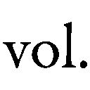

| 「自由」はいかに可能か 社会構想のための哲学 (ＮＨＫブックス) | |
| 苫野 一徳 | |
| (2014) | |
ＮＨＫブックス
「自由」はいかに可能か
社会構想のための哲学
苫野一徳
tomano ittoku
校 閲 山本則子
カバーデザイン 水戸部 功
はじめに
「自由」に生きたい。そう思わない人が、読者の中にいるだろうか？
あえて断言するところから始めたい。
──そんな人は、まずいないはずである、と。
だれもが「自由」に生きたいと思っている。それゆえわたしは、本書で、どうすればわたしたちは「自由」に生きられるのか、その〝条件〟を徹底的に明らかにしたいと思う。
もっとも、一口に「自由」といっても、その言葉が意味するところは様々だ。「自由」とは「わがまま放題」ができることである、一切の強制や束縛がないことである、あるいは、すべてを決定づけている宇宙の法則から独立していることである......等々、「自由」は人によってそのイメージにズレのある、ひどく多義的であいまいな概念なのだ。
それゆえ、だれもが「自由」に生きたいはずだ、などといわれても、今の時点では、まだ読者の腑に十分に落ちることはないだろう。「わがまま放題」ができる「自由」や、一切の強制や束縛から解放された「自由」を、だれもが必ず望んでいるとはいえないだろうし、ましてや、宇宙の法則から完全に独立した「自由」を切実に願う人など、ほとんどいないように思われるからだ。
しかしそれでもなお、わたしは本書で、だれもが「自由」を欲しているのだということを〝論証〟したい。そしてその上で、ではわたしたちはどうすれば「自由」になれるのか、その〝条件〟を克明に描き出したいと思う。
そのためには、そもそも「自由」とはいったい何なのか、その〝本質〟を、まずはできるだけだれもが納得できる仕方で明らかにする必要がある。「自由」は多義的であいまいな概念だが、それでもなお、「なぁるほど、確かにこのような『自由』の捉え方は本質的だ」といいうるような、「自由」の〝本質〟を描き出す必要がある。
さて、しかし今日、だれもが「自由」を欲しているという主張には、残念ながらあまりリアリティがないようにも思われる。
というのも、現代のわたしたちは、過剰な「自由」の中で、かえってしばしば生き苦しい思いを抱えてしまっているからだ。
どう生きても「自由」だ、といわれると、わたしたちはむしろ、どう生きればいいのか分からなくなってしまうことがある。たとえそれが分かったとしても、そのような「自由」な生を現実に手に入れるのは容易なことではない。
わたしたちの多くは、今、生まれ育った狭い共同体に縛られ続けなければならないわけでも、決められた職業に一生従事しなければならないわけでもない。だれもが、望むならプロスポーツ選手やミュージシャンや起業家を目指していいし、同性愛者として生きたって、それが可能であれば、引きこもりとして生きたっていい。
しかしいうまでもなく、確かにだれにでもミュージシャンや起業家になる「自由」はあるが、だれもがなれるというわけではない。同性愛者として生きることには、今なお世間的には様々な困難がある。引きこもりとして生きるためにも、たとえば親の経済力や、あるいは在宅で生きていけるだけのスキルなどが必要だ。
こうして、現代のわたしたちは、あなたは「自由」だといわれればいわれるほど、現実にはそれが中々可能ではない苦しみを、多かれ少なかれ抱えてしまっているのだ。
現代ドイツの哲学者アクセル・ホネット（一九四九─）は、その名も『自由であることの苦しみ』という著作の中で、十九世紀の哲学者Ｇ・Ｗ・Ｆ・ヘーゲル（一七七〇─一八三一）の哲学を論じながら、いまだ政治的な「自由」さえ十分になかった当時のドイツ（プロイセン）において、ヘーゲルがすでにこの問題を先取りしていたことを述べている。
ちなみにわたしの考えでは、ヘーゲルは哲学史上において、「自由」の本質とそれを可能にする条件を最も深く考え抜いた哲学者である。しかし残念なことに、そのほとんど不当なまでの難解さと、〝時代遅れ〟の有神論的形而上学体系（絶対精神〔＝神〕を前提とした哲学体系）、そして、長らく専制国家プロイセンの「御用学者」と見なされてきたことなどが、これまで多くの現代人をヘーゲルの哲学から遠ざけてきた。
本書でわたしは、こうしたヘーゲルの〝悪評〟をいくらか退けつつ、そのすぐれた「自由」論に改めて注目し、これを現代的に再構築したいと考えている。
しかしそれは本論で存分に論じることにして、ここでは、ヘーゲルが時代に先駆けて見抜いていた「自由であることの苦しみ」について、ざっと見ておくことにしたいと思う。
ホネットのヘーゲル解釈をわたしたちの文脈にやや強引に置き直していうと、それは、たとえわたしたちが政治的「自由」や生き方の「自由」を得たとしても、まさにそのためにこそ、わたしたちは「無規定性の苦しみ」の中に投げ込まれてしまうことになる、ということだ（『自由であることの苦しみ』七七頁）。
それはまさに、「どのように生きればいいのか分からない」という苦しみだ。「無規定性の苦しみ」、それは、「何をやってもいい」「何をやっても自由だ」という「無規定性」の中で、自らの生き方に迷い苦しむことなのだ。
それだけではない。どれだけ「やりたいことをやっていい」といわれても、わたしたちの多くは、時に、「やりたいことなんてどうせ叶わない」という絶望感に打ちひしがれることがある。とりわけ、「自由」を標榜する「自由競争社会」の中で、わたしたちは絶えず競争にさらされ、そしてしばしば敗れ去る。
志望校に落ちる、就きたい職業に就けない、付き合える人や結婚相手が見つからない、出世競争に敗れ去る......。わたしたちは、たとえ「やりたいこと」が見つかったとしても、それが現実には中々叶わないことを、日々思い知らずにはいられないのだ。
あるいはそれは、「自由であることの苦しみ」というほど大げさなものではないかもしれない。〝何をやってもいい〟わたしたちには、〝何もやらなくてもいい〟「自由」もまた与えられている。それゆえ「自由」は、人によっては、「苦しみ」というよりは単なる「退屈」を与えるだけのものであることもあるだろう。
いずれにせよ、今日、「自由」という言葉の価値は、そのリアリティをひどく失ってしまっているようにわたしには見える。むしろそれは、近年少しずつ貶められ始めているようにさえ見える。
今わたしたちに必要なのは、「自由」ではなく、むしろ〝動物的快楽〟を満たすことのできる生活である。「自由」よりも〝他者〟に対する責任こそが重要である。そういった考えが、今日一定のリアリティをもって主張されるようになっている。
しかし本当に、「自由」はもはや時代遅れの価値になってしまったのだろうか？
わたしはそうは考えない。むしろわたしの考えでは、「自由」に代わる価値をいくら提示したところで、それは常に「自由」の一条件にすぎないものである。それが〝他者〟の絶対的尊重であれ〝動物的生〟であれ、そのような生き方は、わたしたちが「自由」になるための、一つの条件、あるいは一つの方途というべきなのだ。
あえていいたい。「自由」はわたしたち人間にとっての、最上の価値である。だれもが「自由」を欲している。そしてわたしたちにとって、それ以上の人間的価値はない。
このことを〝論証〟するためには、繰り返すが、そもそも「自由」とは何なのか、その〝本質〟をまずは底の底から明らかにする必要がある。
しかしわたしの考えでは、現代思想家たちの多くは、この問いをこれまでとことん追いつめて考えてこなかった。そして、にもかかわらず、先述したように、そして本論で詳しく見るように、少なくない思想家たちは、「自由」に代わる価値を提示しようと企ててきた。
しかしそれは、本末転倒な思想的営みだとわたしは思う。「自由」とは何か。この問いに十分に答えることなく、これに代わる、あるいはこれを超えうるような価値を、わたしたちが提示することなどできないはずであるからだ。
「自由」は、近代哲学の、そして近代社会における最重要テーマであったものだ。「自由」とは何か？ 「自由」な社会はいかに可能か？ ジャン＝ジャック・ルソー（一七一二─七八）やイマヌエル・カント（一七二四─一八〇四）、そしてヘーゲルなどをはじめとする近代の哲学者たちは、皆、このテーマをめぐって思索を展開してきたといっても過言ではない。
それゆえわたしたちは、これら近代哲学者たちの探究した「自由」を、もはや〝時代遅れ〟であるとして切り捨てる前に、まずはとことん、このテーマと格闘しなければならないはずだ。そして繰り返すが、この「自由」の本質が十分に解明されたなら、これに代わる、あるいはこれを超えうるような人間的価値を見出すことなど、原理的に不可能であることもまた理解されるはずである。
「自由」とは何か？ そしてわたしたちは、どうすれば「自由」に生きられるのか？ この古典的な、しかし今日改めて答え直さなければならない問いに、真正面から取り組むこと。そしてできるだけ深く答え抜くこと。これが本書の課題である。
目次
序章 「自由」に代わるもの？
一 「奴隷化」の道
二 「動物化」の道
三 「新たな大義」の道
四 「自由」の探究
第Ⅰ部 「自由」の本質
第一章 「本質」とは何か
第二章 「自由」のイメージを解体する
一 因果からの自由
二 恣意としての自由
三 解放としての自由
第三章 「自由」とは何か
一 ヘーゲルの「自由」論
二 ヘーゲルの社会理論
第四章 現代政治哲学の難点
一 ロールズ──「道徳・義務論的アプローチ」の問題
二 サンデル──「状態・事実論的アプローチ」の問題
三 ローティ──「プラグマティックなアプローチ」の問題
四 「原理」に基づいた「実践理論」の展開
第Ⅱ部 「自由」の条件
第五章 どうすれば「自由」を感じられるか
一 欲望
二 「自由」のための思考
第六章 どうすれば「自由」な社会を作れるか
一 法・教育・福祉
二 社会の諸圏域に関する理論
三 交響圏と遊動性
引用文中の引用者註は〔 〕で表記した。
序章
「自由」に代わるもの？
世界には、「自由」という長いトンネルを、通り抜けた社会といまだその手前にとどまっている社会とがある。
トンネルの先と手前とでは、見える景色が全く違う。
いまだ政治的「自由」さえ手にしていない社会において、人びとは生き方の「自由」を何よりも欲している。
他方、すでに「自由」を手に入れた多くの先進国の人びとが抱えているのは、むしろ「自由であることの苦しみ」だ。「自由」であるからこそ感じる不自由、これが現代のわたしたちに、「自由」の価値とそのリアリティを失わせしめているのだ。
しかしそれでもなお、わたしたちは、「自由」が人間にとって何ものにも代え難い価値であるということを知っている。
現代の専制国家に違和感や嫌悪感をわたしたちが抱くのは、そこに人間的「自由」が見られないからだ。あるいはまた、独裁者を一様に誉め称える国民を見てわたしたちが一種の異様さを感じるのは、そこに個々人の自由な意志が見出せないように感じられるからだ。
わたしたちにとって、「自由」はやはり最も重要な価値である。少なくとも、その重要性を真っ向から否定する人はいないはずである。
しかし繰り返すが、それでもなお、わたしたちの多くは、今日その実感をひどく失ってしまっている。「生きたいように生きていい」。この言葉は、時にわたしたちを、「無規定性の苦しみ」の中に投げ入れるのだ。
この苦しみから逃れるために、人類はこれまでいくつかの道を歩んできた。本序章では、その道をざっと辿るとともに、現代思想が模索し始めている「自由」に代わる理念、あるいはこれを超えうるとする理念──「他者」や「正義」といった理念──を、簡潔に紹介していくことにしたいと思う。
わたしの考えをあらかじめいっておくと、この「自由」に代わるものとして提示されている諸理念は、ある意味では一種の〝反動〟である。「自由」ゆえの様々な問題に直面した現代のわたしたちは、その価値に十分思いを致すことなく、「自由」の価値を否定したり、あるいは軽視したりしてしまっているのだ。
確かに、「他者」や「正義」といった理念は、「自由」という言葉に比べて、どこか倫理的に気高い響きを持っているように聞こえる。しかし繰り返すが、それらいずれの思想も、わたしの考えでは、多くは「自由」の本質を十分に洞察することなく、その表層的なイメージをもって「自由」を批判してしまっているのだ。
そのことも含めて、以下、「自由」をめぐる現代の（思想）状況について素描していこう。
一 「奴隷化」の道
「自由であることの苦しみ」から逃れるために、わたしたちがしばしば足を踏み入れてしまう第一の道、それは「奴隷化」の道である。
せっかく手に入れた「自由」を、わたしたちは自ら放棄し、だれか強大な力を持つ者、あるいは何らかの〝システム〟に従属する道を選んでしまうことがあるのだ。
なぜか？ それは、わたしたちが「自由」になったために、一人社会に投げ出され、孤立化の不安を抱えてしまったからである。そしてまた、過酷な「自由競争社会」にさらされ、時に惨めさやルサンチマン（妬み、そねみ）を抱えてしまうことがあるからだ。それゆえわたしたちは、この苦しみから逃れるために、しばしば「自由」を自ら放棄し、その生が何らかの形で支配・決定されることを望むようになってしまうのだ。
これは、エーリッヒ・フロム（一九〇〇─八〇）の『自由からの逃走』によって、一般にも広く知られるようになった心理過程だ。「自由」であったはずの人びとが、その「自由」を放棄しファシズムの支配を求めるようになった背景に、フロムはまさに「自由であることの苦しみ」を見出したのだ。
実はこの問題は、フロムよりずっと前の思想家たちによっても気づかれていたものだ。
たとえば、十九世紀フランスの思想家、アレクシ・ド・トクヴィル（一八〇五─五九）は、一八四〇年刊行の『アメリカのデモクラシー』第二巻において、民主主義における「穏やかな専制」──知らぬ間にわたしたちの生を支配している専制権力──の危険性を警告した（『アメリカのデモクラシー（第二巻上）』第六章）。社会学者のゲオルク・ジンメル（一八五八─一九一八）もまた、平等あるところ「専制」の危険が常につきまとうことを指摘した（「社会的分化論」四八二頁）。あるいは、フロムと同様ナチスからの逃亡経験を持つハンナ・アーレント（一九〇六─七五）は、階級社会が崩壊し、人びとが「自由」で「バラバラ」になった社会こそが、ナチズムとスターリニズムという全体主義を生み出す最大の土壌になったのだと主張した（１）（『全体主義の起原 ３』）。いずれの思想家たちも、それぞれ焦点は違っていても、「自由であることの苦しみ」が、人びとの「奴隷化」を招き寄せる危険を警告したのだといっていい。
先述したヘーゲルもまた、実はどの思想家よりも早い時期に、この問題を予見していた哲学者だった。彼は次のようにいっている。
それだからこそ、人間が空虚性と否定性の苦しみだけでも免れるために、いっそ奴隷と同じくまったくの依存状態にまで身をおとすことになるような、客観性へのあこがれが生じかねないのである。（『法の哲学』§一四一追加）
今後もしばしば引用するヘーゲルの文章は、〝ヘーゲル語〟ともいうべき独自の概念によって編み上げられた、しばしば哲学史上最も難解といわれるものである。この難解さには、後述するある特殊な理由もあったようだが、それはともかく、本書で彼の言葉を引用する際には、これをできるだけ日常語に置き換えて解説を加えていくことにしたいと思う。
「空虚性と否定性の苦しみ」とは、これまでしばしば述べてきた、「自由であることの苦しみ」のことである。わたしたちは、「自由」になったからこそ、その「自由」な生を存分に満たせない「空虚性」と、それゆえに世界から「否定」されているという実感・苦しみを抱いてしまうことがある（「否定性」にはヘーゲル哲学における独自の意味があるが、ここではさしあたりこのように理解しておいてよいだろう）。そしてそのために、わたしたちはしばしば、何らかの「客観性」、すなわち、強大な力を持つ者や、（ファシズムのような）〝システム〟に従属したい、支配されたいと願ってしまうことがある。ヘーゲルはそのように主張したのだ。
いまだ政治的「自由」さえなかった十九世紀当時のプロイセンにおいて、「自由」を獲得した後のわたしたちの苦しみまでヘーゲルが見通していたことは、驚くべき先見の明といっていい。そしてこのような「奴隷化」の危険性は、その後のファシズムだけでなく、今もなおわたしたちの社会に潜み続けている。とりわけ、過酷な「自由競争」にさらされ、「自由」であることの不安を抱えた〝大衆〟が、この道を再び望むことにならないとは限らないのだ（２）。
実際わたしたちは、時にこう思ったりはしないだろうか？
どのように生きても「自由」だといわれても、どう生きればいいか分からない。自分はどう生きたいのか、何が向いているのか、そんなことばかり考え続ける人生はひどく苦しい。だから、「自由に仕事をすればいい」などといわれるよりも、決まりきった仕事を、命じられるままに続けていけた方がよっぽど生きやすい......。
あるいはこうも思ったりはしないだろうか？
どれだけ「自由」だといわれても、結局のところ、わたしたちは社会が決めた競争ゲームの中を生きているだけだ。そしてわたしたちの意志とは無関係に、年収や地位という形で人間の価値が測られ、その中で生き方が決定されることになる。
決められた競争ゲームの中で、「自由」の名のもとに序列化されるくらいであれば、そもそも「自由」なんてない方がいい。「自由競争社会」の中でこんなにも惨めな思いをさせられるくらいなら、だれかがあらかじめ、一人ひとりの生き方を決めてくれた方がいい。
......そんなふうに、思ってしまうことはないだろうか？
わたしたちは皆、「自由」の価値を十分に知っているはずだ。しかし「自由であることの苦しみ」は、その「自由」を、時に放棄したいとわたしたちに思わせてしまうのだ。
しかしそれは、まかり間違えば「奴隷化の道」である。
それはそれで構わないではないか。そう思う人もいるかもしれない。しかし本当に、わたしたちはそういってしまっていいのだろうか？
この問いに答えるためにも、わたしたちは今改めて、そもそも「自由」とは何かという問いから説き起こし、それを可能にする社会のあり方を十分に明らかにし直す必要がある。過度な「自由競争社会」を、わたしたちは本当に「自由」な社会と呼べるのか？ こうした問いも含めて、本書では、現代において「自由」に生きるとはどういうことか、それを可能にする社会はどういう社会か、探究していくことにしたいと思う。
二 「動物化」の道
「自由であることの苦しみ」がもたらす第二の道は、「動物化」の道である。
これは、フランス現代思想に多大な影響を与えた、二十世紀の思想家アレクサンドル・コジェーヴ（一九〇二─六八）が論じ（『ヘーゲル読解入門』二四四─二四七頁）、それを、政治思想家フランシス・フクヤマ（一九五二─）が大きく取り上げ（『歴史の終わり（下）』）、また日本でも思想家の東浩紀（一九七一─）が用いたことで、よく知られるようになったキーワードだ（『動物化するポストモダン』）。
かつて人びとは、人間的「自由」を獲得するために、専制君主を打ち倒し、身分制を撤廃し、一人ひとりが対等に尊重される社会を樹立することに命を賭けた。そしてそのような社会の中で、自己を実現していきたいという欲望を抱き生きていた。
しかし今や十分「自由」を手に入れたわたしたちに、そのような努力はもはや必要ではなくなった。今のわたしたちは、ある意味では、短期的な欲求を満たしてくれるものを大量の情報の中から選び取り、それに耽っていれば事足りる。そのつどの欲求を瞬間的に満足させられる、いわば「動物的」欲望に喜びを見出し生きていければ、それで十分幸せなのだ。
ゲームに打ち込む毎日を送る、インターネットの中で即時的な欲求充足の手だてを見つけそれに勤しむ、アニメやゲームの中で、手軽な疑似恋愛とエロスに耽る......。今のわたしたちは、そうした生活からだけでも、その気になれば十分な満足を得ることができるのだ。
それはまさに、「動物的生」を生きることだといっていい。
もちろん、承認欲望や自己実現欲望など、いかにも人間的な欲望を達成するために、長期的な展望をもって社会とかかわっている人は少なくない。しかしわたしたちは、過去に比べれば圧倒的に、「動物化」することが容易になった時代を生きている。
あるいはそれは、「動物化」せざるを得なくなった時代であるともいっていい。
繰り返し述べてきたように、わたしたちの多くは、今、どのように「自由」に生きればよいのか分からないという苦しみ、また、「自由」に生きたところで競争社会の中で惨めな思いを味わわされるだけだという絶望感を抱えながら生きている。あるいは、十分「自由」になった生活の中で、目指すべきものもなく、日々退屈な生活を送っている。
そうした現代のわたしたちからしてみれば、長期的な展望をもって苦労して人生を切り開くことなど、ある意味ではばからしいことだ。それで本当に自分の望む「自由」な生が見つかるわけでも、見つかったところで実現できるわけでもないように思えるからだ。
そうだとするなら、高邁な人間的「自由」や自己実現など求めることなく、その時々の動物的欲求を満たしている方が合理的である。わたしたちは時にそう思う。
──わたし自身は、こうしたある種の「動物化」は、それが他者を傷つけるのでない限り、否定されるべきことではないと考えている。むしろ「動物化」は、人間的「自由」の重要な一条件であるとさえいっていい。
わたしたちは、「自由」への欲望を達成するために、日々様々な手だてを講じ、これを存分に満たしたいと望む。しかしそれは、現実にはそう容易なことではない。それゆえわたしたちは、どうしても、自らの欲望の形を変えていく必要に迫られることになる。
後に詳論するように、かつてルソーは、不幸の本質は「欲望」と「能力」の不均衡にあるといった。「欲望」に「能力」が追いつかない、そこに不幸の、そしてまた不自由の本質がある。ルソーはそう鋭く洞察した。
だとするならば、この不幸や不自由から逃れて曲がりなりにも「自由」を感じられるようになるためには、わたしたちは、能力を上げるという選択肢のほかに、その不幸の源泉である欲望を下げる、あるいはこれを変えてしまうという選択肢を取ることもありうるのだ。
したがって、高邁な自己実現ではなくその時々のある種「動物的」な欲求を満たすことで事足れりとする態度もまた、人間的「自由」を確保するための一つの手段だといっていい。それはちょうど、かつてヘーゲルが指摘したように、絶対的な専制権力と身分秩序の苦しみから逃れるために、一切の形あるものの「断念」をもって内的「自由」を確保しようとした、古代インド思想と同型の思考形態である。ヘーゲルの言葉を借りれば、そこでは「生活のあらゆる活動、あらゆる目的〔中略〕を断念することが、最高の境地であると見なされる」（『法の哲学』§五追加）のだ。
わたしたちは、「自由」への欲望を叶えるためにこそ、高邁な自己実現や承認の欲望をなだめたり変容させたりして、自らの欲望を動物的欲求の満足として定めることもある。つまり「動物化」は、「自由」に代わる道ではなく、その一つの条件、一つの方途なのである。
その意味でわたしは、「動物化」をもって「自由」に代わる道と説く思想に与することはできない。繰り返すが、これはあくまでも人間的「自由」を達成するための一つの道にすぎないからだ。現代は「自由」から「動物化」へと移行した時代であるわけではなく、「自由」の一方途として、「動物化」の道を選ぶことがかつてより容易になった時代であるにすぎないのだ。
ちなみに、先に挙げたコジェーヴやフクヤマや東といった思想家たちは、「動物化」の道を決して称揚したり推奨したりしているわけではない。むしろ──それぞれに思想的立場は違っているが──それは人間的にいって何かおかしいことだという問題意識を共有している。そしてこの「動物化」の道を、いかに克服しうるかと問うている（３）。
しかし今日、この「動物化」を「自由」に代わる理念として重視する思想が、どことなくその存在感を増し始めているようにも思われる。今や十分「自由」になった時代において、わたしたちに必要なのは、高邁な──そして幾分時代遅れの──「自由」の理念などではないのではないか？ わたしたちはもはや、そのつどの欲求を淡々と満たすだけの、「動物的生」を営むことができればそれで十分なのではないか？ むしろそれこそが、楽しい気ままな人生といえるのではないか？ そうした主張が、いまだ思想的雰囲気でしかなかったとしても、近年少しずつその存在感を増し始めているように思われる（４）。
それはある意味においては、人間的「自由」に代わる理念の提唱だといっていい。しかし繰り返すが、どれだけ「動物化」を称揚したところで、それは「自由」に代わる理念ではあり得ない。それはあくまでも「自由」の一条件なのである。わたしたちは、自らの「自由」のために、高邁な理想を追い求めることもあれば動物的生を生きようとすることもある。どちらも、わたしたちの「自由」をできるだけ実現するための、一つの方途にすぎないのである。
後に「自由」の本質を明らかにする過程で、このことはより深く理解されるはずである。
三 「新たな大義」の道
〈他者〉の思想
さて、しかし今日、「動物化」などよりいわば遥かに高尚な、「自由」に代わる、あるいはこれを超えうるとする理念が主張されている。
「他者」や「正義」といった理念がそれである。
たとえば、現代倫理思想に大きな影響を与えたフランスの思想家エマニュエル・レヴィナス（一九〇六─九五）は、〈私〉の「自由」の上に〈他者〉を置く。「〈他者〉を迎えいれることこそが、私の自由を問いただすことなのである」（『全体性と無限（上）』一五九頁）。レヴィナスによれば、〈他者〉こそが「私の自由をむしろ創設する」（『全体性と無限（下）』五一頁）ものなのだ。
自由は、自由によってみずからを正当化することはない。〔中略〕その反対に、アレルギーをいだくことなく他者と出会うこと、言い換えれば正義において出会うことなのである。〔中略〕自己に対する無限な要求において、やましくない良心のすべてを踏み越えることにおいて、自由は正当化されるのである。（前掲書、二六五─二六七頁）
レヴィナスがいっているのは、要するにこういうことだ。
「自由は、自由によってみずからを正当化することはない」。つまり、「自由」は、〈私〉が主張すればただちに許され可能になるようなものではない。〈私〉が「自由」でありうるのは、〈私〉が〈他者〉に対して無限の「責任」を負う時だけである。そして〈他者〉によって、「自由」を「任命」された時だけである（『全体性と無限（上）』第一部Ｃ）。つまりレヴィナスは、〈他者〉を、そして〈他者〉を尊重するという〈正義〉を、「自由」を超えるまさに新たな大義として掲げたのだ。
ホロコーストの悲劇を味わったレヴィナスにとって、〈他者〉の思想は全力を挙げて打ち立てなければならない倫理思想だった。〈私〉の「自由」の名のもとに、〈他者〉が否定されてはならない。彼はそう考えた。その切実さ、真摯さにおいて、レヴィナスの倫理思想は、現代思想のシーンにおいてひときわ光彩を放っている。
人類のほとんどが「自由」のトンネルの手前にいた時代、わたしたちは、「自由」こそが何よりも尊い、命を賭けてでも獲得しなければならないものと考えていた。ところがいざそのトンネルを抜けてみると、この「自由」のゆえにいったいどれだけの血が流されてきたか、わたしたちは思い知らずにはいられなかった。
十九世紀、経済活動の「自由」を主張した列強が、植民地支配に乗り出し多くの人の命を奪った。二十世紀、相異なるイデオロギーを持つ人たちが、それぞれの思想・信条の「自由」を掲げ、互いに命を奪い合った。
「自由」の解放は、結局のところ、壮絶な命の奪い合いを解放することにほかならなかったのだ。現代において、「自由」の価値それ自体を見直す思想が登場したのは、それゆえある種必然的なことだったといっていい。
しかし、「自由」のトンネルを通り抜ける過程で起こった様々な凄惨な問題を理由に、「自由」に代わる理念を打ち出そうと試みることは、わたしには早計な〝反動〟であるように思われる。
〈私〉の「自由」には、〈他者〉の存在および〈他者〉の尊重が不可欠である。このことを、他のどの思想家よりも克明に描き出した点において、レヴィナスには大きな功績がある。しかしその上で、わたしたちは、わたしたちの「自由」に先んじる〈他者〉の思想を掲げるのではなく、〈他者〉の尊重は、むしろわたしたちの「自由」の最重要条件であるというべきなのだ。
かつてカントは、「正義はなされよ、たとえ世界は滅びるにしても」（『永遠平和のために』九四頁）といった（この言葉自体は当時一般に広まっていたもので、ドイツ皇帝フェルディナント一世のものとされている）。これに対して後にヘーゲルが激しい批判を加えたのは有名だが（『法の哲学』第二部第三章）、わたしたちもここで、同じ批判をレヴィナスに行う必要がある。
レヴィナスの思想は、極端にいえば、「他者を絶対的に尊重せよ、たとえわたしの自由は滅びるにしても」というものだ。しかしわたしたちは、むしろ、「他者を尊重せよ、しかもそれがわたしの自由と両立するように」というべきなのだ。そしてその命題を、いかに可能にしうるかと問うべきなのだ。行きすぎた「自由」を反省するあまり、「自由」を〈他者〉に従属させてしまう前に、わたしたちは、もろもろの〈私〉の「自由」を、いかに互いに共存させうるかと問う必要がある。
「自由」の解放ゆえの暴力を許さない思想を、レヴィナスが打ち立てたかった動機はきわめて真摯だ。しかしわたしの考えでは、その思いが余って、彼は大きく勇み足をしてしまった。わたしたちは、〈他者〉を〈私〉の「自由」の上に絶対化する必要はないし、そうすべきでもない。むしろ、〈他者〉の思想を十分に含み込んだ「自由」の哲学を、もう一度徹底的に鍛え直さなければならないのだ。
〈私〉が「自由」に生きるためには、何らかの形で必ず〈他者〉の「自由」を尊重しなければならない。つまりわたしたちは、「自由」を〈他者〉に代えてしまう必要などはなく、むしろ〈他者〉尊重は、〈私〉が「自由」になるための最も重要な条件であるといわなければならないのだ。
後に「自由」の本質を明らかにする過程で、このこともまたより深く理解されるはずである。
「正義」という理念
ところでレヴィナスは、当時の政治哲学を、「自由」を異論の余地のない価値と考えるものであるとして厳しく批判している。
しかし今日では、その政治哲学も、レヴィナスの影響もおそらくあって、むしろ「他者」や「正義」をこそ「自由」に先立って掲げる傾向がある。
たとえば日本を代表する法哲学者井上達夫（一九五四─）は、「自由に代わる根本的な価値理念の位置に、『正義（justice）』が据えられるべきだ」（『自由論』一一七頁）と主張する。
ここでいわれる「正義」とは、平たくいえば「他者」をわたしの「自由」に先んじるものとして尊重することだ（井上『他者への自由』）。「自由を正義の規律に服せしめることにより、自由が内包する困難や危険性から自由を救済すること」（『自由論』一一七頁）、これが井上のプランである。
「正義」や「他者」を、「自由」に優先するものとして位置づけること。レヴィナスを継承した現代の倫理思想のみならず、政治哲学もまた、今日そのような方向へと舵を切り始めている側面があるように思われる。よく知られているように、現代政治哲学の今日の活況はとりわけジョン・ロールズ（一九二一─二〇〇二）にその功があるが、そもそもその端緒となった著作こそ、その名も『正義論』（一九七一）だったのだ。
井上はいう。「自由はリベラリズムにとって大切な価値の一つですが、リベラリズムの唯一の価値ではなく、最も根本的な価値でもありません」（前掲書、一一八頁）と。もしこの主張が妥当であるとするならば、リベラリズム（自由主義）を基本的にはその基底としてきた現代の政治哲学は、（それぞれの論者によって濃淡はあったとしても、）そもそも「自由」を、わたしたちにとって最も根本的な価値とは認めていなかったということになる。
四 「自由」の探究
もっとも、右に紹介してきた論者たちは、それぞれ「自由」という言葉に少しずつ異なった意味を込めているため、わたしたちは本当に、「自由」を「他者」や「正義」に従属するものとして位置づけ直すべきなのかどうか、あるいは「自由」というよりもはや「動物化」の道をこそ追求すべきといえるのかどうか、判断するのが困難になっている。そしてわたしの考えでは、まさにこれまでこの「自由」の概念があまりに不明確すぎたことこそが、「自由」に代わる理念を探究するなどという思索の余地を、今日多くの人に与えてしまっている原因なのだ。
二十世紀イギリスの哲学者であり、政治思想における「自由」論の旗手であったアイザイア・バーリン（一九〇九─九七）は、かつて次のようにいったことがある。「自由」は哲学史上あらゆる角度から論じ尽くされてきたが、しかし今なお、「異論にたえうるような解釈はほとんどない」（バーリン『自由論』三〇三頁）と。
今日、その状況はますますひどくなるばかりであるように思われる。それゆえ先の井上も、「自由の多義性は特に悪名高い」（井上『自由論』二一頁）と述べた上で、あえて「自由」の本質を明らかにせず、議論を「正義」へと移行させていくという戦略をとっている。
しかしわたしたちは、今改めて、「自由」とはいったい何なのか、そしてそれは、現代どのように可能なのかと問うべきなのではないか？ 「自由」の本質を明らかにすることなしに、「自由」を否定したりこれに代わる理念を打ち出したりする前に、もう一度、「自由」に真っ向から立ち向かってみるべきなのではないか？
前に述べたように、わたしたちは、「自由」が人間にとって大切な価値だと知りながら、今日そのリアリティを十分に感じることができずにいる。だとするなら、わたしたちはなおのこと、「自由」とはいったい何なのか、そしてそれはどうすれば可能なのか、底の底からもう一度考え直し、明らかにする必要があるのではないか？
改めていっておこう。わたしの考えでは、「自由」は「動物化」や「正義」や「他者」といった概念の中に吸収され解消されてしまうようなものではなく、むしろその反対に、これらの概念こそが「自由」の一条件なのである。以下で「自由」の本質を明らかにする過程で、このことは十全に理解されるはずである。
『社会契約論』の有名な冒頭で、ルソーは次のようにいっている。
人間は自由なものとして生まれた、しかもいたるところで鎖につながれている。〔中略〕どうしてこの変化が生じたのか？ わたしは知らない。何がそれを正当なものとしうるか？ わたしはこの問題は解きうると信じる。（『社会契約論』一五頁）
今日わたしたちは、次のようにいわなければならない。
人間は「自由」を獲得した。しかしなお、「自由」とは何か、「自由」に生きるとはどういうことか、その答えが分からずにいる。それゆえこの問いを、もう一度解き直さねばならない。
第Ⅰ部
「自由」の本質
第一章
「本質」とは何か
「本質主義」批判
本第Ⅰ部では、そもそも「自由」とはいったい何なのか、その「本質」を明らかにしよう。
しかしその前に、ここでいう「本質」という言葉の意味について、誤解を避けるため論じておくことにしたい。
それは絶対の「真理」というような意味では全くなく、「なるほど、確かにその考え方は本質的だ」といいうるような、できるだけ普遍的な深い納得の得られる〝考え方〟のことである。
この改めていうまでもないことをここであえて強調するのは、長らく現代思想は、多くの場合「反＝本質主義」「反＝基礎づけ（真理）主義」を掲げてきた経緯があるからだ。そしてこの場合、「本質」という言葉には、「絶対の真理」という意味が込められていた。
二十世紀における悲惨なイデオロギー闘争を経験した多くの現代思想家たちは、これらイデオロギーが掲げた「真理」や「本質」といった概念を、徹底的に相対化し突き崩すことを一つの重要なモチーフとしていた。いわゆる「無謬の前衛党」（共産党は絶対に正しいという信条）や、人間の「本質」からいって〝劣等種〟は絶滅されるべきである、といったイデオロギーなどがそうである。絶対に正しい思想や「本質」などといったものはない。そのことを繰り返し主張し続けた現代の思想家たちは、そのことによって、「真理」をめぐる争いや殺戮に終止符を打とうと考えたのだ。
それはきわめて意義深い思想運動だった。「反＝本質主義」は、現代思想に限らず、現代に生きるわたしたちにとってもほとんど〝常識〟となっている。「これこそが絶対に正しい考えだ」などということを、現代のわたしたちは、もはや軽々しくいってしまうことはできないだろう。
「自由」をめぐる議論においても事情は同じだ。「自由」の絶対に正しい本質などはあり得ない。そのイメージは人それぞれ異なっていて、それゆえ「これこそが正しい自由であり、そのような自由を皆が目指さなければならない」などということは、独善的で暴力的な教条主義である。多くの現代思想家たちはそのように主張しているし、またそれは、現代のわたしたちにとっても十分に説得的な考えであるだろう。
さて、しかしわたしの考えでは、だからといって、「自由」の「本質」はどのような意味においてもあり得ない、などといってしまうのは、実はきわめて早計なことなのだ。
言葉の多義性の問題
たとえば井上達夫は、「自由」という概念の「多義性」と「融通無碍の操作可能性」を指摘し、そのために、これがそれぞれの論者にとって都合のいいように使われてきたことを批判している。あるいは、同じく法哲学者の安藤馨（一九八二─）もまた次のようにいっている。「ルソーやヘーゲルは言うまでもなく、二〇世紀に於ける左右の全体主義に至るまで政治的論争の内に『真の自由』に訴える説得定義〔言葉の多義性・操作可能性を利用して、相手の情動を動かすのに都合よく言葉を定義したもの〕の実例を見出すことは実にたやすい。何かが気に入らなければ『それは単なる放縦に過ぎず、真の自由ではない』などと言い募ればよいわけである」（「アーキテクチュアと自由」『思想地図 ３』一三八頁）。
ここから、井上は先述した通り「自由」を離れ「正義」へと議論を移行させていき、また安藤も、「福利」「功利」へと議論を移行させていく。
しかしわたしの考えでは、言葉の多義性や操作可能性をタテに「自由」の「本質」などないといってしまうことは、繰り返すが実は早計なことなのだ。
そもそも、どれだけ「自由」に代えて「正義」や「福利」「功利」に議論を移行させたところで、井上や安藤らの議論の前提に立つ限り、それらもまた多義性と操作可能性を免れないものである。周知のように、何をもって「正義」とするか、あるいは「福利」「功利」とするかもまた、これまで「自由」と並んで論争の絶えなかったテーマである。概念の操作可能性を云々する限り、どのような概念を持ち出したところで、その問題は自身の議論へとどうしても跳ね返ってこざるを得ないのだ。
しかし実のところ、わたしたちは概念の多義性や操作可能性を根拠に、「自由」の本質などないといってしまう必要はない。そしてまた、返す刀でその批判を自身へと向けてしまう必要もない。
なぜならわたしたちは、そのようなことなどすでに織り込み済みで、なおも「自由」の本質を洞察することが可能であるからだ。
二十世紀の哲学者、ルートヴィヒ・ウィトゲンシュタイン（一八八九─一九五一）以来、言葉の意味の決定不可能性とその用法の規定不可能性は、哲学の〝常識〟とされてきた。『哲学探究』において、ウィトゲンシュタインは次のよく知られた大工の会話を描いている（第一部）。
たとえば、一方が他方に「石板！」という。その「直示的教示」──言葉が直接に指す対象──は、物体としての「石板」それ自体だ。しかしこの「石板！」という言葉には、文脈に応じて無数の意味がある。それは、「ああ、そこに石板があったのか」という意味でもありうるし、「その石板を持ってきてくれ」や、「危ない、石板が落ちてくるぞ！」という意味であるかもしれないのだ。
言葉は文脈に応じて無数の意味を持つ。それゆえ、言葉の意味は究極的には決定不可能であり、その用法も規定不可能である。ウィトゲンシュタインの〝発見〟をまたずとも、これはほとんど常識的な見解だといっていい。
しかし、このことをもってあらゆる概念は多義的であり操作可能であると主張し続けることは、哲学的にはあまり賢明なことではない。なぜならわたしたちは、言語の多義性・操作可能性など織り込み済みで、さらに深く、なぜ、そしてどのように、わたしたちの言語コミュニケーションは成立しているのかと問う必要があり、またそれは十分可能であるからだ。
そしてその答えは簡明だ。
欲望に基づいて世界を切り取る
近代言語学の父と呼ばれる、フェルディナン・ド・ソシュール（一八五七─一九一三）が正しく洞察したように、言語は決して「実体ではない」（『一般言語学講義』一七一頁）。それはつまり、世界のあらゆる事物や事象がわたしたちに先立って実在しており、それら一つひとつに、言葉が実体的なものとして当てはめられているわけではない、ということだ。海、山、川、といった名前で存在する事物が世界にもともとあるわけではなく、むしろわたしたち自身が、わたしたちの関心に応じて、世界を海、山、川という言葉で切り取っているのだ。
それはまさに、言葉の絶対的（イデア的）本質などはない、ということだ。しかしその上でなお、わたしたちはこの海、山、川という世界の切り取り方（言葉）を、広く共有している。これらの言葉を見聞きした時、わたしたちは多かれ少なかれ異なったイメージを思い浮かべるが、それでもなお、わたしたちはそこに必ず何らかの共通性を見出しているはずなのだ。
その理由をここで深く論じる余裕はないが、さしあたりひと言だけいっておくなら、それはわたしたちが、人間的な「欲望」や「関心」「身体」を共有しているからである（竹田青嗣『言語的思考へ』参照）。海、山、川、という仕方でわたしたちが世界を分節しているのは──つまりそのような言葉を持っているのは──わたしたちが、これを一まとまりの存在として認識する「欲望」「関心」「身体」を持っているからである。そしてそれを、かなりの程度共有しているからである。
水中では生きられないわたしたちの「身体性」や、しかしなおそれを乗り越えて渡っていきたいという「欲望」「関心」があるからこそ、わたしたちは目の前に広がる空間を〝海〟という言葉で切り取ることができているのだ。あるいは、そこから大いなる恵みを受け取りたいという「欲望」「関心」や、それを恵みとして摂取する「身体性」があるからこそ、わたしたちはこの目の前の水の草原に〝海〟という言葉を与えているのだ。
動物や昆虫は、おそらく〝海〟を一まとまりの存在としては見ていない（そのように見ることができない）。深海の魚にとって、それはおそらく、切り取れるような空間ではなく世界のすべてであるだろう。動物に寄生するダニにとって、それは存在してさえいないはずだ。生物学者のユクスキュル（一八六四─一九四四）が克明に描き出したように、それぞれの生物は、それぞれ独自の環境世界を生きているのだ。
われわれはともすれば、人間以外の主体とその環世界の事物との関係が、われわれ人間と人間世界の事物とを結びつけている関係と同じ空間、同じ時間に生じるという幻想にとらわれがちである。この幻想は、世界は一つしかなく、そこにあらゆる生物がつめこまれている、という信念によって培われている。（『生物から見た世界』二八─二九頁）
わたしたちは、わたしたちの生きているこの世界を、わたしたちの「欲望」や「関心」「身体」に応じて切り取り名前をつけている。それゆえ、言葉の絶対的（イデア的）本質などはない。
しかしその上でなお、わたしたちは次のようにいうべきなのだ。わたしたちが互いに言葉を交わし合う時、その言葉の〝共通意味本質〟を、わたしたちは多くの場合暗黙のうちに了解し合っているはずである、と。言語コミュニケーションが相互に成立しているという「確信」をわたしたちが自らの内に抱いている限り、わたしたちはその言葉の共通の意味の〝本質〟についてもまた、暗黙のうちに必ず「確信」しているはずなのだ。
確信＝信憑としての本質
次のような例を思い浮かべてみれば、そのことはいっそう明白になるだろう。
周囲から隔絶された、ある山村に迷い込んだとしてみよう。そこの村人たちは、折りに触れて「ゴンチ！」というが、わたしにはその意味が分からない。しかし繰り返しこの「ゴンチ！」という言葉が発せられている状況を経験することで、わたしには徐々に、「なるほど、これは嬉しい時にいう言葉なのだな」という「信憑」が訪れる。さらに経験を積むことで、「そうか、これは至上の喜びを感じた時にいう言葉なのだな」という「確信」が訪れる。
この時わたしがつかみ取ったものこそ、「ゴンチ！」という言葉の「本質」にほかならない。
哲学者の西研（一九五七─）がいうように、「『本質』は、決して〝どこかにあらかじめ存在しているイデア〟のようなものではない」。本質は「それを問うがわの関心や観点に従って現れてくる『関心（観点）相関的なもの』なのである」。しかしその上でわたしたちは、「ある問題意識から私たちの経験を眺め考察するとき、『どんな人にも共通なこと』かつ『こうとしかいえないこと』を取り出すことができる」（『哲学的思考』四〇八頁）。何らかの言葉や事象について、互いに一定の了解関係が成立しているという「確信」「信憑」が訪れた時、わたしたちはその共通本質を、暗黙のうちに必ず直観しているからだ。
こうしてわたしたちは、本書で探究する「自由」の本質についても、次のようにいうことができるようになる。
「自由」という言葉の絶対的（イデア的）本質などはない。しかしだからといって、「自由」は多義的であるとか操作可能であるとかいって、その共通了解可能な、つまり相互に納得し合える「本質」の解明を諦めてしまう必要なども決してない。ましてや、「自由」概念の多義性のゆえに、別のこれまた多義的で操作可能な概念へと、議論を移行させてしまう必要もない。わたしたちが日常において「自由」という言葉を使用し、また互いに交わし合っている以上、わたしたちはその言葉の「本質」を、なにがしかの形で必ず直観しているからだ。
とするならば、その暗黙のうちに直観された「自由」の本質を、わたしたちは自覚的に洞察する必要がある。そしてそれを、克明に描き出す必要がある。
第二章
「自由」のイメージを解体する
「自由」とは何か？ この問いを解明する前に、本章ではまず、「自由」にまつわる様々な〝表象〟を解体しておくことにしたい。
ここでいう〝表象〟とは、要するに表面的な〝イメージ〟のことだ。
たとえば、「愛」というと、わたしたちは、親の愛や男女間の愛、あるいは神の愛といった〝イメージ〟を思い浮かべる。しかしこれらは、あくまでも「愛」の諸相、つまり諸〝表象〟であって、「愛」の「本質」ということはできない。
「愛」とは何か。この問いに共通了解可能な答えを見出すためには、わたしたちは、これら様々な「愛」に共通する、それを「愛」という以上欠いてはならない、〝共通意味本質〟を洞察する必要がある。
それは、単に「あれも愛、これも愛」というのを列挙しているだけではつかみ取れないものだ。これら様々な「愛」に共通する〝意味〟はいったい何か。わたしたちはそのように思索を深め、これを洞察しなければならないのだ。
先述したように、わたしたちが「愛」という言葉を普段口にしている以上、その言葉の意味の「本質」を、わたしたちは何らかの形で必ず直観している。それゆえわたしたちは、その暗黙の直観を、共通了解可能な仕方で克明に描き出す必要があるのだ。
前述したように、「自由」はきわめて多義的かつあいまいな概念だ。それゆえ、人によってその〝イメージ〟にはかなりのズレがあり、「自由」をめぐる言説は、今日にいたるまで長きにわたって混乱し続けている。
だからこそわたしたちは、まずはいくつかの「自由」の表層的な〝イメージ〟を、単なる〝イメージ〟にすぎないものであるとして、「自由」の本質から区別しておく必要がある。
一 因果からの自由
「自由」の代表的な〝表象〟の一つは、一切の因果法則から「自由」であるというイメージだ。「はたして人間に自由などあるのか？」という問いは大昔から問われ続けてきたテーマだが、ここでいわれる「自由」というのが、まさに「因果からの自由」という〝表象〟だ。
人間もまた生物である以上、自然の法則から逃れることはできない。生まれ、生き、死ぬ、そのサイクルはあらかじめ定められた摂理なのであって、それゆえ人間に「自由」などあり得ないのではないか？ 古来多くの思想家がそう問うた。そして、それでもなお人はいかにして「自由」たりうるかと問うた。
たとえば、古代キリスト教の神学者アウグスティヌス（三五四─四三〇）は、人間は（自然というより神の）摂理の中にあるが、それでもなお、神の意志の内において「自由」なのだと、いささか苦しい「自由」論を展開している（『神の国』第五巻九─一〇章）。
こうした、あらゆる摂理（因果法則）から逃れたある種絶対的な「自由」はありうるか、という問いは、現代思想においてもまた繰り返し論じられてきたものだ。そして周知のように、多くの現代思想家たちは、これまで「そんなものはあり得ない」と主張し続けてきた。
たとえば、いわゆるポストモダン思想の代表的論者の一人、ジャン・ボードリヤール（一九二九─二〇〇七）は、わたしたちは消費社会において「自由」な消費を楽しんでいると思い込んでいるが、実はそれはあらかじめ決められた社会の暗黙のコードに決定され、それに服従しているだけなのだと主張した（１）。
あるいは、独自の社会システム理論を打ち立てたドイツの社会学者ニクラス・ルーマン（一九二七─九八）もまた、人間を、「自由」で主体的な存在ではなく、社会システム内において自己組織化する、複雑なこれまたやはり「システム」と捉えた（２）。そこにあるのは、人間はシステムによって規定されており、それゆえ自らの自由意志によって行為しているわけではないというイメージだ。
こうした「自由」のある種の否定は、社会システム決定論や歴史決定論、宇宙決定論から、遺伝子あるいは脳決定論にいたるまで、様々なヴァリエーションをもって今日も見られるものだ。
こうした見方に立てば、わたしたちに「因果からの自由」などはないということになるだろう。一切は、社会や遺伝子、あるいは脳などに、そもそも〝決定されている〟のだから。
しかし、こうした議論はあまりにナイーヴというほかないものだ。というのも、わたしたちが社会や脳、遺伝子等によってその認識や行動のすべてを決定されているかどうかなど、原理的にいって決して分からないことであるからだ（３）。
〝思考の始発点〟をどこに置くか
このことについて、もう少し詳しく論じておこう。
よく知られているように、カントは『純粋理性批判』のアンチノミー（二律背反）の章において、こうした因果法則からの「自由」はありうるかという問いを、第三アンチノミーとして置いた（『純粋理性批判（中）』）。因果からの「自由」はありうる、という命題（主張）と、そのような「自由」などあり得ない、という命題（主張）、どちらが正しいかと問うたのだ。
カントはこれに独特の仕方で答えを与えた。すなわち、この命題は、論理的推論によってどちらも〝証明〟してしまうことができる、つまり両者は、両立不可能なアンチノミー（二律背反）に陥ることになってしまうのだ、と。それゆえこの問いは、そもそも人間理性によっては回答不可能な問いである、そうカントは答えたのだ。
人間は因果法則から自由でありうるか否か。この問いは、それ自体実はナンセンスな問いである。このことを哲学史上初めて論じたカントの功績は、きわめて大きい（もちろん似たような指摘は、すでにデイヴィッド・ヒュームなどによってなされていたのだが）。しかしここでは、さらに思考を一歩進めて、この問いを、二十世紀ドイツの哲学者エトムント・フッサール（一八五九─一九三八）が創始した、現象学の観点から論じておくことにしたいと思う。
わたしの考えでは、このフッサール現象学は、これから論じていくように、本書において「自由」を考える際の、最も根本的な〝思考の始発点〟となるものだ。
わたしたちは、ある因果法則によってすべてを決定されており、したがって「自由」などあり得ないのか、否か。現象学的にいえば、この問いに答えることはやはり決してできないことである。
フッサールは、懐疑可能な事象の一切を、哲学における〝思考の始発点〟とすることを否定した。ルネ・デカルト（一五九六─一六五〇）が、見えているものも錯覚でありうる、そればかりか、今見ている世界が夢かもしれないとさえ疑える、とあらゆるものを懐疑したように、フッサールもまた、このいわゆる「デカルト的懐疑」を継承し、それでもなお疑い得ない〝思考の始発点〟を探究した。事象の懐疑可能性が高ければ高いほど、そこから始発した思考は、仮説性をますます高め、それゆえ思考・理論の説得力を著しく減じることになってしまうからだ。
フッサールによれば、この懐疑可能な事象には、後述する「超越論的主観性」を除く一切が含まれる。今目の前に本があるということ、窓の向こうには道路が走っていて、その先には海があり、さらにその先には大陸が続いているということ、そうしたこともまた、原理的には──つまり突き詰めて考えれば──懐疑可能な事柄だ。今見えていない向こう側の海が本当に実在するかどうかは、疑おうと思えば疑えるし、前述したデカルトの夢の話を借りれば、この目の前の本でさえ、わたしがこの本を見ている夢を見ているかもしれないと疑うことは可能であるからだ。
そう考えるなら、わたしたちを絶対的に規定している因果法則があるという命題は、著しく懐疑可能な命題だといわなければならない。わたしたちを絶対的に規定しているのは、遺伝子である、脳である、社会システムである......。こうした主張は、そのいずれもが、素朴な懐疑にさえ耐え得ないものだ。したがって、この命題をあたかも事実であるかのように主張し前提して、わたしたちの「自由」を否定することは、あまりにも仮説性・懐疑可能性の高すぎることといわなければならない。その意味で、あらゆる「決定論」は、決して〝思考の始発点〟にはなり得ないのだ。
さて、しかしフッサールは、その上で、だれもが納得できるはずの懐疑不可能な思考の始発点があると主張する。先に述べた「超越論的主観性」がそれである。
この目の前の本は、今このわたしの目に見えているような仕方では本当は存在していないかもしれない（わたしに見えているこの本と虫に見えているこの本は、色、形、その他において、おそらく著しく異なっている。その意味では、わたしに見えているこの本が、この目に映るがままに絶対に実在しているかどうかは決して分からない）。しかしそれでもなお、わたしには、今この目の前の本がこのような仕方で「見えてしまっている」。窓の向こうには、道路も海も、そして大陸も実は存在しないのかもしれない。しかしわたしは今、それらが存在していると「思ってしまっている」。これらの確信は、実は勘違いであったり、その後修正されたりすることはあったとしても、しかしそれでもなお、今わたしがこのように「見えてしまっている」「思ってしまっている」こと自体は、やはり疑えない。
フッサールは、この「見えてしまっている」「思ってしまっている」という「確信」「信憑」こそが、疑い得ない思考の始発点であると主張する。そしてそれを、「超越論的主観性」と呼ぶ（４）。
一切は〝わたし〟の「確信」なのである。ちなみにここでいう〝わたし〟もまた、今ここにこのような肉体を持った、実体としてのわたしではない。わたしの肉体もまた、もしかしたらこの目に映るままに存在しているのではないかもしれない。しかし〝わたし〟は、わたしがこのような肉体を持ったわたしであると「確信」している。このいわば確信作用──フッサールは意識作用という──は、決して疑い得ない思考の基盤であって、この作用をフッサールは「超越論的主観性」と呼んだのだ（５）。そして一切をこの〝わたし〟──超越論的主観性──の「確信」に還元し（現象学的還元）、この「確信」がいったいどのように成立したのか、その「本質的構造を、あらゆる内的な構造に即して解明すること」（『デカルト的省察』一一七頁）を、最も原理的（根本的）な思考の方法として提示したのである。
以上のように考えるなら、わたしたちは「自由」についても次のように考える必要がある。
わたしたちは因果法則から本当に「自由」でありうるか？ この問いに答えることは決してできない。わたしたちの思考や行為の一切が、実はあらかじめ何らかの因果法則──神とか遺伝子とか脳とか社会とか──によって決定されているのかどうかは、わたしたちには決して分からない。したがって、わたしたちはこの問いから思考を始めてはならない。
「自由」についてのわたしたちの問いは、それゆえ次のようなものでなければならない。すなわち、〝わたし〟はいったいどのような時、どのような条件において、「自由」を感じ──確信し──それを「自由」と呼んでいるのだろうか？ フッサールの言葉を繰り返すなら、その「本質的構造を、あらゆる内的な構造に即して解明すること」、そしてその上で、この〝わたし〟の「確信」と他者の「確信」との間に、共通に「確信」されうる「本質」を見出すこと（６）。これこそが、わたしたちが「自由」を問うための根本的な思考の始発点であり方法なのだ。
前章においてわたしはこういった。わたしたちが日常において「自由」という言葉を共に使用している以上、その言葉の〝共通意味本質〟を、わたしたちはなにがしかの形で必ず直観していると。まさにわたしたちは、どのような条件において「自由」を「確信」するのか、その「本質」を、〝内的〟に──つまり因果からの「自由」はありうるかという〝外的〟な観点からではなく──解明する必要があるのだ。
脳科学における偽問題
以上論じてきたように、「因果からの自由」はありうるかという問いは、哲学的にはナンセンスな問いというべきものだ。しかしわたしの見るところ、現代思想や現代科学は、今なおこの偽問題にしばしばかかずらっている。
その一例として、近年における脳科学の議論をざっと見ておくことにしよう。
脳科学者ベンジャミン・リベット（一九一六─二〇〇七）が行った実験は、今日多くの脳科学者に、人間の自由意志を否定するものとして受け止められている（リベット自身はその上でなお自由意志を認めようとしたが）（『マインド・タイム』）。
リベットの実験が明らかにしたことは、脳は、人が意志を持って行動しようと意識的に考えるそのずっと前に、すでに反応しているということだった。つまり、人間の行動は自由な意志によって引き起こされているのではなく、すでに脳内で準備されているというのだ。したがって、一切は脳によってあらかじめ決定されているのであり、人間に「自由」などはない。現代の多くの脳科学者たちは、そう考えてきた。
もっともこうした考えについては、すでに多くの批判が寄せられている。たとえば哲学者の河野哲也（一九六三─）は、わたしたちは、いつでも常に「さあ、やろう」と何らかの決意をして行動しているわけではないし、明確に決意して行動しているとしても、その決意が特定の瞬間において常になされているわけではないと指摘する。したがって、ある特定の瞬間になされた「さあ、やろう」という意志決定の前に脳が反応しているからといって、それが即座に自由意志の否定につながるわけではない（『意識は実在しない』第三章）。
河野の批判は十分妥当なように思われるが、しかしいずれにせよ、わたしたちは、そもそも脳がわたしたちの行動の一切をあらかじめ決定しているのかどうかなど、原理的にいって決して分からない。先述したように、一切の「決定論」は、あまりにも懐疑性・仮説性が高すぎるものなのだ。
たとえ脳が一切を決定しているという仮説がきわめて妥当であったとしても、それも実のところ、哲学的（原理的）には「超越論的主観性」における「確信」「信憑」にすぎない。疑い得ないのは、〝わたし〟がそのような「確信」「信憑」を抱いているということだけであって、この「確信」「信憑」の内容それ自体（脳決定論）はどこまでも懐疑可能である（したがっていうまでもないが、この〝わたし〟の「確信」「信憑」も、実は脳によってそのようにプログラムされているのだなどという主張は無効である）。
脳の機能を次々と解明していく、脳科学の研究はいうまでもなくきわめて意義深い。しかしそこから、一切を脳が決定しているのか否かという問いを立てることは、飛躍であり誤謬である。これまで述べてきたように、それは偽問題なのだ。脳科学の観点からこの問いを論じることは、確かに面白いことではあるかもしれないが、しかしこの問いに答えることは決してできないのだということは、改めて十分自覚しておくべきだ。
改めていっておきたい。わたしたちは、人間はそもそも因果から自由なのかどうかなどと問うべきではなく、どのような時にわたしたちは「自由」を実感できるのか、どのような確信条件においてそれを「自由」と呼んでいるのかと問うべきなのだ。「自由」の本質を解明するための、最も根本的な思考の始発点はこのことをおいてない。
十九世紀イギリスの哲学者Ｊ・Ｓ・ミル（一八〇六─七三）は、その『自由論』を書き起こすにあたって、哲学史を通して問われてきた「意志の自由」はありうるかなどという問題は、ここでわれわれの問うべき問題ではないと切って捨て、市民的・社会的自由の条件をこそ明らかにするべきだと述べた（『自由論』）。わたしもミルに倣ってこういいたい。わたしたちが問うべきは、人間は因果法則から「自由」でありうるか、などという偽問題ではなく、わたしたちはどのような時に「自由」を実感しうるのか、そしてそれを可能にする根本条件は何かという問いなのだ、と。
二 恣意としての自由
「自由」の第二の表象──表層的な〝イメージ〟──は、「何でもやりたい放題ができること」というものだ。ヘーゲルにならって、これを「恣意としての自由」と呼んでおくことにしよう。「恣意」とは文字通り、何でも恣に、わがまま放題、やりたい放題ができるということだ。
これもまた、「自由」の一般的な、しかしヘーゲルの言葉を借りていうなら〝浅薄な〟イメージである。
『法の哲学』において、ヘーゲルはこの「恣意としての自由」を、まったく「教養を欠いたもの」と批判している。
世間ではよく、およそ自由とはなんでもやりたいことをやることができるということだと言われている。だが、そのような表象はまったく思想の形成ないし教養を欠いているものとしか解されえない。（『法の哲学』§一五、強調は原文）
「恣意としての自由」を欲する者は、そのようなものが現実にはあり得ないということに気づいていない。何でもやりたい放題できるなどということは、実はあり得ないことなのだ。
なぜか？ ヘーゲルはいう。わたしたちの欲望は必ず複数あり、そしてそれらは絶えず対立し合っているからだ。
美味しいものを食べたい、しかし太りたくはない。人から愛されたい、しかし自分を曲げたくない。成功したい、しかし何の努力もしたくない。わがまま放題でいたい、しかしそのことで人から非難されたくはない。わたしたちは、常にこの対立し合う「欲望の複数性」の中に投げ入れられている。したがってわたしたちは、あらゆる欲望を完全に満たし、何でもやりたい放題でい続けることなど、原理的に不可能なのである。
にもかかわらず、完全な「やりたい放題」を「自由」の本質と考え、それを目指すとするならば、それはむしろ「自由」からは最もかけ離れたものとなる。というのも、たとえそのような瞬間が仮に訪れることがあったとしても、それはまったくの偶然的なことであるからだ。自らの自由を偶然にゆだねるなど、語義矛盾というほかないだろう。それゆえヘーゲルはいう。「まさしく恣意のうちにこそ、彼は自由でないということが存するのである」（『法の哲学』§一五追加）と。
どのような時、どのような条件において、わたしたちは「自由」を確信・実感しうるのか？ 先述したように、この問いに答える以外に「自由」の本質を明らかにする方法はない。
この観点からいうならば、「恣意としての自由」を、わたしたちは「自由」の本質というわけにはいかない。それが非現実的な「自由」概念である限り、そのような「自由」をわたしたちが確信・実感することなどないからだ。
わたしたちが「自由」を感じる時、そこには必ず何らかの現実性がある。わたしたちは「自由」を、「ああ、今自分は自由だ」と現実的に感じるものなのだ。それゆえその現実性の本質をこそ、わたしたちは深く洞察しなければならないのだ。
三 解放としての自由
「自由」の第三の表象は、あらゆる制限や強制から解放されていること、というものだ。これを「解放としての自由」と呼んでおくことにしよう。
これは、ある意味では「恣意としての自由」の裏返しである。「恣意としての自由」は、あらゆる欲望を〝満たす〟ことで、何でも「やりたい放題」ができることだった。他方、「解放としての自由」もまた、あらゆる制約から〝解放される〟ことで、結局のところは何でも「やりたい放題」ができることをイメージしている。それゆえこの「自由」のイメージもまた、「恣意としての自由」同様、その現実性を著しく欠いている。
破壊の狂暴
その最大の理由は、とりわけ「他者」の存在にある。
他者は常に、わたしたちに何らかの制約を課してくる存在であるからだ。それゆえ他者がいる限り、わたしたちが一切の制約から完全に解放されることはあり得ない。
たとえば、もしわたしが、仕事や家族に縛られるのは嫌だと、その全てをある日突然捨ててしまったとしたらどうだろう？ 大学へ行くことも家に帰ることもなく、毎日遊び暮らしたとしたらどうだろう？
今のわたしの置かれた状況においては、それは間違いなく、わたしの「自由」をかえって奪い去ってしまうことになる。収入がなくなり、家族を失い、世間からも非難され、わたしは結局、不自由で不幸な暮らしを送ることになるだろう。
もちろん、そのような道を選ぶことで「自由」を多少なりとも手に入れられる人もいるだろう。しかし少なくとも今のわたしにとっては、そのような「解放」は決して「自由」をもたらすようなものではない。そしてどのような人にとっても、わたしたちを束縛するすべてのものからの「解放」こそが、いつでもわたしたちの「自由」を意味するというわけにはいかないはずだ。少なくとも、わたしたちが何らかの形で他者とかかわらざるを得ない限りは。
にもかかわらず、なおこのような「解放としての自由」を「自由」の本質と見定め、これを絶対的に求めようとすればどうなるか？
ヘーゲルがいうように、それは「破壊の狂暴でしかありえない」（『法の哲学』§五）。他者の存在ゆえの、様々な制約・束縛からの絶対的な解放は、その他者を破壊し尽くす行為へと行き着かざるを得ないのだ。
ここでヘーゲルが思い浮かべているのは、フランス革命におけるロベスピエール（一七五八─九四）の恐怖政治だ。
ロベスピエールは、「ただ一つの意志」による支配を説き、十カ月の間続いた恐怖政治によって、反対派二千六百人もの命を奪い去った。そのことによって初めて、彼は万人の「自由」は達成されうると考えたのだ。
なぜか？ ヘーゲルはいう。「普遍的意志が現実的意志であるのは、ただ一者である自己においてのみのことだからである」（『精神の現象学（下）』九〇四頁、強調は原文）。つまり、あらゆる制約・束縛から解放された普遍的な「自由」を手に入れるためには、〝このわたし〟の意志こそがすべてでなければならない。しかし他者がいる限り、それは現実には困難だ。であるならば、すべての人びとの意志もまた、〝このわたし〟の意志として統一してしまう必要がある。それゆえそれに従わない者は、「破壊」してしまう必要がある。一切の制限を排した「解放としての自由」を現実政治において求めた時、わたしたちはこうして、「破壊の狂暴」へと容易にいたってしまうことになるのだ。
このヘーゲルの洞察はきわめて重要だ。「自由」を「解放」の〝イメージ〟で捉えた時、そしてそのような「自由」をこそ至上のものとして主張した時、わたしたちは、そのような「自由」を抑圧するものの破壊へと向かうことになる。そしてそれは、結局のところ「万人の万人に対する闘争」（ホッブズ）を招来し、わたしたちの「自由」を自ら破壊することになってしまうのだ。
アーレントも強調しているように、「自由」の本質は「解放」にはない。もし「自由」の本質を「解放」に見るならば、それは必ず「テロを解き放つ」ことになる。そうアーレントはいう。
基本的な誤解は、解放と自由のちがいを区別していないという点にある。反乱や解放が新しく獲得された自由の構成を伴わないばあい、そのような反乱や解放ほど無益なものはないのである。（『革命について』二二三─二二四頁）
「自由」は、単なる反乱や解放によって実現されるものではない。それは同時に、何らかの仕方で「創設」されるべきものなのだ（前掲書）（それがどのように「創設」されるべきものであるかは、第Ⅱ部で十分に論じることにしたいと思う）。
確かにわたしたちは、「自由」をまずは「解放としての自由」としてイメージするものだ。しかし「自由」をその〝イメージ〟で捉え続ける限り、それはやはり浅薄な〝表象〟である。「解放としての自由」は、何ら現実性を持ち得ないばかりでなく、無理やり現実化しようとするならば、繰り返し述べてきたように「破壊の狂暴」へと至らざるを得ない自己矛盾に陥るからだ。
こうして、「恣意としての自由」と同様、「解放としての自由」もまた、わたしたちは「自由」の本質というわけにはいかない。先述したように、これらが非現実的な「自由」概念である限り、そのような「自由」をわたしたちが確信・実感することなどないからだ。
繰り返しいっておきたい。わたしたちが「自由」を感じる時、そこには必ず何らかの現実性がある。それゆえその現実性の本質をこそ、わたしたちは深く洞察しなければならない。
「消極的自由」概念の問題
さて、しかしわたしの考えでは、現代の「自由」論においては、「自由」をこの「解放としての自由」としてイメージするものがきわめて多い。そしてそのことが、現代における「自由」論の、様々な混乱の一つの理由となっている。
その典型が、特にバーリン以来繰り返し言及されるようになった、「消極的自由」の概念だ。彼の有名な論文「二つの自由概念」以来、「消極的自由」と「積極的自由」の区別は、現代における（政治）哲学的「自由」論の、一つの基本モデルとされてきた。
しかしこの二つの「自由」概念もまた、実は「解放としての自由」という「自由」の〝表象〟に囚われた概念なのだ。それゆえここを前提に「自由」を論じる限り、わたしたちはその本質の解明にはいたらない。そればかりか、後述するように、この非本質的な区分のために、「自由」の概念はよりいっそう混乱させられ、（政治）哲学を「自由」からまた別の概念へと向かわせる、一つの要因となってしまっているのだ。
消極的自由とは、「～からの自由」、すなわち「いかなる他人からの干渉もうけずに、自分のしたいことをし、自分のありたいものであることを放任されている、あるいは放任されているべき範囲」（バーリン『自由論』三〇三頁）を意味するとされる。
他方の積極的自由は、「～への自由」、バーリンの言葉でいえば「自己支配」の自由のことだ（前掲書、三四一頁）。「～からの自由」を旨とする「消極的自由」が「解放としての自由」であるとするならば、こちらは「恣意としての自由」に近い概念といえるだろう。
ただし、「消極的自由」が、「自分のしたいことをし、自分のありたいものであることを放任されている」と定義されていることからも分かるように、この「自由」概念には「恣意としての自由」の〝イメージ〟もまた内包されている。つまり後述するように、「消極的自由」（解放としての自由）と「積極的自由」（恣意としての自由）を峻別せよというバーリンの主張にもかかわらず、これらは同じコインの裏表にすぎないのだ。
いずれにせよ、バーリンによれば、この「積極的自由」は自己実現のために時に他者へと干渉することもいとわない「自由」概念である。それゆえ「消極的自由」と「積極的自由」の区別は、「一つの概念についての二つの異った解釈というのではなく、人生の目的に対する二つのまったく相異なる、和解せしめがたい態度」（前掲書、三八一頁）であるとバーリンはいう。そしてその上で、バーリンは、「自由」の本質はあくまでも「消極的自由」にあるのであって、他者に干渉する「積極的自由」は、真正な「自由」の概念とは認められないと主張する（７）。それは他者の「自由」を侵害する、きわめて暴力的な「自由」になりうるからだ。
この二つの「自由」概念をめぐっては、これまで無数の議論が繰り広げられてきた。しかしわたしたちの文脈において重要なのは、この「消極的自由」の概念が、先述したように、やはり結局のところ「解放としての自由」という〝表象〟にとどまっているという点にある。
問題は二つある。一つは、「解放としての自由」という「消極的自由」の概念は、先に論じた通り何ら現実性を持たない空虚な概念であるという点だ。したがって、このような非現実的な「自由」の実現を目指す思想・実践もまた、残念ながら現実性を持ち得ない。
もう一つの問題は、にもかかわらずそれでもなおその実現を目指したとするならば、それは先に見た通り「破壊の狂暴」へと行き着かざるを得ないという点だ。
バーリンは、「自己支配」を旨とする「積極的自由」を、それが他者支配へと容易に結びつくものとして激しく批判した。しかし「消極的自由」もまた、先述したように結局のところそのコインの裏返しにすぎないのだ（８）。そして「破壊の狂暴」へと行き着いた「消極的自由」は、結局は自身の「自由」をも奪い去ってしまうことになるだろう。
この非現実性において、わたしたちは、「消極的自由」を「自由」の本質ということはできないのだ。
リバタリアニズムの問題
にもかかわらず、「消極的自由」の概念は、これまで長い間、多かれ少なかれ「自由」についての基本的な考え方とされてきた。
現代において、「消極的自由」を真正な「自由」概念と位置づけ理論構成を行っているのは、いわゆるリバタリアニズム（自由至上主義）の理論家たちだ。
たとえば、経済学者・哲学者のフリードリヒ・ハイエク（一八九九─一九九二）は、「自由」を端的に「強制がないこと」として描き出しているが、これはまさに、強制からの解放としての「自由」のことである。
この「自由」観に基づいて、ハイエクは、たとえば社会的「平等」のために財を分配することを、一種の「強制」であるとして次のように批判する。
一部の報酬を人為的に統制しようとするこのような試みはすべてみな、さらになお新しい統制に対する要求を生みださざるをえない。分配的正義の原理は、ひとたび導入されるならば、社会全体がそれに従って組織されるときはじめて満たされることになるであろう。これは、あらゆる基本的な点において自由社会とは反対の社会──すなわち個人が何をなすべきか、またいかにそれをなすべきか、を権威者が決定する社会をつくりだすであろう。（『自由の条件 Ⅰ』一四七頁）
要するにハイエクは、ひとたび財の再分配が政府によってなされれば、それはなし崩し的に、市民を権力的に統制・強制する社会へと行きついてしまうことになるだろうと主張するのだ。
もっともハイエクは、財の再分配それ自体をなくしてしまう必要があるといったわけではない。しかし理論的には、社会において必要な「平等」は「法の下の平等」だけであって、それ以外においては、個々人の「強制からの自由」は侵害されるべきではないと考えた。
しかしここにおける「自由」概念は、かなりナイーヴなものといわざるを得ない。というのも、何をもって「強制からの自由」というかは、一義的には決められない恣意的なものであるからだ。
たとえば、障害や貧困その他の理由のために、満足のいく仕事に就けないよう社会から「強制」されている人たちはどうか？ そうした人たちの社会的〝成功〟を大きく妨げるような社会システムができ上がっており、そのためそのシステムから満足のいく生活が送れないよう「強制」されているとしたらどうか？ わたしたちはその「強制」を排し、社会的平等のために財を分配すべきだとはいえないだろうか？
もちろん、ハイエク自身も、障害や貧困等の問題を無視したわけではない。これらの問題にどう対処するか、実践的には様々なアイデアを出している。しかしここで問題にしたいのは、彼の理論的前提についてだ。
わたしたちは理論的には、ハイエクの強制からの「解放としての自由」観にのっとりつつも、右に述べたように、ハイエクとは逆の結論を導くこともできてしまうのだ。それはつまり、ハイエクの「自由」観が、残念ながら「自由」の〝表象〟にとどまってしまっているということだ。わたしたちは、何をもって「強制」とするか、一義的に決めてしまうことなどできない。それは常に、それぞれの論者の信念や価値観によって変わってくるものだ。それゆえ何をもって「強制からの自由」というかもまた、一義的に決めてしまうことはできない。先述したように、わたしたちは財の再分配を「強制」と見ることも、逆に「強制からの自由」と見ることもできてしまうのだ。
それゆえ、この強制からの「解放としての自由」の概念を理論の始発点とする限り、わたしたちは、何を「強制」と考え、何をそこからの「自由」というべきなのか、収拾のつかない対立を続けるほかなくなってしまう。「解放としての自由」は、文字通り多義的であいまいな概念なのだ。
同じくリバタリアニズムの代表的理論家である、マリー・ロスバード（一九二六─九五）の議論も見てみよう。
彼は自らのリバタリアニズムの理論を構築するにあたって、まずいわゆる「クルーソー状況」、すなわち無人島に流れ着いたロビンソン・クルーソーを仮定する。そしてそこから、「人は自由に生まれている。そして鎖につながれる必要は決してないのである」（『自由の倫理学』五〇頁、強調は原文）と結論する（９）。人間はそもそもにおいて「自由」であり、また「自由」であるべきだ、そうロスバードは主張するのだ（10）。
では、人間はそもそもにおいてどのように「自由」であり、また「自由」であるべきなのか？ 「クルーソー状況」の思考実験から、ロスバードはそれを、「身体と財産に対する侵害の不存在」であると結論する。
ロスバードにいわせれば、ロビンソン・クルーソーが身体と財産において絶対的に「自由」であるのと同じように、人間はそもそもにおいて、身体と財産に対する他者からの侵害を、絶対的に許してはならない存在なのだ。
これもまた、侵害からの解放を「自由」の本質と見なす、「解放としての自由」の概念だといっていい。
しかしこのような「自由」概念もまた、ハイエクの「自由」と同じように、様々なところでその矛盾を露呈せざるを得ない。
たとえば彼は、人工妊娠中絶は、母親が自身の「身体」に対して持っている絶対的自由権のゆえに正当であると主張する。そしてそれは、胎児の「生きる権利」に優先するのだと。ロスバードはいう。いったい「いかなる人間が、宿主である人の意に反してその身体内部の強制的な寄生者になる権利を持っているだろうか」（前掲書、一一六頁、強調は原文）と。
しかしこれはきわめて恣意的な理屈だといわねばならない。人間は自己の身体と財産に対する絶対的自由権を持っているとしながらも、しかしそれを胎児が無条件に持っていないと証明することは、いったいどのように可能なのか？ 自由権を持った人間とそうでない人間との線引きは、文字通り恣意的なのだ。
要するに、「自由」の本質を「消極的自由」──解放としての自由──とする限り、わたしたちは何をもってその自由の侵害（強制）とするかをめぐる、決して決着のつかない対立に陥ってしまうことになるのだ。「消極的自由」の概念は、まさに操作可能な「自由」の〝表象〟なのである。
ついでながら、ロスバードの思考実験──クルーソー状況──についても、ここでひと言いっておきたい。
ロスバードに限らず、多くの現代政治理論家は、しばしばこうした「思考実験」から理論を開始する。しかしそれはあくまでも「仮定」であって、それゆえこの仮定から導出した理論を一般化しても、残念ながら説得力はほとんどない。前提の仮説性・仮定性が高ければ高いほど、そこから導き出された思考・理論もまた、その説得力を著しく損なってしまうことになるからだ。
様々な状況を勘案することで、思考に幅を持たせるという意味では、「思考実験」も有意義なものとはいえるかもしれない。しかし思考実験を理論の始発点にして、そこから「自由」の原理や政治理論を導出することは、きわめて不適切な方法といわざるを得ないのだ。
さらにいうなら、こうした「仮定」は、それぞれの理論家の導き出したい結論に応じて、いくらでも恣意的に作り出すことができる。ロスバードの「クルーソー状況」がリバタリアニズムにとって都合のいい仮定であるのと同様に、たとえば、また後で論じるロールズの「原初状態」の仮定は、ロールズ的な平等主義的リベラリズムにとって都合のいい仮定になっている。理論構成に際しての「思考実験」とその「仮定」は、自身の〝信念〟に好都合なように、いくらでも恣意的に作り出すことができるのだ。
前に述べたように、わたしたちは、一切の懐疑可能な前提から思考を始めることを認めない、現象学的な視座に立つものだ。「思考実験」に基づき「自由」の本質を解明しようとする思考は、その意味で原理的な方法ということはできない。〝わたし〟（たち）はいったいどのような時に「自由」を感じる──確信する──ことができるだろうか？ どのような条件において、〝わたし〟（たち）は「自由」を「確信」するのだろうか？ この現象学的な問いのみが、「自由」の本質を明らかにするための思考の方法なのだ。
第三章
「自由」とは何か
これまでのポイントをまとめておこう。
「自由」は今日、多くの疑念にさらされた概念だ。それゆえ現代思想は、今これに代わる理念を模索している。
しかしそのほとんどは、「自由」の本質を徹底的に追いつめて考えているとはいえないものだ。それゆえわたしたちは、改めて、その本質を底の底から明らかにする必要がある。
「自由」の本質などあり得ない、それは多義的かつ操作可能な概念である、というのは、現代思想の常套句だ。しかし、言語の多義性・操作可能性は織り込み済みの〝前提〟であって、わたしたちはその上でなお、その〝本質〟を明らかにすることができる。わたしたちが様々な言葉（概念）を通してコミュニケーションを行い、そしてそこに何らかの了解可能性を「確信」「信憑」している以上、わたしたちはその概念の〝共通意味本質〟を、必ず直観しているからだ。それゆえわたしたちは、その内実を深く洞察する必要がある。
この観点からいえば、従来の「自由」論が論じてきた「自由」概念の多くは、いまだその〝表象〟にすぎないものだ。「因果からの自由」「恣意としての自由」「解放としての自由」、これらいずれの「自由」概念も、その表面的な〝イメージ〟にすぎないのだ。
ではわたしたちは、「自由」の本質を、いったいどのように、深く、また克明に描き出していくことができるだろうか？ 本章ではこの問いに答えたい。
一 ヘーゲルの「自由」論
そのために、本章では、これまでしばしば言及してきたヘーゲルの哲学を参照したい。
わたしの考えでは、ヘーゲルの「自由」論は、哲学史上最高度に鍛え上げられたものである。現代における種々の「自由」論を経てなお、ヘーゲルの洞察は、他の思想家たちの追随を許さない原理的なものだ。
しかし今日、彼の哲学は、（近年再び注目されるようになってはきたものの、）現代の哲学においてはあまり顧みられることがなく、その「自由」に関する洞察もまた、長らく忘れ去られてしまっている。
もっともそれも、理由のないことではない。現代においてヘーゲルを論じることには、今なお二つの困難がつきまとっているからだ。
神を前提とした形而上学？
一つは、ヘーゲル哲学のいわゆる有神論的形而上学（絶対精神〔＝神〕を前提とした哲学）体系だ。
ヘーゲル哲学の基本的な構え、それは、人間は絶対精神（神）の精神を分有して（分け持って）おり、これを歴史を通して実現していくというものだ。
ここでいう絶対精神の本質、それが「自由」である。神はその本性上、絶対的に「自由」なのである。そして人間は、歴史を通して徐々にこの「自由」を現実のものとなしていく......。
しかしこれは、検証不可能な〝物語〟というほかないものだ。わたしたちが本当に神の精神を分有しているのかどうか、いや、そもそも〝絶対精神〟なるものがあるのかどうか、わたしたちには決して知り得ないからだ。
この有神論的形而上学体系のゆえに、ヘーゲルの哲学は今日きわめて時代遅れのものと見なされている。先に述べたように、「絶対」や「真理」を掲げる思想を解体し相対化することが、現代思想の大きな歴史的役割だった。それゆえ現代思想家たちは、これまで皆こぞってヘーゲルを激しく批判してきた。ヘーゲルを含め、フィヒテ（一七六二─一八一四）、シェリング（一七七五─一八五四）ら、いわゆるドイツ観念論の哲学者サークルの中では、絶対者を前提とした哲学体系は共通前提であり得たかもしれないが、今日においては、やはり決して検証し得ない〝物語〟というほかないからだ。
わたし自身も、このヘーゲルの形而上学体系については、今日まともに受け取る必要はないと考えている。しかしその上でなお、彼の「自由」論およびこれを軸とした社会原理論については、以下で論証するように、現代政治哲学の諸研究を経た上でなお、最強度の原理性を誇るものと考えている。
ちなみに近年、政治哲学の領域において、ヘーゲルに再び注目が集まり始めている。そしてその際、右に述べたヘーゲルの形而上学体系は、多くの場合やはり注意深く取り除かれている。
たとえば、いわゆるコミュニタリアニズム（共同体主義）の政治哲学者チャールズ・テイラー（一九三一─）は、ヘーゲルの形而上学を退けた上でその「人間観」にこそ着目すべきだと主張し、それを自らの理論の基礎にしている（『ヘーゲルと近代社会』）。
あるいは、アメリカにおけるヘーゲル研究の第一人者、ロバート・Ｂ・ピピン（一九四八─）は、ヘーゲルの政治思想は、「へーゲルの〔有神論的形而上学〕体系への野心とは無関係に、比較的独立に取り扱いうる」（『ヘーゲルの実践哲学』一二頁）と主張している。
わたしもまた、テイラーやピピンと同じく、以下でヘーゲル哲学を論じる際、その形而上学体系それ自体には重きを置かない。
ただし、テイラーがヘーゲルに依拠して提示した理論について、わたしはかなり批判的であり、またピピンのヘーゲル解釈にも若干の異議がある。このことについては、また後で少し論じることにしたいと思う。
超保守主義者？
現代においてヘーゲルを論じる二つ目の困難は、長らくヘーゲルが、専制国家プロイセンの御用学者であり、君主権を礼讃した超保守主義者であると考えられてきた点にある。
実際、『法の哲学』において論じられている君主権の権限は、きわめて強大なものだ。この箇所だけを読めば、反動主義者、超保守主義者、国家主義者という、長年にわたってヘーゲルに冠せられてきた呼称は、確かに妥当なものであるように思われる。
しかし近年、その君主権礼讃が、実はヘーゲルのやむにやまれぬ方策であったことが明らかにされ始めている。
『法の哲学』が刊行されたのは、思想・言論の自由が厳しく統制されていた、十九世紀の専制国家プロイセンにおいてである。自由主義的な著作を公にするなど、当時のヘーゲルにはとうてい不可能なことだったのだ。
「法の哲学」の講義を、ヘーゲルはハイデルベルク大学とベルリン大学で計七回行っているが、実は現存している講義録には、君主権の礼讃も国家主義的な表現も、刊行された『法の哲学』とは違ってほとんど見られない。このことを丹念に研究したヘーゲル研究者の福吉勝男（一九四三─）は、次のようにいっている。
きわめて理性主義的でリベラルな考えをうちだしているのは講義録においてであり、講義録は行なわれた講義のメモ・ノートであるがゆえに出版を直接前提しているのではない。これに対して、『要綱』〔『法の哲学』のこと〕は公刊されたものである。公刊するには厳しい検閲規定をパスしなければならない。（『自由と権利の哲学』五七頁）
出版を前提としたわけではない「講義録」ノートと、実際に出版された『法の哲学』との間には、大きな違いがあると福吉は指摘するのだ。
その直接的な理由は、福吉によれば、一八一九年の「カールスバート決議」にある。フランス革命の後、ヨーロッパ中に自由主義の波が押し寄せていたのに対抗して、ドイツ連邦各国は、この決議をもって自由主義者の弾圧に乗り出したのだ。
これを受けて、ヘーゲルの友人や教え子たちも、何人か投獄されることになる。ヘーゲル自身にもまた、革命分子の嫌疑がかけられていた。厳しい検閲をかいくぐり著作を発表するためには、ヘーゲルは自らの自由主義者としての信条を、当局の目から隠さざるを得なかったのだ。
この辺りの事情は、ヘーゲルの新しい伝記を書いたジャック・ドント（一九二〇─二〇一二）の『ヘーゲル伝』に詳しい。
ヘーゲルの手紙は、多くが警察によって、密かに、そして時に公然と検閲されていた。プロイセン国王は、自由主義者の疑いのあるヘーゲルを、かなり警戒していたという。哲学史上最も難解な哲学として知られるヘーゲル哲学だが、それはその難解さによって、当局の目をごまかそうという意図もあったからではないかとさえドントはいっている（『ヘーゲル伝』三六三頁）。
またヘーゲルは、投獄された仲間を励ますために、命の危険を顧みず、密かに牢獄を訪れるといったことまでやっている。当時すでにベルリン大学の教授である。見つかればただでは済まない。王立のベルリン大学総長に就任したヘーゲルは、それゆえ、プロイセンの御用学者であるとこれまで繰り返し批判されてきた。しかしドントによれば、ヘーゲルは実のところ、ベルリン大学にあってもなお、終始「自由主義者」であり続けたのだった。
ドントは繰り返し訴えている。新たに見出された様々な史料を丹念に読み解けば、ヘーゲルにつきまとってきた「『国家の哲学者』の彫像は次第に崩れていくのである」（前掲書、四三七頁）と。
ともあれ以上のように、わたしたちは今日、超国家主義者ヘーゲルというイメージに、あまり引きずられる必要はないように思われる。「精神の本質は〔中略〕自由である」（『精神哲学』三五頁）がヘーゲル哲学の根本テーゼだが（１）、わたしたちはヘーゲルを、やはり「自由」の哲学者と考えるべきなのだ。
「自由」の第一契機
では「自由」とは何か？
わたしの考えでは、その本質はすでにヘーゲルによって十分明らかにされている。そこで以下では、ヘーゲルの『法の哲学』緒論における「自由」論を概観し、続けて、これが現代においてもなお最も原理的な「自由」論であることを明らかにしたいと思う。そしてその上で、次の第Ⅱ部において、このヘーゲルの洞察をわたしなりに展開し、現代においてわたしたちはどうすれば「自由」に生きられるのか、その〝答え〟をできるだけ根本から明らかにしたい。
まず、ヘーゲルは「自由」を次の二つの契機──「自由」の本質を構成するもの──の綜合として描き出す。
一つ目の契機は次のようである。
意志は〔α〕自我のまったくなんともきめられていない純粋な無規定性、すなわち、ひたすらおのれのなかへ折れ返る純粋な自己反省、という要素をふくむ。
この純粋な無規定性、自己反省のなかでは、どんな制限も解消している。つまり、自然によって、もろもろの必要・欲望・衝動によって直接に現存しているどんな内容も、あるいは、何によってであれ与えられた特定のどんな内容も解消している。
つまり意志は、いっさいを度外視する絶対的な抽象ないし絶対的な普遍性という、無制限な無限性であり、自己自身の純粋な思惟である。（『法の哲学』§五、強調は原文）
独自の〝ヘーゲル語〟にあふれた文章だが、要するにこういうことだ。
「自由」の第一契機は、一切の束縛から解放されていることにある。そこにおいて、わたしたちはどんな制限からも解放されている。「純粋な無規定性」とか「無制限な無限性」というのは、そういう意味だ。先に論じた「解放としての自由」と、これはほぼ同義の概念といっていいだろう。
さて、しかしヘーゲルは、続けて、これはまだ「自由」の〝表象〟にすぎない「自由」概念であるとして、続く「自由」の第二契機へと論を展開していく。
ちなみに、右の引用でヘーゲルは「意志」という言葉を使っているが、これはここでは「自由」とほぼ同義の概念として用いられているものだ。
ヘーゲルによれば、「自由」は「意志の根本規定」（前掲書、§四追加）である。つまり、「意志」の「意志」たるゆえんは、それがわたしたちの「自由」を「意志」するところにこそある。
たとえば、わたしたちは性衝動に任せて、いつでも、どこでも、だれとでも性交渉に及んでいいというわけにはいかない。それは時に他者の「自由」を踏みにじる行為であり、それゆえ他者からの何らかの制裁をこうむらざるを得ない行為である。つまりわたしたちは、わたしたちが人間である限り、本能や衝動のままに生きることを「自由」というわけにはいかないのだ。
そこで「意志」が、わたしたちの「自由」を現実のものとするために登場する。「意志」こそが、本能や衝動を何らかの仕方でコントロールすることによって、わたしたちの「自由」を現実化しようとするものなのだ。
こうして「意志」は、人間的な「自由」を意志するものである。ここに「意志」の「意志」たるゆえんがある。それゆえヘーゲルは、右の引用で、「意志」を「自由」と同義の概念として用いるのだ。
さて、しかしそうはいっても、「自由」を求めるこの「意志」は、まずは一切の束縛から解放されることを「意志」するものだ。
ヘーゲルによれば、これが「自由」の第一契機である。つまり「自由」は、まずは先述した「解放としての自由」としてイメージされるのだ。
しかし前に述べたように、これは何ら現実性を持ち得ない「自由」の〝イメージ〟だ。にもかかわらず、もしもこの「解放としての自由」を現実化しようとするなら、それは先述した「破壊の狂暴」へと行き着かざるを得ない。そしてそれは、結局のところわたしたちの「自由」をも奪ってしまうことになるだろう。
「自由」の第二契機
そこでヘーゲルはいう。
〔β〕自我はまた、区別なき無規定性から区別立てへの移行であり、規定することへの、そして、ある規定されたあり方を内容と対象として定立することへの移行である。（前掲書、§六、強調は原文）
要するにこういうことだ。
「自由」たろうと欲する「意志」を持った「自我」は、その「自由」が、先に見たように一切の制限からの解放にはないことに思いいたることになる。そこで「自我」は、実は自身がいかんともしがたく「規定」されているのだということを、自覚せざるを得なくなる。そうヘーゲルはいうのだ。
わたしたちを規定する最も根本的なもの、それはわたしたちの「欲望」それ自体である。愛されたいのに、愛されない。裕福になりたいのに、なれない。わたしたちは、わたしたちの欲望それ自体によって、本来的に規定された存在なのだ。
さらにまた、先述したように、わたしたちの欲望は、その複数性のゆえにわたしたちを根本的に規定している。多くの人から愛されたい、しかしそのための努力はしたくない。裕福になりたい、しかし仕事に追われることなく余暇の時間を楽しみたい......。こうした欲望の複数性のために、わたしたちが絶対的な無規定性・解放を手に入れることはあり得ないのだ。
わたしたちが「自由」を実感するためには、まずこの規定性を徹底的に自覚している必要がある。そうヘーゲルはいうのだ。
「自由」の本質
以上の考察を踏まえて、ヘーゲルは「自由」の本質を次のようにいう。
意志は、この〔α〕と〔β〕の両契機の一体性である。〔中略〕それは、自我が自分を、自己自身の否定的なものとして、つまり規定され制限されたものとして定立しながら、同時に、依然として自分のもとに、つまり自分との同一性と普遍性のうちにありつづけ、したがって規定のなかで自分をただ自己自身とのみつなぎ合わせるという、自我の自己規定である。（前掲書、§七、強調は原文）
〝ヘーゲル語〟の羅列が続く文章だが、こういうことだ。
わたしたちは、確かに常に諸規定性の中に投げ入れられている。しかしその上で、それでもなお「規定されていない」と感じられる時がある。わたしたちが「自由」を十全に実感するのは、その時だ。
こうして自由は、規定されていないことにあるのでもなければ、規定されていることにあるのでもなくて、この両方である。（前掲書、§七追加）
規定性の中にあって、なお規定されていないと感じること、ここに「自由」の本質がある。
「意志は決定する意志としてはじめて現実的な意志である」（前掲書、§一二）とヘーゲルはいう。そしていう。
自我は、私をこの内容とか、あの内容とかに、規定する可能性である。すなわちこれらの、自我にとってはこの面からいえば外的なもろもろの規定のなかから、選択する可能性である。（前掲書、§一四、強調は原文）
諸規定性の中にあって、わたしたちはなお、選択・決定可能性を感じることができる。「自由」の本質は、ここに存する。「自由」とは、諸規定性から完全に解放されていることをいうのではなく、ヘーゲルの用語を使ってわたしなりにいい換えるなら、「諸規定性における選択・決定可能性」のうちにあるものなのだ。
砕いていうなら、それは、諸規定性を自覚した上で、できるだけ納得して、さらにできるなら満足して、「生きたいように生きられている」という実感のことといっていい。さらにいい換えれば、「我欲する」と「我なしうる」との一致の実感、あるいはその〝可能性〟の実感のことともいっていい（２）。
わたしたちは、諸欲望によって規定されながらも、なおそこにおいて「我なしうる」と感じられることがある。わたしたちが「自由」を感じるのは、まさにそのような時なのだ。
日常における「自由」の〝感度〟
たとえば、大きな目標を達成した時に感じる「自由」がそうである。
そこにいたるまで、わたしは自らに多くの制限を課してきた。目標達成の欲望それ自体が、大きな規定性でもあった。しかし努力の甲斐あってついに目標を達成した時、わたしはそうした制限・規定性を大きく乗り越えた、「自由」の実感を抱くことができるのだ。
あるいは、目標を目指すそのプロセスにおいてもまた、わたしたちはそうした「自由」の実感を得ることができる。自らに様々な制限を課しながらも、そのことが将来的な目標の達成につながるはずだという〝可能性〟を感覚できている時、わたしたちは、その諸規定性を乗り越えられる〝可能性〟、すなわち「自由」の感覚を得ることができるのだ。
それは逆にいえば、どれだけ夢や目標を持っていたとしても、その達成の〝可能性〟を実感することができなければ、わたしたちは決して「自由」の実感を得ることはできないということだ。後述するように、夢や目標達成の〝可能性〟が断たれた時、あるいはそれを一切感じることができなくなった時、夢や目標は、むしろわたしたちにひどい不幸や不自由を与えるものになってしまうのだ。
日々のささやかな仕事がうまく行った時もまた、わたしたちはいくばくかの「自由」を感じることができる。それが周囲から認められ称賛されれば、さらにいっそう、「自由」を感じることができるだろう。たとえわたしたちが、組織の中で一つの歯車のように働いていると感じていたとしても、その仕事が自分や人に満足を与えうる成果として達成された時、わたしたちはいくばくかの「自由」を感じることができるものなのだ。
日々、わたしたちは様々な規定性の中を生きている。しかしその上でなお、この諸規定性を乗り越えた時、あるいは乗り越えられるかもしれないと感じた時、わたしたちは「自由」を感じることができるのだ。
恋愛における「自由」の〝感度〟
あるいはまた、激しい恋に落ちた時の喜びに、わたしたちは「自由」のおそらく最も鮮烈な例を見ることができる。
それはわたしたちに、何か〝至上のもの〟を見出せたという〝この世ならぬ〟喜びを与え、そしてそのことで、日常の諸規定性を瞬時に乗り越えさせるからだ。
恋愛は、わたしたちに日常（の諸規定性）を忘れさせる。それゆえそれは、しばしば「恋の狂気」と呼ばれることがある。
このことについて、プラトン（前四二七─前三四七）は次のようにいっている。
──狂気という。しかり、人がこの世の美を見て、真実の美を想起し、翼を生じ、翔け上ろうと欲して羽ばたきするけれども、それができずに、鳥のように上の方を眺めやって、下界のことをなおざりにするとき、狂気であるとの非難を受けるのだから。（『パイドロス』六七頁）
なぜ恋は狂気をもたらすのか？ プラトンによれば、それは恋人の美──見目の美しさだけでなく、恋人の「善きもの」一般をプラトンはここで美と呼んでいる（３）──が「真実の美」を想起させ、そこに到達しうるかもしれないという、まさに〝この世ならぬ〟喜びをわたしたちに与えるからである。
恋はわたしたちを、日常の諸規定性から解き放つのだ。日々の仕事、心配事、腹立たしさや満たされなさ......。恋はわたしたちに、そうした日常を文字通り忘れさせるのだ。
しかし恋愛においてわたしたちが感じる「自由」は、単に日常の諸規定性からの「自由」だけに留まらない。単に日常を忘れ去るだけであれば、それは恋でなくとも可能なことだ。
プラトンがいうように、激しい恋は、わたしたちに「真実の美」を想起させる。それはいわば、わたしたちが無意識のうちに育んできた「自己ロマンの投影」であるといっていい（４）。
恋をしている時、わたしたちは、そこに自らが無意識のうちに蓄積してきたロマンの投影を見る。幼い頃から無意識のうちに育んできたロマン・憧れが、ある時、現実世界に存在していたことを知る。その時わたしたちは、ついに「真実の美」を見出したと思うのだ。
恋愛の本質、それは、「自己ロマンの投影」と、そしてこのロマン・憧れを現実世界に見出した喜び、さらにはこれを、手に入れられるかもしれない、手に入れられたという喜びなのだ。
逆にいえば、そこに「自己ロマンの投影」がない限り、わたしたちはそれを恋と呼ぶことはない。単なる関係の心地よさとか相手を大切にしたい気持ちとかいったものだけでは、わたしたちはそれを恋と呼ぶことはできないのだ。
このロマン・憧れは、わたしたちがいわば〝彼岸〟（あちら側）において理想的に思い描いてきたものだ。それゆえ本来、〝此岸〟（こちら側）にはないはずのものである。しかし恋をした時、わたしたちは、それが思いがけず、いわば奇跡的に〝こちら側〟に現れ出たことを知る。あるいは恋をして初めて、わたしたちは、わたしたちが無意識のうちに思い描いていた自己のロマンを知る。
美味しいものを食べられた、欲しかった物を手に入れられた、試合に勝利した、給料が上がった......。こうした喜びは、文字通り現世的な〝此岸〟の喜びだ。しかし恋は、自らが〝彼岸〟において理想的に積み上げてきたロマンを、〝此岸〟において見出した喜びだ。それはつまり、本来であればこの世にはあり得なかったもの、すなわちある種の〝絶対的な規定性〟を乗り越えた喜びなのだ。
つまりわたしたちは、恋愛において、単なる日常の規定性からの「自由」だけでなく、〝彼岸〟と〝此岸〟の境い目という〝絶対的な規定性〟をも乗り越えた「自由」もまた感じているのだ。そしてこの後者の「自由」こそが、恋愛における最も本質的な「自由」の感度なのである。
それはまさに、〝この世ならぬ〟究極的な「自由」の実感だ。たとえそのロマン・憧れを、わたしたちが現実に手に入れることができなかったとしても、それが現実世界に存在したことを知ったただそのことだけで、わたしたちは、世界のあらゆる規定性を乗り越えられるかもしれないという「自由」の感覚をつかむのだ（しかしまただからこそ、この恋の可能性に絶対的に絶望したり、またこれを喪失したりした時の不幸もまた、現世的な不幸とは比較にならないものなのだ（５））。
とまれ、繰り返し述べてきたように、わたしたちは日々様々な規定性の中に生きている。しかしその上でなお、この諸規定性を乗り越えた時、あるいは乗り越えられるかもしれないと感じた時、わたしたちは「自由」を感じることができるのだ。
「自由」の本質、それは、「諸規定性における選択・決定可能性」にあるのだ。
人間的欲望の本質は「自由」である
さて、このヘーゲルの「自由」の本質洞察は、わたしの考えではきわめて原理的なものである。
まず彼の洞察は、すぐれて現象学的なものだ。
先にわたしは、「自由」の本質洞察のためには、わたし（たち）はいったいどのような時、どのような条件において、「自由」を感じ──確信し──それを「自由」と呼んでいるのか、その〝共通意味本質〟を問わねばならないと何度か述べた。
ヘーゲルの問い方は、まさにそのような現象学的なものである。「因果からの自由」のような絶対的自由を仮定するのでもなく、「恣意としての自由」や「解放としての自由」といった、非現実的な理想状態を「自由」の本質として掲げるのでもない。わたしたちがいったいどのような時に「自由」を感じるのか、何をもって「自由」という言葉をわたしたちが口にするのか、その本質をヘーゲルは鋭く洞察したのだ。
そしてここできわめて重要なのは、この洞察の理路を、わたしたちはいつでも後追いし、自身で確かめる（検証する）ことができるという点だ。この点についてはまた後に詳論するが、ヘーゲルの「自由」論がすぐれているのは、徹底的に検証可能性に開かれ、またその検証に耐えうるものになっている点にこそある。
「自由」は、「やりたい放題」の「恣意」にあるのでも、絶対的な「解放」にあるのでもない。わたしたちは、わたしたちが諸規定性の中にあることを十分に自覚した上で、なお、この規定性の中から抜け出せる選択・決定可能性を感じた時に「自由」を実感するのだ。「自由」の本質、それは繰り返すが、「諸規定性における選択・決定可能性」の感度なのである。
ヘーゲルの「自由」論がすぐれているもう一つの点は、彼がこの「自由」を、人間の欲望の本質として描き出した点にある。
先述した通り、「精神の本質は自由である」がヘーゲル哲学の根本テーゼだ。ここでいう「精神」は、絶対精神およびこれを分有した人間精神のことだが、この形而上学──絶対的真理を問う学──を今脇に置くとするなら、わたしたちはこれを、「人間的欲望の本質は自由である」といい換えることができる。
コジェーヴはこの点について次のようにいっている。
『精神現象学』が或る意味をもつならば、そこで問題となっている精神は人間精神以外の何物でもありえない。（『ヘーゲル読解入門』九三頁、強調は原文）
『精神現象学』でヘーゲルが詳論している通り、人間精神とは、わたしがわたしであることを意識している「自己意識」のことである。そして「自己意識」とは、ヘーゲルによれば端的には人間的「欲望」のことだ（『精神の現象学（上）』Ⅳ章）。
なぜか？ コジェーヴはこれを次のように解説している。
実際、人間が或る欲望を感ずるとき、例えば、空腹を感じ何かを食べようとし、同時にそれを意識した場合、人間は必然的に自己を意織する。その欲望はつねに我の欲望として開示され、その欲望を開示するためには「我」という語を使わねばならない。（『ヘーゲル読解入門』五一頁、強調は原文）
より分かりやすくいえば、こういうことだ。
〝わたし〟という存在に対する意識を持ったものを、わたしたちは人間精神と呼ぶ。そしてわたしがわたし自身を意識するのは、必ずその「欲望」を意識している時である。
わたしはわたしを、「空腹を満たしたい」わたしとして意識する。だれかに「愛されたい」わたしとして意識する。わたしがわたしを意識するのは、このように必ず、何らかの「欲望」を持ったわたしを意識する時なのだ。
人間精神とは自己意識であり、自己意識とは欲望なのだ。それゆえヘーゲル哲学から絶対精神の項を抜き取っていうなら、「人間的欲望の本質は自由である」となる。
なぜ、人間的欲望の本質は「自由」にあるといえるのか？
ヘーゲルの文章を補いながら、その理由を次のようにいってみよう。
たとえば動物は、おそらく「自由」になりたいなどとは思っていない。ただそのつどの本能的な欲求を満たしながら生きているだけだ（『法の哲学』§一一追加）。
しかし人間は違う。愛されたい、認められたい、裕福になりたい......。そうした複数ある人間的欲望によってわたしたちが規定されている限り、わたしたちは必ず、この規定性を何らかの形で克服し、「自由」になりたいと欲さざるを得ないのだ。
欲望の対象は様々だが、どのようなものを欲するにせよ、わたしたちはそのような欲望を持ってしまっている時点で、常にすでに「自由」を欲している。諸欲望に規定されているということは、つまり同時に、この諸規定性から「自由」になりたいと欲しているということなのだ。
これが、人間的欲望の本質は「自由」であるという言葉の意味である。
人間的？ 動物的？
さて、ところが現代において、人間と動物の違いを強調するのはあまり流行らないことだ。人間も動物も、皆同じ地球上の生物だ、といったエコロジカルな思想だけでなく、現代の哲学者たちは、その多くが、〝人間的〟なるものへの強い疑義を投げかけている。
それゆえ、人間的欲望の本質は「自由」であるという右に述べたテーゼに対しても、現代の多くの思想家たちはおそらく激しい批判を向けることだろう。
ヘーゲル哲学における、人間的なるものと動物的なるものの違いを大きくクローズアップしたのは、先にも名前を挙げたコジェーヴだ。しかし、たとえばイタリアの哲学者ジョルジョ・アガンベン（一九四二─）は、そのコジェーヴなどに抗して、人間的なるものを規定することはできない、むしろこの規定をわたしたちは徹底的に「宙づり」にするべきだと訴える。
アガンベンはいう。
われわれの人間概念を左右する機械を機能させないようにするということは、それゆえ、もはや新たな──いっそう有効で偽りのない──分節化を模索することを意味しないだろう。むしろそれは、中心に空虚を見せてやること、すなわち、人間と動物を──人間のうちで──分割する断絶を見せてやることなのであり、この空虚に身を曝すこと、つまり、宙づりの宙づり、人間と動物の無為に身を曝すことにほかならない。（『開かれ』一三八頁）
アガンベンがこのように主張するのには動機がある。それは、人間的なるものと動物的なるものとを截然と区別することによって生じてしまう、排除の論理を牽制し停止することだ。そしてまた、臓器移植や遺伝子操作といった、わたしたちの「動物的生」にまで介入する、ミシェル・フーコー（一九二六─八四）のいう「生－権力」（人びとの生に介入しこれを管理しようとする権力）を牽制することだ。
人間的なるものとそうでないものとを区別すれば、その観点から〝人間的〟でないと見なされた者が、人間世界から排除されてしまう危険性がある。たとえば、身体や精神に障害を抱えた人たち、寝たきりの老人、植物状態の人や脳死患者などが、そのように名指される危険性を持つ。また、臓器移植や遺伝子操作といった事柄は、「動物的生」の次元の問題であるため、「人間的」なものと見なさず介入してよいのだとする思想が、正当化されてしまう危険性がある。
それゆえわたしたちは、〝人間的〟なるものとそうでないものとを峻別することを、拒み続けなければならない、「宙づり」にし続けなければならない。そうアガンベンは主張するのだ。
アガンベンのこの動機自体は、きわめてまっとうなものだ。わたしたちはいかなる人間であれ、その人たちが〝人間的〟なるものに適合しないとして排除してはならない。
しかしアガンベンの思想には、実は二つの原理的な問題がある。
一つは、人間的なるものを規定することを停止し、「宙づり」にせよと主張し続けることの非原理性・非現実性である。
人間的なるものを「宙づり」にせよというアガンベンの主張は、先に述べた、「自由」の概念の多義性・操作可能性を主張することで、その「本質」などはないといい続ける論法と、実は全く同じものだ。
絶対的に「人間的」なるものなどない、それは多義的・操作可能な概念であって、それゆえわたしたちは、この概念を絶対的に規定することを「宙づり」にしなければならない。そうアガンベンはいうのだが、実はこれもまた、言語の本質を見落としてしまった主張なのだ。
というのも、わたしたちは人間的なるものと動物的なるものを、常にすでに、何らかの仕方で区別してしまっているからだ。つまりわたしたちは、この区別の〝本質〟を、必ず何らかの形で直観してしまっているのだ。
「人間的」なるものの本質と「自由」
その区別の仕方は、もちろん文脈によって異なっている。ある観点からすれば、人間と動物との間に区別はないということも十分可能だ。しかしどれだけその区別を否定し「宙づり」にせよといったところで、わたしたちは結局、この区別を絶えず何らかの仕方で行ってしまっているはずだ（目の前を飛ぶカラスを見て、「これは人間だ」と直観する人はいないはずだ）。
にもかかわらず、人間と動物との区別を否定し、これを徹底的に「宙づり」にせよと訴え続けるとするなら、それは見えているものを見えていないと強弁せよと主張することと変わらない。アガンベンの戦略は、フッサールの言葉を借りればまさに次のようなものなのだ。
たとえて言えば、それは見ていない者が見えることを否定しようとするようなものであり、もっと適切に言えば現に見ている者が自分が見ている事実や見る働きのあることを否定しようとするようなものである。（『現象学の理念』九〇頁）
前に述べたように、フッサールは、今わたしに見えている対象それ自体の実在は疑えるが、しかしこれがわたしにこのように〝見えてしまっている〟ことは疑えないはずだといった。
一切を相対化したい懐疑主義者は、この〝見えてしまっている〟ことさえも疑えるのだと強弁しようとする。しかしそれは、やはり非現実的な〝強弁〟というほかないものだろう。
同じように、人間的なるものと動物的なるものとの区別を、何らかの形で常にすでにしてしまっているわたしたちに、それを「区別するな」「絶えず宙づりにし続けよ」と訴えかけることもまた、非原理的であると同時に非現実的な主張である。
それゆえ重要なことは、「人間的」なるものの概念を相対化し続けるのではなく、むしろその〝本質〟を洞察することにこそある。わたしたちは確かに、人間的なるものと動物的なるものとを、何らかの仕方で区別してしまっている。とするならば、その区別の本質はいったい何なのか、その（絶対的真理ではなく）共通了解可能な本質を、わたしたちは洞察する必要があるのだ。
アガンベンの思想の二つ目の問題は、まさにこの概念の本質洞察を拒んだがために、彼自身が訴えたいはずの、「どのような人間も排除してはならない」という主張の正当性を、原理的な次元で明らかにすることができなかった点にある。
わたしたちはなぜ、いかなる人間も排除されてはならないということができるのか？ その根拠こそ、わたしたちは最も根本的には、「人間的欲望の本質は自由である」というテーゼに求めなければならないのだ。
前に述べたように、「本質」は、関心や観点に応じて、その捉え方の角度が変わるものだ。したがって「人間的」なるものの本質も、何を問題関心とするかによって、光の当て方が異なってくる。
では、どのような人間社会を構想し作り上げていくべきか、という問題関心から見た場合、わたしたちは、「人間的」なるものの本質を、どう洞察すればそれを最も妥当といえるだろうか？
わたしの考えでは、それこそまさに、「人間的欲望の本質は自由である」という本質洞察である。右の問題関心から見た場合、わたしたちが「人間的」なるものの本質を「自由」への欲望に見ることには、きわめて強い説得力がある。
後で詳論するように、わたしたちの理路は今後、わたしたちが「自由」であるためにこそ、他者の「自由」を相互に承認し合わなければならないという、「自由の相互承認」の社会原理へと行き着くことになる。
この原理については後に詳しく論じるが、どのような人間も排除してはならない、という主張に正当性を与えるのは、実はこの「自由の相互承認」の原理をおいてほかにない。わたしたちは、わたしたちが「自由」に生きるためにこそ、すべての人間が対等に「自由」な存在であるということをまずは相互に承認し合う必要がある。そしてそれは、障害があろうが植物状態であろうが変わらない。
わたしたちの「自由」──この概念の根底には、いうまでもなく「生」（きること）の「自由」がある──を保障するためにこそ、わたしたちは、すべての人間は対等に「自由」であるということを、ルールとして相互に承認し合う必要がある。どのような人間も排除してはならないという主張が正当性を持つのは、何をおいてもこの根本ルールのゆえなのだ。
事実、この「自由の相互承認」の原理（根本ルール）が自覚的に提示され共有される以前の社会では、支配者や征服者が、捕虜や奴隷の生殺与奪の権利を持っていると考えられたり、あるいは、（斬り捨て御免のように）身分が上の者は下の者を殺してもよいと考えられていた。
それが、どのような人間も決して排除されてはならないと考えられるようになったのは、「人間的」なるものを宙づりにしたからでは全くなく、「自由の相互承認」の原理を根本ルールとして共有しなければならないと考えられるようになったからなのだ。だれもが「生（きること）」の「自由」を持っているのだということを、根本ルールとして共有したからなのだ。
アガンベンのように、「人間的」なるものの規定を「宙づり」にし続けるという戦略では、なぜ「どのような人間も排除してはならない」といえるのか、その根拠を明示することは結局できない。
人間的欲望の本質は「自由」である。後で見るように、このテーゼこそが、わたしたちが社会の原理を導出するに当たっての、最も根本的な思考の始発点なのである。
「幸福」の本質としての「自由」
さて、しかし本当に、人間的欲望の本質は「自由」なのだろうか？
ここで改めて、このことについて考察しておきたい。
むしろそれは、「幸福」というべきなのではないか？ わたしたちは、人間は「自由」を求めるというより、むしろ「幸福」を求めるといった方がいいのではないか？ ヘーゲルに抗して、わたしたちはそのように問うてみることもできるだろう。
しかしわたしの考えでは、人間的欲望の本質は、それを〝人間的〟という限り、やはり「自由」にあるといった方が原理的だ。というのも、〝人間的〟な「幸福」の本質もまた、実は「自由」にこそあるからだ。
幸福とは何か？ それは基本的には、わたしの「欲望」が叶うことである。そしてそれが〝人間的〟な「欲望」であればあるほど、その「欲望」が達成された時、その底には必ず「自由」の実感がある。
愛されたいという欲望が叶う、認められたいという欲望が叶う、裕福になりたいという欲望が叶う......。これら〝人間的〟な欲望が叶った時の幸せには、必ず「自由」の実感が底にある。これまでわたしを規定してきた欲望の規定性から、「自由」になれたという実感がある。「自由」の実感なき「幸福」は、原理的にあり得ないのだ。
もっとも、確かに「幸福」の本質は「自由」にあるが、しかしわたしたちがこれらの言葉を区別して使用している以上、「自由」の概念と「幸福」の概念には、やはり一定の相違がある。
それは、「自由」が基本的には〝人間的〟な欲望の達成において使われる言葉であるのに対して、「幸福」は、〝人間的〟な欲望の達成だけでなく、比較的〝動物的〟な欲望・快楽の達成においても使われるという点だ。
先述したように、愛されたいという欲望、認められたいという欲望、あるいは裕福になりたいという欲望が叶った時、わたしたちはその「幸福」の本質を「自由」に見ることができる。それはまさに、文字通り〝人間的〟な欲望の達成だ。
他方、美味しいものを食べられた時や心地のよい睡眠を得られた時、あるいは温泉に浸かった時など、ある種〝動物的〟な快感や満足を得た時、わたしたちは、「自由」よりはむしろ「幸せ」という言葉を使う。
つまり「幸福」は、「自由」を核としながらも、その意味する範囲が「自由」よりも広い概念なのだ。たとえていうなら、「自由」を円のイメージで描くことができるとするなら、それを中心として、同心円上に拡大して描かれた円の全範囲を、わたしたちは「幸福」と呼んでいるのだ。
〝動物的〟な快楽や満足を、わたしたちは「幸福」とはいっても「自由」と呼ぶことはあまりない。しかしそれが〝人間的〟な幸福であればあるほど、わたしたちはその本質に必ず「自由」を見出す。夢や目標を叶えられた時、仕事がうまく行った時、他者からの称賛を得られた時......。こうした時にわたしたちが感じる「幸福」は、そのような欲望の規定性を乗り越えることができたという、まさに人間的「自由」の喜びなのだ。
あるいはまた、そのような「自由」の強い実感のことを、わたしたちは特に「幸福」あるいは「至福」と呼ぶこともある。いずれにせよ、わたしたちは確かに「幸福」を求めるが、その本質は、それが〝人間的〟な「欲望」であればあるほど、「自由」にあるということができるのだ。
もっとも、欲望が叶うこととはまた違った形の「幸福」もある。
たとえば、（幼い）わが子を胸に抱いた時の「幸福」などがそうだろう（６）。父になること、母になることを欲していたわけでも、あるいは子どもが欲しいと強く思っていたわけでもなかったとしても、わたしたちはわが子を胸に抱いた時、えもいわれぬ幸福を感じることがある。
これは欲望達成の幸福とはまた少し違った幸福だ。
しかし、そのような幸福の本質もまた、もしそれを〝人間的〟な幸福と呼べるとするなら、「自由」にあるようにわたしには思われる。
それはいわば、〝自我〟が後景へと引き下がり、主体がわたしからわが子へと譲り渡されたことによる幸せだ。そこにもはや〝わたし〟の欲望はない。
普段、わたしたちは〝自我〟に囚われ、〝自我〟の欲望を生きている。そしてこの〝自我〟の欲望を達成することで、「自由」になろうともがいている。
しかしわが子を抱いた時、わたしは世界の中心点が、わたしから子どもへと譲り渡されるのを感じる。それは「愛」の一つの究極形だが、それはまたある意味においては、わたしという存在への囚われ──それは諸規定性の根源である──からの完全な「自由」であるともいっていい。そこにおいて、わたしはもはや何らの主体的欲望をも持っていない。いわば純粋な「自由」を、ただ感じているだけである。
宗教的幸福や芸術的幸福も、ある意味ではこれに近い幸福といえるだろう。何か崇高なもの、超越的なものと一体になったと感じた時、わたしたちは自我を超え出た、純粋な「自由」を感じることができるのだ。
ともあれ、こうしてわたしたちは、人間的な「幸福」の本質は「自由」であるということができる。
一口に「幸福」といっても、激しい欲望の達成の幸福から、無我の幸福にいたるまで、様々な種類がある。しかし、それがどのような「幸福」であろうと、わたしたちが何らかの「幸福」を求めている時、わたしたちは、それが〝人間的〟であればあるほど、その最も根底においては実は「自由」を求めているといえるのだ。
「自由」は最上の人間的価値である
以上、ヘーゲルの哲学から、わたしたちは「自由」の本質を次のように見出した。すなわち、それは「諸規定性における選択・決定可能性」の感度である。より嚙み砕いていうなら、できるだけ納得して、さらにできるなら満足して、「生きたいように生きられている」という実感のこと、あるいはまた、「我欲する」と「我なしうる」の一致やその可能性の実感のことである。
わたしたち人間は、わたしたちが欲望を持った存在である限り、必ずこの「自由」を欲さざるを得ない。「自由」は人間的欲望の本質なのだ。
「はじめに」でわたしは、「自由」はわたしたち人間にとっての最上の価値であると述べた。
ここへ来て、その意味は十分に理解されるはずである。
「自由」は人間的欲望の「本質」である。わたしたちは、わたしたちが〝欲望存在〟である限り、本質的に「自由」を求めざるを得ない。「自由」はそれゆえ、わたしたち人間が求める最上の価値なのだ。
リベラリズム（自由主義）研究の第一人者にしてその批判者であるジョン・グレイ（一九四八─）は、「自由理論のどこにも、他の政治的価値に対する自由の優先性の十分な証明が見あたらない」（『自由主義論』三七八頁）と、「自由」の理念を批判している。
しかしグレイの「自由」批判は表層的なものだ（７）。「自由の優先性の十分な証明」は、これまで述べてきた通り、すでにヘーゲルに見られるものであるからだ。そしてヘーゲルが十分に明らかにした通り、わたしたちが本質的に「自由」を求めざるを得ない存在である限り、それは他の価値に圧倒的に優先する価値なのだ。
グレイは、「自由」は近代ヨーロッパのローカルな価値理念にすぎないとしてリベラリズムを批判しているが、わたしにはそれは偏狭な見方であるように思われる。政治思想としての「自由主義」は、確かにヨーロッパのローカルな思想として登場した。しかし、わたしたちが「自由」を本来的に欲してしまっているということは、普遍的なことなのだ。それゆえわたしたちは、各人の「自由」をいかにより十全なものとしていけるかを考えていく必要がある。
近代ヨーロッパにおける「自由主義」は、これまでに見てきたヘーゲルの思想を見れば明らかなように、そもそもはそのような問題関心において登場・発展したものだったのだ。
〝感度〟としての「自由」
グレイが「自由」を人間にとって最も重要な価値であることを洞察できなかった理由は、つきつめていえば、彼が「自由」を、何らかの所与の──特定の──〝状態〟として捉えたことにある。強制から解放された状態、あるいは何でもやりたい放題ができる状態など、「自由」をある特定の状態のイメージで捉え、その本質を洞察できなかったことにある。
第二章で見た、「因果からの自由」「恣意としての自由」「解放としての自由」といった「自由」の〝表象〟は、いずれも「自由」を何らかの〝状態〟と捉えるものだ。「因果法則」から解放されている状態、何でも「やりたい放題」できる状態、そして、一切の束縛や強制から解放されている状態......。いずれの「自由」概念も、何らかの特定の〝状態〟を「自由」の本質と考えるものである。
しかし繰り返し述べてきたように、強制から完全に解放された状態や、何でもやりたい放題ができる状態など、原理的にあり得ない。それゆえわたしたちは、こうした〝状態〟を「自由」の本質と呼ぶことはできない。
「自由」はある特定の状態のことではない。これはきわめて重要なポイントだ。というのも、「解放の状態」や「恣意の状態」に限らず、どれだけ「自由」といわれる状態に身を置いたとしても、わたしたちがその中で本当に「自由」を感じられるかどうかは、全くもって別の問題であるからだ。
たとえば、どれだけ政治的に「自由」な状態にあったとしても、わたしたちは「自由」を十分に感じられないことがある。どれほどお金を持っていても、地位や名誉を手に入れても、満足に「自由」を感じられないことがある。本書冒頭でも述べたように、「何をしてもいい」自由な状態が与えられれば与えられるほど、むしろ「何をすればいいか分からない」という、「自由であることの苦しみ」を感じてしまうこともある。
にもかかわらず、これこそが絶対に正しい「自由」の状態である、と主張したとするならば、それは文字通り恣意的な「自由」の強制である。そして実際、リベラリズム（自由主義）の伝統の中では、これまで、何が絶対に正しい「自由」の状態であるかをめぐる、不毛な議論がしばしば繰り広げられてきた。その意味では、グレイがリベラリズムの掲げる「自由」概念に疑義を唱えたのも、故なきことではない。
しかし、「自由」の本質は特定の状態にではなく、わたしたちの〝感度〟にあるのだ。繰り返し述べてきたように、「諸規定性における選択・決定可能性」の〝感度〟、これこそが「自由」の本質なのだ。
ここで「自由」の〝感度〟というのは、「自由」の実感や感覚と同じ意味だが、わたしはこの言葉に独特の意味もまた込めている。
「自由」の実感・感覚には、必ず程度、すなわち度合いがある。どの程度の「自由」の度合いを求めるかは人それぞれだが、しかしいずれにせよ、わたしたちはこのような度合いをもった「自由」の実感、すなわち「自由」の〝感度〟を求めざるを得ない。「自由」の〝感度〟とは聞き慣れない言葉かもしれないが、本書ではこの言葉を右のようなものとして用いたい。
ともあれ、いずれにせよわたしたちは、「自由」の本質を考えるに当たって、何が絶対的に「自由」な〝状態〟かと問うてはならない。もしそれを問うとするなら、わたしたちはそれを、所与（特定）の〝状態〟として思い描いてはならない。そうではなくて、わたしたちが「自由」の〝感度〟を得られる、その〝一条件〟として問う必要があるのだ。どのような諸状態において、人は「自由」を感じることができるのか。わたしたちはそう問う必要があるのだ。
「自由」の本質が明らかにされた今、わたしたちが続いて取り組むべきは、まさにこの「自由」の諸条件を明らかにすることにある。この課題については、第Ⅱ部で論じていくことにしたいと思う。
二 ヘーゲルの社会理論
さて、ヘーゲルの社会原理論が改めてすぐれているのは、彼がまさにこの問いから、その社会理論を出発させている点にある。
わたしたちが本来的に「自由」の〝感度〟を求めてしまうものであるとするなら、どうすれば、各人がこの〝感度〟を最も十全に獲得することができるだろうか？ ヘーゲルはこの問いから説き起こし、その最も根本的な社会的〝条件〟を明らかにしたのだ。
「承認」のための、生死を賭する戦い
ヘーゲルはまず次のようにいう。
わたしたちが本来的に持ってしまっている人間的「自由」への欲望は、まず「承認欲望」の形をとる。
「生きたいように生きたい」という欲望を満たすためには、これを何らかの形で他者に認めさせなければならないからだ。「自分は自由だ、自由だ」とどれだけ一人で強弁したとしても、それが他者から承認されず、攻撃されたり時に命を奪われたりしたとしたら、「自由」も何もあったものではない。それゆえ人間的「自由」の欲望は、本質的に他者の「承認」をめがけざるを得ないのだ。
『精神現象学』の「自己意識」の章は、この「承認のための生死を賭する戦い」のストーリーから始まる。
『精神現象学』は、人間精神の成長物語として知られている。自己アイデンティティを守るのに必死な独りよがりな「自己意識」が、いかにして他者との間に相互承認関係を打ち立てていくか、その長大なプロセスを描き出したものとして知られている。
しかしわたしは同時に、ここにヘーゲルの社会原理論もまた読み込むことが可能だと考えている。そしてここで展開された社会原理論は、前に述べた通り、ロールズ以来の現代政治哲学の活況を経た上でなお、他の追随を許さないほど説得力のあるものだ。
現代政治哲学の諸理論の中には、ヘーゲルがすでに解明済みの問題を、いまだ不十分にしか論究し得ていないものもきわめて多い。以下ではそのことの論証も含めて、ヘーゲル「自由」論のさらなる展開を追っていきたい。
ヘーゲルによれば、わたしたちは承認を欲する者として、まず原初的には、わたしの「自由」を他者に絶対的に承認させようと努める。
しかしこれは、必然的に「承認のための生死を賭する戦い」へと行き着かざるを得ない。各人が自らの「自由」を主張し合って譲ることがなければ、それは「自由」をめぐるある種の全面戦争とならざるを得ないからだ。
この戦いを通して、人間は「主」と「奴」に分かれることになる。死を恐れず戦い、自らの「自由」を相手に承認させた者が主となる。他方、これに敗れたり、戦う勇気を持たなかった者が奴隷となる。
これは、人類史を通して実際に繰り返し続けられてきた戦いだといえる。有史以来、人類はトマス・ホッブズ（一五八八─一六七九）のいう「万人の万人に対する闘争」を繰り返してきた。そしてこれを制した者が「主」となり、負けた者が「奴」となった。春秋戦国時代の後の秦王朝、ヨーロッパの内乱後の絶対王政など、その実例は数え上げればきりがない。
しかしここで「主」となった者も、いつまでも主であり続けることはまず不可能だ。
主は、戦いに勝った自分こそが真に「自由」であると主張する。しかし実は、この主の「自由」は、奴がそのように承認しない限り決して現実のものとなることはできないのだ。奴は一度は戦いに敗れ自らの「自由」を失った。しかし人間的欲望の本質が「自由」にある限り、奴はこの「自由」を取り戻すことを、虎視眈々と狙っているからだ。
これもまた、繰り返される統一王朝の滅亡と新王朝の勃興や、絶対王政の革命による打倒など、その実例は数限りない。
実際、自らが「自由」な存在であることをより強く自覚する契機は、ヘーゲルによれば主よりもむしろ奴の方にある。
それはまず、奴が絶えず不安や恐怖のもとにあるからだ。自らの存在が脅かされ続けるところ、わたしたちはどうしても自分自身の「自由」を見つめ直さないわけにはいかないのだ。
これは、自分がどのように生きればよいのか分からないわたしたちが、それゆえ自らの「自由」な生き方とは何なのか、深く内省せざるを得ないのと同じことだ。「自由」のないところでこそ、わたしたちは「自由」に生きるとはどういうことかを考え、そしてその「自由」を求めあがくのだ。
事実、歴史において「自由」な社会を切り開いてきたのは、ほとんどがこうした「自由」を抑圧された人びとだったといっていい。イギリス革命、アメリカ独立革命、フランス革命、ロシア革命はいうまでもなく、近年における「アラブの春」なども、そのような「自由」を求める人びとによる革命運動であったといっていいだろう。
さらにヘーゲルは続ける。奴は、課せられた「労働」を通しても、自らの「自由」を深く自覚していくことになるのだと。「労働は欲望の抑制であり消失の延期である、言いかえると、労働は形成するのである」（『精神の現象学（上）』一九五頁、強調は原文）。
労働を通して、奴は物を「作る」ことができるということを知る。これは自らの「自由」を実感する大きな契機である。対象物を自らの思いの通りにすることができるということ、これはわたしたちに、大きな「自由」の実感を与えてくれるのだ。
しかもここにおいて奴は、自らの欲望をコントロールすることを学ぶようになる。つまり欲望という「規定性」を深く自覚し、ここにおける選択・決定可能性、すなわち「自由」を得るための自己コントロールの仕方を学ぶのだ。
今や「自由」に近いのは、主よりも奴の方である。ヘーゲルはそう主張する。
「自由の相互承認」とは何か
『精神現象学』では、続けて、こうして「自由」を自覚した奴が、どのような精神の成長を遂げていくかが克明に描き出される。それはきわめて興味深く、またヘーゲルの類まれなる人間洞察が惜しみなく披露された、哲学的人間論の最高峰の一つである。
しかしここではその詳細には立ち入らず、ヘーゲルの社会原理論へと論を進めることにしたいと思う（８）。
その原理は簡明だ。
主は、実のところいつまでも主として「自由」を享受し続けることはできない。先述したように、奴には「自由」への渇望が沸き立っており、またこれを現実化するための能力も、「労働」を通して育まれているからだ。
他方で主の方は、ただ「自由」を享受するにとどまる限り、早晩その「自由」を失わざるを得ない（９）。自らの「自由」に甘んじ、自分だけが真に「自由」だと強弁し続けるだけであるならば、それは奴による承認を得ることができないからだ。
最強者でさえも、自らの「自由」を〝力〟によって永続化させることは不可能だ。ヘーゲルよりも前にそういったのはルソーだが（10）、ヘーゲルもまた、主が「自由」であるためには、実は奴の「承認」が不可欠なのだと主張する。
自分は「自由」だとただナイーヴに主張し合うのではなく、相手が「自由」な存在であるということ、「自由」を欲する存在であるということを、まずはお互いに承認し合うこと。そしてその上で、互いの「自由」のあり方を調整し合うこと。これ以外に、凄惨な命の奪い合いを終わらせ、わたしたちが「自由」を手に入れる道はない。そうヘーゲルはいうのだ。
歴史上、奴隷は多くの場合、完全に「自由」を奪われるくらいであれば、主に対して死を賭して戦いを挑んできた。そしてそれは、社会に再び「承認のための生死を賭する戦い」をもたらした。凄惨な命の奪い合いは、互いが互いに自らの「自由」をナイーヴに主張し合う限り、いつまでも終わることがなかったのだ。
しかし絶えることのない命の奪い合いは、結局のところ自らの「自由」を失うことを意味している。人類にとって、「自由」は時に自身の命よりも大切なものだった。しかし死んでしまえば、「自由」も何もあったものではない。「承認のための生死を賭する戦い」が続く社会は、結局のところ、わたしたちの「自由」を決して実現し得ない社会なのだ。
ではわたしたちは、どうすれば「承認のための戦い」を終わらせ、自らの「自由」を獲得することができるだろうか？
ヘーゲルによれば、その考え方は一つしかない。それが、先に述べた「自由の相互承認」の原理である（11）。「自由の相互承認」、それは、わたしたち人間が共存するための、そして一人ひとりができるだけ十全に「自由」になるための、社会の根本原理なのだ。
「両極〔主と奴〕は互に承認しあっているものであることを互に承認しあっている」（前掲書、一八六頁、強調は原文）。この相互承認なくして、わたしたちが「自由」を手に入れることは決してできないのだ。
歴史の終わり？
ところでコジェーヴは、この「相互承認」を通した主と奴の戦いの終焉をもって、人間の歴史は終わると述べた。
人間の相互交渉や人間と自然との相互交渉の歴史は、戦闘する主と労働する奴との相互交渉の歴史である。そうである以上、歴史は主と奴との相違、対立が消失するとき、もはや奴をもたぬために、主が主であることをやめるとき、そしてもはや主をもたぬために奴が奴であることをやめ──さらには──もはや奴がいない以上新たに主にもならぬとき、歴史は停止する、と。（『ヘーゲル読解入門』五八頁、強調は原文）
このコジェーヴの指摘を受けて、フランシス・フクヤマは後に、ソ連崩壊を経た後のリベラル民主主義の普遍化をもって、「歴史の終わり」が来たと宣言することになる。
リベラルな民主主義だけが、世界のこのような地域〔旧共産主義国〕でも広く正統性を享受できる唯一の首尾一貫したイデオロギーなのである。この地域にいま暮らす人々の生きているあいだは、民主主義への移行は無理だとしても、次の世代にはそれが実現できるかもしれない。西欧におけるリベラルな民主主義への移行は長くつらい道のりではあったが、それでも最後にはどの国も民主主義への旅をまっとうすることができたのである。（『歴史の終わり（上）』八五頁）
しかしわたしは、この点についてはむしろ次のようにいうべきだと考えている。
当然のことながら、人間の歴史そのものが停止することはあり得ない。しかし、もしもわたしたちが「承認のための生死を賭した戦い」の歴史を終わらせたいのであれば、そのための根本条件は、まず何をおいても「自由の相互承認」の原理を共有し、これに基づいて社会を作っていくほかないのだと。
それはまさに、イデオロギーや生き方を統制するのではなく、思想・信条・生き方その他の「自由」を、まずは相互に承認し合うことをルールとした社会を作ることである。そしてその上で、互いの「自由」を調整し合える社会を作ることである。
承認をめぐる凄惨な命の奪い合いの歴史を終わらせたいのであれば、わたしたちは、そのような「自由の相互承認」を基礎とした社会を構想するほかに道はないはずなのだ。
ヘーゲル理論の妥当性と検証可能性
先述したように、以上述べてきたヘーゲルの「自由」論およびここから導出された社会原理論は、ロールズ以来の現代政治哲学の研究蓄積を経てなお、他の追随を許さないほど鍛え抜かれたものになっている。
その最大のポイントは、その理路の徹底的な検証可能性にある。
もっとも、前に述べた通り、ヘーゲルの基本的な哲学体系は検証不可能な形而上学だ。しかしこれを一旦取り払って見た時、わたしの考えでは、その理路はあらゆる検証に耐えうる強靭なものとなっている。
わたしたちは、哲学理論を検証不可能（懐疑可能）な前提から出発してはならない。これが現象学がわたしたちに教える哲学的思考の基本だった。
ではヘーゲル理論の始発点はどうか？
「人間的欲望の本質は自由である」。これがヘーゲル理論の出発点だ。これがきわめて原理的なテーゼであるということについては、先に論じた。わたしたちは、わたしたちが〝欲望存在〟である限り、その規定性から「自由」になりたいと欲さずにはいられない存在だ。人間的欲望の本質は「自由」なのである。
「万人の万人に対する闘争」を終わらせ、どうすればわたしたちができるだけ平和に共存しうる社会を作れるか？ この問題関心からいって、ヘーゲルのこのテーゼは、特に妥当な原理だといっていい。少なくとも、次章で検討する多くの現代政治理論と比較して、その妥当性と検証可能性は群を抜いている。
この検証可能なテーゼから始めて、ヘーゲルは自らの理論を次へ進める。すなわち、この「自由」への欲望は「承認欲望」の形を取るというのだ。
これもまた、十分に検証可能な理路といえるだろう。「生きたいように生きたい」という「自由」への欲望を抱えたわたしたちの前には、絶えず「他者」が立ちはだかっている。そしてこの「他者」が、わたしたちの「自由」を妨げる一つの決定的な〝規定性〟になっている。それゆえわたしたちは、自らの「自由」を実現するために、この他者からの「承認」を何らかの形で求めざるを得ないのだ。
原初的には、それは多くの場合「承認のための生死を賭した戦い」という形を取る。相手に自分を、力ずくで「承認」させようとしてしまうのだ。
しかしそれは、結局のところわたしたちを「自由」にはしてくれない「承認」の求め方だ。「承認のための生死を賭した戦い」は、悲惨な命の奪い合いと、広範な主と奴の支配─被支配関係の繰り返しを生むだけなのだ。
それゆえ、もしわたしたちが「自由」になりたいと欲するのなら、そしてまた、そのための悲惨な命の奪い合いや支配─被支配関係を望まないとするなら、そのための条件は一つしかない。
「自由の相互承認」の社会原理を共有し、これに基づいて社会を作っていくこと、これこそが、人間的「自由」を可能にするための根本条件なのである。
ちなみにいうまでもなく、これは一国内に限定された原理ではなく、国際関係においてもわたしたちが土台としなければならない原理だ。
国際紛争やテロリズム、また領土問題など、現代社会には、今なお深刻な国際問題があふれている。各国・各地域が、いかに相互承認関係を築き上げるかという問題関心を底に敷くことなく、自分たちだけの「自由」──利得や信条──を主張し合うことがあったとしたら、それは国際的な「万人の万人に対する闘争」をもたらすことになる。そして実際、この世界大の「自由の相互承認」は、いまだ全く十分には実現していない。
これは二十一世紀社会における最大の問題の一つだ。これをどう克服していくことができるか、人びとの英知を結集することが求められている。この点については、第Ⅱ部でもまた述べることにしたいと思う。
さて、以上がヘーゲル社会原理論の大まかな理路だが、繰り返し述べてきた通り、この理路は、わたしたちが何度でもたどり直し、その妥当性を自ら検証することができるものになっている。この、検証可能性に徹底的に開かれているという点、またその検証に耐えうるという点において、わたしはヘーゲルの社会原理論を、社会・政治思想史上比類なき原理性をもった理論と考えている。
にもかかわらず、ヘーゲルは今日においてもなお、古色蒼然たるプロイセンの御用学者というレッテルを貼られ、その哲学はすでに過去のものとされつつある。
しかしわたしの考えでは、現代政治哲学の諸理論に比べて圧倒的にすぐれた哲学を展開している哲学者こそ、ヘーゲルなのである。現代の多くの政治哲学者たちは、そうしたヘーゲル哲学の原理性を理解しないまま、むしろ彼がすでに解決済みの問題の手前で、袋小路に陥っているのだ。
次章ではそのことを論証しながら、このヘーゲルの洞察を、さらに現代において展開するための足場を築きたい。
改めていっておきたい。本書のテーマは、「自由」の本質を明らかにした上で、現代において「自由」に生きることはいかに可能かを、できるだけ根本から明らかにすることにある。
そのためには、現代の「自由」論や政治哲学が行き当たったデッドロックをまずは乗り越え、新しいより原理的な「自由」論を始める必要がある。
第四章
現代政治哲学の難点
「自由の相互承認」の原理は、いわれてみればいわば当たり前の原理だ。しかしわたしの考えでは、これが社会の最も基底的な〝根本原理〟であるということは、いまだ十分に自覚されていない。それゆえいうまでもなく、これまでに述べてきたこの原理の導出プロセスにいたっては、残念ながらその原理性も、またこの方法自体も、ほとんど理解されていないといっていい。
今日における政治哲学の混乱の大きな理由は、わたしの考えではまさにここにある。
これまでにも何度か述べてきたように、ジョン・ロールズ以来半世紀近く、政治哲学は今なお空前の活況を続けている。その背景には、おそらく、先行きの見えない時代をどう構想するべきかという、多くの人びとの問題意識がある。
その意味で、現代における政治哲学の活況はきわめて意義深いことだ。戦争、テロリズム、世界大の貧富の格差、資源・エネルギー・領土問題......。「自由の相互承認」を妨げる無数の問題を抱える現代において、これからの社会・世界をどう構想するべきか。その最も根本的な原理が深く探究されることの意義は、どれだけ強調してもしすぎることはない。
政治哲学とは何か？ それはいったい何を探究するものなのか？ ロールズはその本質的な役割の一つとして、「政治的・道徳的な合意の何らかの潜在的な基礎」を探究することを挙げている（『公正としての正義 再説』四頁）。
わたしの考えでは、その最も根本的な合意点こそ、「自由の相互承認」の原理である。この原理は、わたしたちの「自由」を可能にするための、最も根本的な社会的条件なのだ。
しかし先述したように、ロールズをはじめ現代の政治哲学者のほとんどは、わたしの考えでは、ヘーゲルの社会原理論の原理性を理解しないまま、彼がすでに解明済みの問題の前で、時に不毛な対立さえ繰り広げている。
それゆえわたしとしては、これら現代政治哲学の諸理論を批判的に検討し、今立ち戻るべきは、ヘーゲルの「自由の相互承認」の原理をおいてほかにないことを本章で明らかにしたい。そしてその上で改めて、現代において「自由」に生きることはいかに可能か、その条件を第Ⅱ部で克明に描き出していくことにしたいと思う。
現代政治哲学の隘路とその克服の理路について、わたしはこれまでいくつかの著作や論文等で論じてきた。以下ではそのポイントを簡潔に総括し、その上で、ヘーゲルの「自由」論、およびそこから導出された社会原理論の原理性を、改めて強調することにしたいと思う。
一 ロールズ──「道徳・義務論的アプローチ」の問題
まず、現代政治哲学の立役者、ジョン・ロールズの理論から検討していこう。
わたしの考えでは、ロールズの理論には、現代の政治理論が抱えるある典型的な問題が隠されている。
思考実験の問題
先にわたしは、ヘーゲルの社会原理論が、徹底的に検証可能性に開かれ、またそれに耐えうる理論であるということについて述べた。
哲学理論の命は、この検証可能性にある。だれもがその理路を後追いして確かめられること、この条件を欠いた理論を、わたしたちは原理的な──つまり徹底的に説得力のある──理論ということはできない。
この観点から見た時、ロールズの理論には実は決定的な問題がある。
第二章で述べた通り、ロールズは自らの理論を、「原初状態」の設定という〝思考実験〟から開始する。
「原初状態」について、彼は次のようにいっている。
この状況の本質的特徴のひとつに、誰も社会における自分の境遇、階級上の地位や社会的身分について知らないばかりでなく、もって生まれた資産や能力、知性、体力その他の分配・分布においてどれほどの運・不運をこうむっているかについても知っていないというものがある。さらに、契約当事者たち（parties）は各人の善の構想やおのおのに特有の心理的な性向も知らない、という前提も加えよう。正義の諸原理は〈無知のヴェール〉（veil of ignorance）に覆われた状態のままで選択される。（『正義論』一八頁）
各人が自分の能力や境遇の一切を知らない、「無知のヴェール」に覆われた「原初状態」。ここにおいて、人びとが社会をどう構想するかを話し合い、何らかの合意に到達したとするならば、その合意の結果をわたしたちは「正義」に適った原理と呼べるはずである。そうロールズは主張するのだ。
この〝仮定〟からロールズが導出した（そしてその後微修正を施された）正義の二原理は、以下のようである。
⒜各人は、平等合⒝な基本的諸自由からなる十分適切な枠組への同一の侵すことのできない請求権をもっており、しかも、その枠組は、諸自由からなる全員にとって同一の体系と両立するものである。
⒝社会的・経済的不平等は、次の二つの条件を充たさなければならない。第一に、社会的・経済的不平等が、機会の公正な平等という条件のもとで全員に開かれた職務と地位に伴うものであるということ。第二に、社会的・経済的不平等が、社会のなかで最も不利な状況にある構成員にとって最大の利益になるということ（格差原理）。（『公正としての正義 再説』七五頁）
第一原理⒜は、すべての人の基本的自由の保障、第二原理⒝は、社会的・経済的不平等が許されるのは、機会の公正な条件のもとの結果であり、また、この不平等が不利な立場の人にとって利益になる場合のみである、とするものだ。
この正義の二原理は、今日に至るまで無数の議論を呼んできた。しかしここでわたしが問題にしたいのは、この原理の妥当性以前に、これを導出するに当たっての、ロールズの思考の方法それ自体についてである。
第二章で述べた通り、わたしの考えでは、〝思考実験〟は社会構想原理導出のための根本的な方法にはなり得ない。なぜならその〝思考実験〟が設定する〝仮定〟それ自体の妥当性を、わたしたちは決して検証することができないからだ。
ロールズは、正義の原理を導出するためには、各人が「無知のヴェール」に覆われた原初状態を仮定する必要があるという。しかしなぜ、この原初状態という〝思考実験〟が、正義の原理を導出するにふさわしい〝仮定〟といえるのか？
ここには論点先取りの誤りがある。というのも、ロールズは、生まれの差によって人生の結果に不平等が生じることは、そもそも道徳的に「独断・専横的」なことであり、したがって正しくないことであると主張しているからだ（『正義論』九八頁（１））。そしてそれゆえ、この個人差について、各人がまずは無知な状態を設定し、そこで合意された正義の原理を、社会的「義務」としなければならないのだと主張する。
しかしこれは、明らかな論点先取りであり、循環論法といわざるを得ない。
道徳的にいって、人間は生まれの差によって社会的成功に差が出るようなことがあってはならない、それゆえ生まれの差を知らないという〝思考実験〟から理論を始めよう、そうすれば、生まれの差による不平等を正す正義の原理が導出できる......。ロールズがいっているのは、このような循環論法である。要するに、原初状態という〝仮定〟は、ロールズの〝道徳的信念〟にとって都合のいい、きわめて恣意的な仮定になってしまっているのだ。
こうした、何が「道徳」的に正しいことかを前提し、その上で社会的「義務」を導出する理論構成の仕方を、わたしは「道徳・義務論的アプローチ」と呼んでいる。
しかしこのアプローチは、これまで述べてきたように、その理路が〝検証可能性〟に開かれていないという点において、根本的な問題を抱えている。
ロールズがいうように、わたしたちは本当に、「生まれの差」によって社会的成功に差が出ることを、そもそも道徳的におかしいことといえるだろうか？ 換言すれば、わたしたちはこれを、検証可能な理論的〝前提〟といえるだろうか？
第二章でも紹介したリバタリアニズム（自由至上主義）の理論家たちは、このロールズの〝仮定〟〝前提〟それ自体を認めない。彼らはむしろ、ロールズのように「生まれの差」を何らかの形で平準化しようとすることこそが、「自由」を侵害するものであると考える。
リバタリアニズムの代表的理論家ロバート・ノージック（一九三八─二〇〇二）は、ロールズが、右に述べてきたその理論の〝前提〟を十分に論証し得ていないことを繰り返し批判している（『アナーキー・国家・ユートピア』第七章）。そしてロールズの理論に替えて、道徳的にいって侵されてはならない権利──「権原」と呼ばれる──は、「強制や詐欺でないかぎり、思うがままに自由に財を処分する絶対的権利を持つこと」であると主張する（キムリッカ『現代政治理論〔新版〕』一五三頁参照（２））。
ノージックのこの〝道徳的前提〟は、第二章で紹介したハイエクやロスバードら、同じくリバタリアニズムの理論家たちの〝前提〟と、（それぞれに細かな理論的相違はあるものの、）ほとんど同じものだといっていい。実際ノージックは、ハイエク同様、たとえ収入や機会の不平等があったとしても、それが強制や詐欺によるのでない限り、これを何らかの形で平準化しようとすることは道徳的に正しいことではない、といっている。
ここにわたしたちは、互いに相容れない二つの道徳・義務論を見る。はたしていったい、どちらが本当に道徳的な〝前提〟なのだろうか？
「欲望・関心相関性」の原理とその検証可能性
結論からいえば、これは決して答えの出ない問いである。「道徳・義務論的アプローチ」は、何が道徳・義務かという問いから始める限り、検証不可能な前提を置かざるを得ないのだ。
なぜ答えが出ないのか？ その理由はひと言でいえる。わたしたちの認識は、原理的にいって「欲望・関心相関的」であるからだ。
「欲望・関心相関性」の原理については、第一章で（言語の）〝本質〟とは何かというテーマについて論じる際に少し述べた。わたしたちは世界を、常にわたしたちの欲望・関心に応じて認識している。これは現象学的には、検証可能な認識の〝底板〟──これ以上遡れない思考の始発点──であるといっていい。
前に述べたように、現象学は「超越論的主観性」を除く一切を、懐疑可能なものとして括弧に入れる（この括弧入れを「エポケー」と呼ぶ）。わたしたちは、知覚物にせよ意味や価値にせよ、そのものそれ自体の絶対的実在性を疑うことができる。わたしたちは、この本が絶対的に〝よい〟本であるかどうか、〝すぐれた〟本であるかどうかといった、絶対的な価値を決定することなどできない。そればかりか、この本が絶対的に実在しているかどうかさえ、わたしたちは疑うことができる。
しかしわたしたちは、そうした知覚や意味や価値が、わたしたちに何らかの「確信」「信憑」として常に訪れているということについては疑えない。したがってわたしたちは、一切をこの超越論的主観性の「確信」作用へと還元し（現象学的還元）、ここを思考の始発点に定める必要がある。つまり、一切はわたしの「確信」であることを、徹底的に自覚するところから思考を始める必要がある。これが現象学的思考の要諦だった。
ではこの「確信」や「信憑」は、いったいどのように成立しているのだろうか？
フッサールはここに、「個的直観」と「本質直観」という概念を置く（『イデーン Ⅰ－Ⅰ』第三節）。
「個的直観」とは、たとえば、目の前のカップが「見えてしまっている」、相手の声が「聞こえてしまっている」という、いわば動かしがたい知覚の〝到来性〟のことだ。わたしたちは、この目の前のカップの実在や、声の主の実在を、疑おうと思えば疑える。しかし、それが「見えてしまっている」「聞こえてしまっている」という知覚の到来性については、決して疑うことができない。前にも述べたように、わたしたちは「見えてしまっている」ものを「見えていない」と強弁することはできないのだ。
フッサールはさらに、この「個的直観」には、必ず何らかの「意味」の直観、すなわち「本質直観」が伴っているという。
たとえば、今わたしには目の前のカップが「見えてしまっている」が、それはただ「見えている」だけでなく、カップという「意味」（の本質）を帯びて「見えてしまっている」。もちろんこの「意味」は、時と場合や経験等に応じて変わってくる。幼児は、これを〝オモチャ〟という「意味」において認識することもあるだろう。陶器職人であれば、〝良質の〟あるいは〝悪質の〟カップという「意味」とともに、知覚認識（個的直観）を成立させているだろう。
しかしいずれにせよ、わたしたちの認識は、常にすでに、個的直観と本質直観が一対のものとして成立しているのだ。個的直観と本質直観、これは、わたしたちの世界認識の仕方における、フッサールの言葉を借りるなら「諸原理の原理」なのである。
このフッサールの洞察を、さらに展開したのがマルティン・ハイデガー（一八八九─一九七六）だ。彼は、あらゆる存在物が「現存在の存在に相関的」（『存在と時間（上）』四六九─四七〇頁）に立ち現れることを丹念に論じているが、ここでいう現存在（＝人間）の存在は、端的に「気遣い（配慮）」「関心」として示される（前掲書、一三八頁）。つまりハイデガーは、わたしたちの認識は、常にわたしたち自身の「気遣い＝関心」に相関的であるというのだ。
これを「欲望相関性」の原理として再定式化しているのが、哲学者の竹田青嗣（一九四七─）だ。その際彼が強調する重要な点は、わたしたちの認識が欲望（・関心）相関的であるということを、各自が確かめ検証することができるという点、そして、わたしたちが確かめ検証することができるのは、原理的にいってこの地点までであるという点だ（『現象学は〈思考の原理〉である』）。
たとえば、今わたしの目の前にあるカップの実在を、わたしは疑うことができる。しかしわたしにこれが「見えてしまっている」ことは疑えないし、さらにこれを「カップとして見てしまっている」ことも疑えない。さらにわたしたちは、わたしがこれを何らかの「欲望・関心」の相において「見てしまっている」ことも疑えない。
たとえば、飲み物を飲みたいという「欲望・関心」のゆえに、今わたしはこれを飲み物を入れる容器と認識しているのかもしれない。しかしもし小さな花を摘んできて、それを飾る適当な花瓶が見当たらなかった時には、このカップを即席の一輪挿しとして認識するかもしれない。
わたしたちは、一切を常に自らの「欲望・関心」の相において認識しているのだ。
もっとも、飲み物を飲みたいという今のわたしの「欲望・関心」が、目の前のカップを飲み物の容器として認識させているのかどうか、その絶対的な因果関係は分からない。それはもしかしたら、だれかに飲み物を飲ませたいという「欲望・関心」のゆえかもしれないし、あるいは単なる習慣のゆえであるかもしれない（３）。
わたしたちの認識を成り立たせている、具体的な「欲望・関心」を、わたしたちは絶対的に特定することはできない。しかしそれでもなお、わたしたちは常に、何らかの欲望・関心の相、より実存論的にいうなら、「情状性」「気分」の相において世界を認識しているということまでならいえる。
なぜか？ ハイデガーがいうように、わたしたちは、それがどのようなものであるかは具体的・自覚的にいえなかったとしても、自らが絶えず何らかの「気分」のもとにあるということについてまでなら、疑うことなく確かめることができるからだ。
ハイデガーはいう。
気分がこわされたり、急に気分が変わったりすることがあるのは、実は現存在にいつもすでに気分があるからなのである。（前掲書、二九二─二九三頁）
人間は、常に気分の相において世界を見ている。そうハイデガーはいう。しかしそれがなぜかを絶対的にいうことはできない（前掲書、二九三頁）。それは、そのような存在として〝神〟に作られたからなのかもしれないし、遺伝子がそのようにわたしたちを進化させたからかもしれない。しかし第二章で論じた通り、それは究極的には決して分からないことだ。わたしたちに分かるのは、わたしたちの認識が、原理的に気分（欲望・関心）相関的であるというそのことまでなのだ。
こうして、わたしたちは、哲学的思考──検証可能性に徹底的に開かれた思考──の土台を、必ずこの「欲望・関心相関性」の原理に定める必要がある。繰り返すが、哲学的思考・理論の始発点は、それがどのようなテーマを扱うにせよ、懐疑可能性を徹底的に削ぎ落とした、どこまでも検証可能なものでなければならないからだ。
右に述べてきた「欲望・関心相関性」の原理は、この条件を最強度に満たす原理といえるはずである。
「現象学＝欲望論的アプローチ」へ
こうしてわたしたちは、「道徳・義務論的アプローチ」の問題と、一方のヘーゲル社会原理論の原理性を、改めて次のようにいうことができるようになる。
何が「道徳・義務」であるかを知ることは、そこに「欲望・関心」の次元の観点を自覚的に組み込まない限り、決してできないことである。ロールズのいうように、生まれの差が社会的成功の差につながることは道徳的に正しくないことというべきなのか、それともリバタリアンたちがいうように、生まれの差を平準化しようとすることの方が道徳的に正しくないことなのか。このことを「道徳・義務論」の次元でのみ論じ合っても、それは互いの〝信念〟の表明に過ぎないのであって、この争いに決着がつくことは決してない。
それゆえ、わたしたちはこう考えるべきなのだ。
自らの道徳・義務論もまた、原理的には自身の何らかの欲望や関心から構成されたものである。とするなら、わたしたちは、自らの〝道徳的信念〟をナイーヴに表明し合うのではなく、その〝信念〟の底にある、欲望・関心の次元にまで遡ってみなければならない。
たとえば、不遇な境遇に生まれたことで苦労した人は、もっと境遇に恵まれていれば人生も変わっていたはずなのにという満たされなかった欲望から、ロールズを支持するかもしれない。あるいは逆に、不遇な境遇をはね除け立志伝中の人になった人であれば、生まれの差など自ら克服するものであるとして、ノージックを支持するかもしれない。
いずれも、各人の欲望・関心に相関的な道徳・義務論だ。それゆえ、わたしたちはどちらが道徳的に正しいかを決定することは決してできない。
しかしその一方で、わたしたちは次のようにいうことならできるはずなのだ。すなわち、どちらの立場に与する人も、わたしたちが「自由」への欲望を本質的に持ってしまっているということについては、納得せざるを得ないはずである、と。
わたしたちが思考の始発点に定めるべきは、このだれもが納得しうるはずの洞察でなければならない。そしてその上で、だれもがこの「自由」をより実感できるようになるためには、どのような条件を整えればいいかと問い合う必要がある。
これを本書では、社会構想のための「現象学＝欲望論的アプローチ」と呼ぶことにしたい（４）。
わたしたちの認識は、「欲望・関心」相関的である。わたしたちは、わたしたちが絶えず何らかの「欲望・関心」（情状性・気分）のもとに世界を認識しているということまでは、確かめることができる。
では、わたしたちのその人間的「欲望」の本質は何か？ この「本質」もまた、わたしたちは懐疑・検証に耐えうる仕方で洞察することができる。
わたしたちが〝欲望存在〟であり、諸欲望によって規定されている限り、わたしたちは必ず、これら諸規定性から「自由」になりたいと欲している。欲望の対象は無数にあるが、その本質は、原理的にいって「自由」にあるのだ。
「現象学＝欲望論的アプローチ」とは、このように、懐疑・検証に耐えうる思考の始発点を、まずは現象学的に徹底して見極めるアプローチのことだ。そしてその思考の始発点を、「人間的欲望の本質は自由である」として見定め、その「自由」の条件を、現実的・具体的に解明していくアプローチのことである。
ちなみに、この「現象学＝欲望論的アプローチ」は、これまで残念ながら、現代政治哲学の領域においてはほとんど見出されてこなかったものだ（５）。たとえば、現代を代表する法哲学者の一人、ロナルド・ドゥウォーキン（一九三一─二〇一三）は、政治哲学の諸理論をいくつかのモデルに分類して考察を加えているが、これら理論モデルの中に、「現象学＝欲望論的アプローチ」に類するものは一つもない（６）。
しかし何度も述べてきたように、社会構想のための理論を構築するに当たっても、わたしたちは、右に述べてきた現象学的思考を、必ず底に敷いておかなければならないはずなのだ。
以上から、わたしたちは、ヘーゲル社会原理論の原理性をよりいっそう理解することができるようになる。
生まれの差によって人生の成功に差がつくことは、道徳的に正しいか、正しくないか？ ヘーゲルは、このような検証不可能な偽問題から自らの理論を始めない。彼がその社会原理論の出発点に置くのは、だれもが「自由」に生きたいという欲望を抱えているはずだという、検証可能なテーゼなのだ。
先述した通り、社会をいかに構想していくかという問題関心から見た時、このテーゼはとりわけ有効だ。
だれもが「自由」に生きたいという欲望を抱えている。しかしそのために、この「自由」をめぐる闘争を人類は繰り返し続けてきた。この闘争を終わらせ、各人ができるだけ「自由」に生きられる社会的な根本条件はいったい何か？
それは社会を、「自由の相互承認」の原理に基づいて構想していくことである。
これが、検証可能性に開かれたヘーゲル社会原理論の要諦だ。ヘーゲルの理論は、（その形而上学体系さえ取り除けば、）検証可能性を徹底して開き、またこれに耐えうる、「現象学＝欲望論的アプローチ」に基づく理論といえるのだ。
では、この「自由の相互承認」をより実質化しうる社会、そしてそのことで、各人の「自由」をより実現させられる社会は、いったいどのようなものだろうか？
これが次に問われるべき問いとなるが、このテーマについては第Ⅱ部で主題的に論じることにして、以下では、現代政治哲学の隘路についてさらに考察を進めていくことにしよう。
二 サンデル──「状態・事実論的アプローチ」の問題
続いて、ロールズ理論の最もラディカルな批判者である、マイケル・サンデル（一九五三─）の思考の方法（アプローチ）を取り上げよう。
二〇一〇年、そのディスカッションスタイルの講義が、「ハーバード白熱教室」というタイトルでＮＨＫで放映されて以来、サンデルは日本でも、今なおブームの衰えない人気の思想家として知られている。
しかしわたしの考えでは、彼の思考の方法もまた、現代の政治哲学諸理論に典型的な、ある根本的な問題を抱えてしまっている。
「共通善」とは何か
ロールズは、（彼が考えるところの）道徳的恣意性を排除するため、諸個人を「無知のヴェール」に覆われた存在として考えるべきだと訴えた。それに対してサンデルは、事実的にいって、そうした「負荷なき自己」──文化的状況に規定されていない自己──などあり得ないとロールズを批判する。
サンデルはいう。
より徹底した反省を可能とするためには、われわれは、前もって個体化され、自らの目的に優先して与えられた、まったく負荷なき所有の主体ではありえず、自らの中心的な大望や愛着によって一部が構成され、自己理解が修正されるに従って、発展し、変容していくことに開かれ、実際に影響を受ける主体でなければならない。しかも、そうなるためには、自らの構成的な自己理解には、単独の個人よりも広い主体が、つまり、構成的な意味でのコミュニティが定義される程度において、家族・部族・都市・階級・国家・国民であれ、そのようなものが含まれている。（『リベラリズムと正義の限界〔原著第二版〕』一九七頁）
わたしたちは、家族、人種、国家、その他諸々、何らかのコミュニティに属し、その文化的背景や価値に埋め込まれた存在である。サンデルからすれば、こうした文化的背景（状態・事実）を無視したロールズの理論構成には無理がある。
そこでサンデルが主張するのが、「共通善」の政治である。わたしたちが何らかの文化的価値に埋め込まれている以上、ここから完全に独立した正義の原理を提示することは不可能である。代わりにわたしたちが提起すべきは、それぞれの文化的背景の内側から、「共通善」を見出すという方法である。サンデルはそう主張するのだ。
共通善の党が正しいとすれば、われわれの最も緊急を要する、道徳的・政治的企ては、われわれの伝統に内在するものの、今日では消滅しつつある公民的共和制の可能性を再活性化することである。（前掲書、二五九頁）
同じような思考モデル（アプローチ）に基づき、似たような結論を出しているのが、第三章でも少し名前を挙げたチャールズ・テイラーだ。
サンデル同様、テイラーは、人間はロールズがいうように（無知のヴェールに覆われた）独立した個人ではあり得ないことを強調する。リベラリズムは、人間を自由で平等な、自らの生き方を自己決定する存在と仮定する。しかし現実には、そのようなことはあり得ない。テイラーはそう主張する。
どの問題が重要なのか、それを決めるのはわたしではありません。〔中略〕言い方を変えれば、重要なことがらを背景にして、その背景と照らし合わせることでしか、わたしは自分のアイデンティティを定義できないのです。（『〈ほんもの〉という倫理』五六─五七頁、強調は原文）
人間は、そもそもにおいて共同体に埋め込まれた存在である。サンデル同様、テイラーもそのようにいう。そしてそこからテイラーは、政治理論において重要なことは、ロールズ的リベラリズムがいうように中立的価値を見出そうとすることではなく、いかにして「共通価値」を涵養していくかを探究することであると主張するのだ。
「状態・事実論」の根本問題
サンデルもテイラーも、細かな相違点はあるにしても、その思想の基本的構えは、わたしたちはそもそも文化的状況に埋め込まれた存在であるという、「状態・事実」を前提にするものだ。そしてそこから、それゆえ「共通価値」「共通善」の涵養が重要である、と論ずるものだ。
この、何らかの「状態・事実」を前提にしたアプローチのゆえに、わたしはこれを「状態・事実論的アプローチ」と呼んでいる。
しかしこのアプローチにも、根本的な問題がある。というのも、このアプローチは、いわゆる「存在」（事実）から「当為」（べき）を導出する誤りに陥っているからだ（７）。
「存在」（事実）から「当為」（べき）を導出するものとしては、たとえば次のような典型的な例が挙げられる。
凶悪犯罪者の脳にはある共通性がある、したがって、「犯罪者脳」の子どもは若いうちから隔離あるいは矯正教育を施されるべきである。◯◯民族は劣等民族である、したがって、殲滅されるべきである......。「存在」（事実）──と見なされること──から「当為」（べき）を単純に導出した悲劇的な例は、枚挙に暇がない。
この思考方法の問題は、大きく二つある。
一つは、ここで前提される存在（事実）を、絶対的な真理ということは決してできないという点だ。ニーチェ（一八四四─一九〇〇）の言葉を借りるなら、「まさしく事実なるものはなく、あるのはただ解釈のみ」（『権力への意志（下）』二七頁、強調は原文）である。要するにそれは、先述したように、絶対的な事実ではなく「欲望・関心」相関的に「事実」と見なされるものなのだ。
観点が変われば、「事実」認識もまた変わる。サンデルやテイラーがいうように、わたしたちは「事実」的に何らかの共同体に埋め込まれた存在である、ということも可能だが、観点を変えれば、わたしたちは「事実」的に狭い共同体を超え出た地球市民である、ということも可能だ。となると、したがって、共同体の「共通善」ではなく、超共同体的な普遍的「正義」の理念を打ち出すべきである、という理屈も成立することになる（もちろんこの理屈も、実際には存在から当為を導出するという誤りを犯したものだ）。
「事実」は常に欲望・関心相関的なのだ。したがって何らかの「事実」──と見なされたもの──を、ナイーヴに「これこそが事実だ」と前提するわけにはいかないのだ。
「存在」（事実）から「当為」（べき）を導出する方法の二つ目の問題は、それが当事者の「欲望・関心」を、ほとんど、あるいは全く考慮に入れていない点だ。
たとえば「犯罪者脳」とラベルを貼られた子どもたちは、その子どもや親が望まなくとも、隔離あるいは矯正教育を施されるべきとされる。しかしこれは、あまりに乱暴な当為（べき）論というべきだろう。
仮に「犯罪者脳」というものがあり、それに該当する子どもがいたとしても、そこから隔離あるいは矯正教育を施すべきであるという結論に至るまでには、明らかな飛躍がある。「である」から「べき」を直接的に導出することは、論理的な越権なのだ（８）。
もちろん、サンデルもテイラーも、ここまでナイーヴな議論をしているわけではない（９）。しかしそれでもなお、「状態・事実論的アプローチ」は、右に述べたような危険性を、原理的に伴わざるを得ないのだ。
この点については、政治学者の齋藤純一（一九五八─）も次のようにいっている。
テイラーの議論の問題は、そうした各人の価値判断を方向づけるべき「意味＝重要性の先行的な地平」は、いったい誰によって解釈されるのかということにある。その「地平」を共有しているとされる共同体に解釈の「最終的な権威」が委ねられるのだとすれば、「共通善」による自由の抑圧という帰結を避けることはできないだろう〔後略〕。（『自由』三四頁）
人間はそもそもある共通価値に埋め込まれたものである、したがって、この共通価値を涵養するべきである。サンデルもテイラーもそういうのだが、しかしこの論理は、共通価値から抜け出たいという欲望を持つ人を排除してしまう危険性を持つとともに、そもそも論理的な飛躍といわざるを得ないのだ。
ヘーゲル再評価における問題
第三章で、わたしは、現代においてヘーゲルを再評価している哲学者として、テイラーとアメリカのヘーゲル学者ピピンの名前を挙げた。そしてわたし自身は、テイラーの思想にはかなり批判的であり、またピピンのヘーゲル解釈に対しても、若干の異議があると述べた。
その理由は、彼らがヘーゲルを、まさにこの「状態・事実論的アプローチ」をとる哲学者と解釈している点にある。両者は、ヘーゲルが、人間はそもそも何らかの「状態」に置き入れられた存在であると訴えた哲学者であったことを強調するのだ。
たとえばテイラーは次のようにいっている。
この状況内におかれた主体性の追求が哲学的形態を取る限り、ヘーゲルの思想はその不可欠な参照事項の一つであろう。〔中略〕ヘーゲルの著作は具体化した主体性の見方を、すなわち生命の流れから現われ、社会的現存の諸形態の中に表現を見出し、自分自身を自然と歴史に関連して発見する思想と自由の見方を、作り出そうとする最も深遠かつ遠大な企ての一つを提供するからである。（『ヘーゲルと近代社会』三一六─三一七頁）
一方のピピンもまた、次のようにいっている。
へーゲルの政治学は自由主義の根拠を、規定された諸個人のうちに保持しているのである。へーゲルはおそらく、個人であるとはいかなることかを再解釈したのである。それは、個人を今やある種の能力の達成として論じることによってであり、具体的には、社会的依存を認める振る舞いと個人による不可避的な自己主張とのなかで生ずる、様々な境界的な問題を首尾よく交渉する能力の達成として個人を論じることによってである。（『ヘーゲルの実践哲学』四〇七頁、強調は原文）
今では、私たちは問題を理解することができる。へーゲルにおける実践的理性性とは、〔中略〕言うなれば、規則が社会的な実践や制度を規制しているところで規則に適切に従うことなのである。（前掲書、四二四頁）
ヘーゲルが、人間的「自由」が何らかの制度性を通してしか十分に達成され得ないことを論じたのはその通りだ。それはつまり、これまでに論じてきた通り、「自由の相互承認」の原理を土台とした制度性である。
しかしこのことは、テイラーやピピンがいうように、人間はそもそも何らかの制度性に規定された存在であり、それゆえその制度性へのコミットメントを最優先しなければならないと、ヘーゲルが主張したことを意味しない。そうではなくて、もしも人間が「自由」を欲するのなら、それを可能にする根本条件は「自由の相互承認」の社会原理のほかにないといったのだ。
ヘーゲルの思考の方法（アプローチ）は、（その形而上学体系を取り除けば）どこまでも検証可能な「現象学＝欲望論的アプローチ」である。彼は、人間はそもそもにおいて何らかの共同体に埋め込まれた存在である、などと、観点によって変わる独断的な「状態・事実論」から自らの理論を始めてはいない。「人間的欲望の本質は自由である」という検証可能なテーゼから理論を開始し、そしてその「自由」の条件として、「自由の相互承認」の社会原理を導き出したのだ。つまり彼が論じた制度性とそれへのコミットメントは、「状態・事実論」的な〝前提〟ではなく、検証可能な理路を通って導出された、人間的「自由」の〝一条件〟なのだ。
この違いは決定的だ。繰り返し述べてきたように、「状態・事実論」が検証不可能な独断論であるのに対して、「現象学＝欲望論」は、いつでもその理路を後追いできる、検証可能な理論であるからだ。
改めていっておこう。何らかの「状態・事実」認識は、常にすでに「欲望・関心相関的」である。それゆえ何らかの「状態・事実」を特権的に〝前提〟することは、「道徳・義務論的アプローチ」同様、検証可能性に開かれていない独断的な理論といわざるを得ないのだ。
この点において、わたしたちは再び、「現象学＝欲望論的アプローチ」の優位性を主張することができるだろう。
三 ローティ──「プラグマティックなアプローチ」の問題
人間は、そもそもどのような「状態・事実」に置かれた存在か。この「状態・事実論的アプローチ」の問題を、おそらく最も自覚的に論じているのが、サンデルやテイラー同様、一般にはいわゆるコミュニタリアニズム（共同体主義）の理論家として位置づけられているマイケル・ウォルツァー（一九三五─）だ。
ウォルツァーのプラグマティズム
同じコミュニタリアニズムの理論家でありながら、ウォルツァーの思考の方法（アプローチ）は、先の二人とは全く異なったものだ（ただしサンデルは、自らのことをコミュニタリアンではないといっている（10））。
人間はそもそもどのような「状態・事実」に置かれた存在か。これは現代政治哲学の用語では、「自己の成り立ち」問題と呼ばれてきた。しかしウォルツァーは、政治理論はこのような問題にかかずらう必要はないと主張する。
リベラルな理論もコミュニタリアンな理論もこの種の見解〔自己の成り立ちに関する理論〕を必要としない。現代のリベラルは前社会的な自己にコミットしているのではなくて、自己の社会化を支配してきた諸価値について批判的に考察する能力をもった自己にコミットしているにすぎない。そしてコミュニタリアン的批判者たちとは、まさにそうした批判的な考察を行っている人たちであり、社会化がすべてであると言いつづけることなど彼らには到底できないのである。（『政治と情念』二六七頁）
細かな人間観の違いをめぐって些末な議論をしていても仕方ない。ウォルツァーにいわせれば、「政治理論にとって中心的な争点は自己の成り立ちではなくて、成り立った複数の自己の間の関係、社会的な諸関係のパターン」（前掲書、同頁）なのである。
ウォルツァーの政治理論的戦略は、人間とは何かという決着のつかない〝哲学的〟問いを回避し、現実を見て実践的にそのつど最良の道を柔軟に選択していくというものだ。多様な現実のあり方を捉えながら、そのつどの最も「よい」と思われる方法を、いわばプラグマティックに（実用的・実践的に）見出していくのだ（11）。
これをわたしは、「プラグマティックなアプローチ」と呼んでいる（12）。
ローティのプラグマティズム
この方法をさらに自覚的に強調するのは、いわゆるネオ・プラグマティズムの哲学者、リチャード・ローティ（一九三一─二〇〇七）だ。
ウォルツァーとローティは、かなり毛色の異なった思想家だ。しかし両者の思考の方法（アプローチ）それ自体は、わたしの考えではそう遠いものではない。
「何が絶対的な正義か」「何が絶対的な人間像か」といった問いをやめよ。そうローティはいう。プラグマティズムの観点からすれば、こうした真理論など「ないほうがうまくいく」。
ローティはいう。
プラグマティズムの見方からすれば、探究とは、個々の問題に基準を適用することではなく、むしろ、信念の網目を絶えず編み直すことである。他の信念が変化するように、基準も変化する。ある基準をあらゆる改訂から守ることのできるような試金石が、存在するわけではない。（『連帯と自由の哲学』一四頁）
それゆえローティの方法は、ひと言でいえば、そのつどそのつど、どうすれば「うまくいく」かを考える、というものになる。これもまた、文字通り「プラグマティックなアプローチ」である。
この「プラグマティックなアプローチ」は、「道徳・義務論的アプローチ」や「状態・事実論的アプローチ」と比べれば、特定の恣意的な〝前提〟を置いていないという点において、妥当なものといえるだろう。
しかしわたしの考えでは、このアプローチは、形式的には妥当であっても、その内容を論ずる方法を持たないがゆえに、「現象学＝欲望論的アプローチ」と比較すれば不十分なものだ。
プラグマティズムは、絶対的正義などなく、「よさ」は常に状況に応じて決まる、という。この言明自体は、形式的にはきわめて妥当なものだ。しかしローティ自身「方法を持たないプラグマティズム」といっているように、ではその際何をもって「うまくいく」といえるのか、その〝内容〟を論じるに際して、プラグマティズムは文字通りその具体的方法を欠いているのだ。
なぜ、どのような意味において、わたしたちはある行為や思考が「うまくいく」といえるのか？ プラグマティズムは、それはただ「状況」によるというだけで、その具体的な探究の方法も、そして、「うまくいく」とはいったいどういうことか、その意味の「本質」も、明らかにしないのだ（13）。
これに対して、「現象学＝欲望論的アプローチ」は、プラグマティズムの〝形式〟に〝内容〟を組み入れる具体的な思考の方法を持っている。すなわち、人間的欲望の本質が「自由」にあるとするなら、どうすればこの各人の「自由」を、より実質化していくことができるかと考えるのだ。
繰り返し述べてきたように、その根本条件は、「自由の相互承認」の社会原理にある。そこで第Ⅱ部では、本章で論じてきた「現象学＝欲望論的アプローチ」を基に、ではこの「自由の相互承認」の原理を、わたしたちはいかにより具体的に実質化していくことができるかを探究する。
「現象学＝欲望論的アプローチ」は、このように、「うまくいく」社会のあり方を、「プラグマティックなアプローチ」とは違って、原理的かつ具体的に明らかにすることができる思考の方法なのだ。
ローティの「反＝本質主義」
「うまくいく」とはどういうことか。プラグマティズムがその意味「本質」を明らかにし得ない最大の理由は、そもそもローティ的プラグマティズムが、「反＝本質主義」を標榜している点にある。
自らのプラグマティズムについて、ローティは次のようにいっている。
このような考え方は、一八世紀以来よく知られているある試みに、まっこうから対立するものである。それは、政治的自由主義を、人間本性の観念に基づくものと見ようとする試みである。（前掲書、一二頁）
これはいうまでもなく、ルソーやヘーゲルを始めとする、「人間本性」論を展開した哲学者たちに対する批判である（14）。ローティにいわせれば、このような「人間本性」論など、プラグマティズムの立場からすれば「ないほうがうまくいく」。「人間本性」論や「本質主義」は、終わりのない信念対立を引き起こす、時代遅れの思考なのだ。
しかしこれは、哲学的には詰めの甘い議論といわざるを得ない。わたしの考えでは、「本質」論、とりわけ人間的欲望の本質論は、プラグマティックにいえば「あったほうがうまくいく」。むしろ「本質」論は、原理的にいって不可欠なものである。先述したように、わたしたちは認識においても言語使用においても、絶えず何らかの「本質」を、常にすでに直観してしまっているからだ。
わたしの考えでは、ローティはまさにこの「本質」論を拒絶し続けたがゆえに、その政治理論の展開において、後に深刻な自己矛盾あるいは自己欺瞞に陥ってしまうことになる。
絶対的な「よさ」や「正義」などないと「反＝本質主義」を掲げながらも、彼はその政治理論において、ある「価値」を結局は強固に打ち出してしまったのだ。
──「残酷であってはならない」という価値がそれである。この「価値」だけは、わたしたちは最低限皆で共有しなければならない。ローティはそう主張する。
なぜか？
これにローティは答えない。むしろ彼の戦略は、自分は「反＝本質主義」「反＝基礎づけ主義」を掲げるが、「残酷であってはならない」という価値だけは、その根拠を示すことなく堅持すると、開き直ることにある。
このような〝開き直り〟に徹するリベラリストのことを、ローティはリベラル・アイロニストと呼ぶ（15）。そしていう。
リベラル・アイロニストにとって、「なぜ残酷であってはならないのか」という問いに対する答えなどない。つまり、残酷さはぞっとするものだという信念を、循環論に陥らずに支持する理論などないのだ。（『偶然性・アイロニー・連帯』五頁）
しかしこれは、あまりに不誠実かつ欺瞞的な思想態度というほかないだろう。彼は自ら「反＝本質主義」を掲げながら、「残酷であってはならない」という価値だけは、その論拠を示すことなく〝超越項〟化してしまうのだ。
ヘーゲルによるイロニー批判
実はヘーゲルは、いみじくもこのローティ的アイロニー──斜に構えた開き直り──を、ローティに百数十年先駆けてすでに批判している。
近代において、人びとは「絶対に正しいことなどない」ということを十分に知り抜いた。しかしこのことを知った人間は、やがて、「絶対に正しいことなどないということを、わたし自身は知っている」といい出すことになる。ヘーゲルはまずそのようにいう。
つまり相対主義的「イロニー」（＝アイロニー）は、その相対化をすること（相対化をしている自分）を、絶対化してしまうことと表裏一体なのである（16）。
ここに、「イロニー」が抱える第一の欺瞞がある。「イロニー」の精神は、一切を相対化するといいながら、実のところその自分自身を絶対化するというパラドックスを抱えてしまうのだ（17）。
ヘーゲルはさらにいう。それゆえ「イロニー」を掲げる人間は、自分はいつでも相対化の論理を忘れていないと強弁しながら、最終的には何らかの「価値」を、いつしか自己欺瞞的に打ち出すことになりやすいのだと（18）。
ローティでいえば、それは「残酷であってはならない」という「価値」である。
徹底したアイロニストであれば、この価値でさえ相対化せざるを得ないはずだ（19）。しかしローティは、彼の政治理論において、この価値にだけは固執する。彼自ら、その理由をいうことはできないといいながら。
ヘーゲルの洞察はさらに続く。
こうした絶対的な得意さが、自分自身の孤独な礼拝にとどまらないで、なにか共同体（教団）といったものをつくることもありうる。（『法の哲学』§一四〇、強調は原文）
「イロニー」を掲げる人は、自身がそこに留まっているだけでなく、やがてはその自己矛盾的な価値を、何らかの形で共有しようとし始める。そうヘーゲルはいうのだが、実際ローティもまた、まさに自らのリベラル・アイロニストとしての〝信条〟をもとに、各人が「連帯」することを主張している。「真理」や「本質」などないことを自覚しながら、それでもなお、「残酷であってはならない」という価値だけは信じ、この価値のもとに連帯しよう。そうローティはいうのだ。
しかしそれは、やはりナイーヴにすぎる議論といわざるを得ない。ローティは「反＝本質主義」を掲げながら、結局は自らの〝信念〟を、その根拠を明示することなく表明してしまっているのだ。
実のところローティは、自らの掲げる「反＝本質主義」に反して、「よい」「正当」な社会の「本質」を、彼なりに直観している。いや、むしろわたしたちは、これまで論じてきたように、そうした何らかの「本質」を、絶えず直観せずにはいられないのだ。それゆえわたしたちは、「本質」などないと頑なに強弁し続けるのではなく、むしろ普遍的な共通了解の得られうる「本質」は何かと問い合うべきなのだ。
今後の検討課題
以上、「道徳・義務論的アプローチ」も「状態・事実論的アプローチ」も、そして「プラグマティックなアプローチ」も、社会構想のための（政治）哲学理論としては、原理的な問題を抱えていることを明らかにしてきた。
繰り返しいっておくと、「道徳・義務論的アプローチ」と「状態・事実論的アプローチ」の問題は、どちらも、検証不可能なある「道徳・義務」あるいは「状態・事実」を、特権的に〝前提〟してしまっている点にある。
そうした特権的な〝前提〟を置かず、状況に応じて柔軟に「うまくいく」方法を考えようという「プラグマティックなアプローチ」は、その言明自体は形式的には妥当だが、ではその「うまくいく」とはどういうことか、その内容を探究・解明するに当たっての、原理的方法を持たないという問題を抱えている。ローティが、結局は自身のある道徳的〝信念〟を〝超越項〟化してしまう誤りに陥ったのはそのためだ。
対して、本書で論じてきた「現象学＝欲望論的アプローチ」は、検証可能性に徹底的に開かれ、またその検証に耐えうる思考の方法だ。そしてまた、「うまくいく」とはどういうことかを、人間的欲望の本質（＝自由）に定位することで、具体的に探究することのできるアプローチでもある。この二点において、「現象学＝欲望論的アプローチ」は、社会構想のための最も原理的な思考の方法といえるはずである。
さて、しかしここで、本章で述べてきたことついて、一定の留保を明記しておくことにしたい。
わたし自身は、右に批判してきた三つのアプローチとその融合、あるいはその〝系〟で、現代政治理論の思考モデルはほぼカバーできると考えている。たとえば、経済学者・哲学者のアマルティア・セン（一九三三─）は、わたしの考えでは、ロールズ的な「道徳・義務論的アプローチ」を支持しつつも、ロールズよりは「プラグマティックなアプローチ」を比較的重視している理論家だ（20）。
しかしこの点については、今後十分に検討していく必要があるだろう。そして、もしその検討過程で、上記三つのアプローチ以外にも重要な思考モデルがあった場合は、これまでに論じてきたことを随時修正していく必要がある。
しかしその上で、次のことを強調しておきたい。以上の論考に対する建設的な批判は、わたしが行ってきた類型化の（致命的な）誤りを指摘、あるいはこの類型におさまらない理論の存在を指摘した上で、それが「現象学・欲望論的アプローチ」に対して原理的に優位であることを論証することにある、と。
このことを強調することで、本章で述べてきた現代政治哲学の隘路とその克服の理路を、公の検証へと開いておくことにしたいと思う（21）。
四 「原理」に基づいた「実践理論」の展開
以上、現代政治哲学における諸アプローチを批判的に考察してきたが、本章の最後に、これまでに述べてきた理論家たちの諸理論を、新たな観点から意味づけ直す可能性と必要性について論じておきたい。
右に述べてきた諸アプローチは、政治理論（社会構想のための理論）の「原理」──思考の始発点となりうる根本理論──として採用することはできない。しかし「原理」に基づく「実践理論」としてであれば、実は十分活用可能なのである。
社会構想のための「原理」と認められうるのは、わたしの考えでは次の三点だけである。
①「欲望・関心相関性」の原理
②「人間的欲望の本質は『自由』である」という原理
③各人の「自由」の根本条件としての、「自由の相互承認」という社会原理
これらの「原理」が理解されれば、わたしたちが次に考えるべきは、ではこうして導入された「自由の相互承認」の社会原理をいかに実質化していくことができるか、その「実践理論」の展開だということになる。
これをわたしは、「原理」と「実践理論」の区別の必要性として、これまでにも何度か論じてきた。そしてわたしの考えでは、現代政治哲学の混乱の一つの理由は、まさにこの「原理」と「実践理論」の区別が、十分自覚的になされてこなかったことにある。
本章のはじめにも述べたように、「自由の相互承認」の原理は、いわれてみればいわば当たり前の原理だ。しかしこれまで多くの理論家たちは、社会の根本「原理」がこれだけであるということを十分自覚せず、様々な「原理」の戦いを繰り広げてきた。
しかし社会の「原理」は、「自由の相互承認」だけなのだ。そしてそのことが理解されれば、わたしたちは、（平等主義的）リベラリズムかリバタリアニズムか、あるいはコミュニタリアニズムかといった「原理」の戦いを終わらせ、「自由の相互承認」を、いかに実質化していくことができるかを考え合っていくことができるようになる。
それはつまり、「自由の相互承認」の「原理」を実質化するための、「実践理論」を考え合うということだ。
この観点から見直せば、本章で論じてきた様々な思想家たちの考えは、「原理」としては採用できなくとも、状況に応じて採用可能な、「実践理論」として再評価することができるようになる。
たとえば、ロールズの「格差原理」──社会的・経済的不平等は、それが最も不利な立場の人にとって利益になる場合にのみ認められるという原理──は、社会の根本「原理」としては受け入れられないが、「自由の相互承認」を実質化するための、状況に応じた一つの「実践理論」としては妥当な理論であるといっていい。たとえば、あまりにひどい（経済的）不平等が続き、そのことの問題が広く共有された時、その問題解決のために「格差原理」の採用を提案することは、十分に妥当なことといっていいだろう。
あるいは、サンデルやテイラーのいう「共通善」「共通価値」の涵養もまた、それが「自由の相互承認」を実質化する限りにおいて、妥当な「実践理論」といえるだろう。「自由の相互承認」は、多様な価値観の承認を基礎とする。しかしそれらの価値観の中に、「自由の相互承認」それ自体を否定するものが現れたとするならば、何らかの仕方で、これを「共通価値」として強調し涵養していくことには、十分な妥当性があるといっていいだろう。
要するにわたしたちは、「原理」と「実践理論」の区別という考え方を自覚することで、これまで対立的だった諸理論を、「自由の相互承認」を実質化するための、相補的な理論として編み直すことができるのだ。
この区別の必要性について、何人かの明敏な理論家たちは、これまでにも気がついていたように思われる（22）。しかしそれを徹底的な検証に耐えうる「原理」とともに明示し得た理論家は、わたしの知る限り現代政治哲学者の中には一人もいない。これまで述べてきたように、彼らが「原理」導出のために練り上げてきた思考の方法は、残念ながらどれも検証可能性を欠くものであったからだ。
しかしそれでもなお、彼らの探究は、「実践理論」としては十分に意義深い。現代政治哲学の諸理論は、その「原理」をめぐってはこれまで混迷をきわめてきたが、今なお空前の活況を見せているのは、こうした実践的な英知が、数多く蓄積されてきた点にもあるといえるのではないか。そしてこれら英知を、「原理」に基づきより有意義なものへと発展させていくことこそが、これからの政治哲学には求められているようにわたしには思われる。
さて、右に挙げた三つの「原理」が解明された今、わたしたちが取り組むべき課題は、次の二つのテーマについての「実践理論」を、豊かに描き出していくことである。
①わたしたちはどうすれば「自由」をより実感できるのか？
②「自由の相互承認」の社会原理を、どうすればより実質化できるのか？
「自由」とは何か、そしてそれは、現代においていかに可能か？ 繰り返し述べてきたように、これが本書のテーマである。
「自由」の本質についてはすでに明らかにした。したがって次に探究すべきは、後者である。
現代において、わたしたちはどうすれば「自由」に生きられるのか。その「実践理論」を、これから編み上げていかねばならない。
第Ⅱ部
「自由」の条件
第五章
どうすれば「自由」を感じられるか
第Ⅰ部において、わたしたちは「自由」の〝本質〟を明らかにした。
そこで明らかになったこと、それは、「自由」とは「諸規定性における選択・決定可能性」の〝感度〟のことである、ということだ。より砕いていうならば、できるだけ納得し、さらにできるなら満足して、「生きたいように生きられている」という実感のこと、さらにいい換えるなら、「我欲する」と「我なしうる」とが、一致している、一致しうると感じられること、これが「自由」の本質である。
人間は、このような「自由」を本来的に欲している。それゆえ「自由」は、わたしたちにとって最も重要な価値である。
さて、ではわたしたちは、どうすればこのような「自由」を手に入れることができるだろうか？ 「自由」の本質が明らかにされた今、わたしたちはこの問いに答える必要がある。
そこで本第Ⅱ部では、この問いを次の二つの観点から考察し、「自由」の条件をできるだけ克明に描き出していくことにしたいと思う。
一つは、「自由」のための〝実存的条件〟の観点だ。
第三章で述べたように、どれだけ一般に「自由」といわれる〝状態〟にあっても、そこに実存的条件、つまりわたしたち自身の内的条件が伴わない限り、わたしたちは「自由」を存分に感じることはできない。どれだけお金を持っていても、地位や名誉を手に入れても、わたしたちは満足に「自由」を感じられないことがあるのだ。
たとえばそれは、強すぎる承認欲望のせいかもしれない。バートランド・ラッセル（一八七二─一九七〇）は、その『幸福論』において次のようにいっている。
もしも、あなたが栄光を望むなら、あなたはナポレオンをうらやむかもしれない。しかし、ナポレオンはカエサルをねたみ、カエサルはアレクサンダーをねたみ、アレクサンダーはたぶん、実在しなかったヘラクレスをねたんだことだろう。したがって、あなたは、成功によるだけでねたみから逃れることはできない。（『幸福論』九七頁）
社会的な成功や栄光を勝ち取り、人からどれだけ「自由」で幸福な人生と思われようとも、そこに〝実存的条件〟が伴わない限り、わたしたちは決して「自由」を手に入れることはできない。第三章で論じた通り、「自由」の本質は、特定の〝状態〟にではなく、まさにわたしたち自身の〝感度〟にこそあるのだ。
では、わたしたちが「自由」を実感できるための〝実存的条件〟とはいったい何か？ そして、わたしたちはどうすればその条件を満たすことができるのか？ 本章では、この問いにできるだけ根本から答えていくことにしたいと思う。
二つ目の観点は、「自由」の〝社会的条件〟の観点だ。
繰り返し述べてきたように、わたしたちが「自由」に生きられるための社会的な根本条件は、「自由の相互承認」にある。とするなら、わたしたちはこの原理を、どうすればより十全なものへと実質化していくことができるだろうか？ その不可欠の社会的諸条件を、わたしたちは十分に明らかにする必要がある。
一 欲望
以下、本章ではまず、「自由」の〝実存的条件〟について、次の二つの観点から迫っていこう。
一つは「欲望」のあり方、もう一つは「思考」のあり方だ。
欲望と思考
繰り返し述べてきたように、「自由」は人間的欲望の本質だ。したがって、どのような欲望をどのように持つかが、わたしたちの「自由」の〝感度〟を大きく左右する。先に見たように、たとえばあまりに強すぎる承認欲望は、時にわたしたちの「自由」の実感を大きく損なってしまうことがある。
第二章で述べたように、あらゆる欲望を完全に満たし、「やりたい放題」ができる「恣意としての自由」など、原理的にあり得ない。互いに対立し合う「欲望の複数性」のゆえに、わたしたちはこれら諸欲望をすべて完全に満たすことなどできないからだ。
他方で、あらゆる欲望から完全に解放されることもまた、わたしたちには難しい。「空」を説く大乗仏教の思想は、そのことによってわたしたちの自我（の欲望）への執着の虚しさを強調したが、かといってその執着を完全に振り払うことも、残念ながら現実には困難なことだ（１）。
それゆえ、一切の「欲望」からの解放を、「自由」の実存的条件として一般化することはできない。どのような欲望のあり方がわたしたちを「自由」にするのか、そのできるだけ現実的かつ根本的な原理を、わたしたちは問わなければならないのだ。
もう一つ、人間的「自由」の条件を考えるに当たって重要なテーマが「思考」である。
第三章で「主と奴の戦い」について論じたが、この時、戦いに敗れ「奴」となった者の方が、結果として「主」よりも「自由」の可能性を見出していくことになると述べた。
その一つの本質的な理由が、「思考」にある。奴は「自由」を奪われているからこそ、どうすれば「自由」になれるかを考えるようになるのだ。
「自由」の本質は、「諸規定性における選択・決定可能性」の感度にある。この「選択・決定可能性」を、わたしたちはただ欲望・衝動に身を任せているだけではつかむことができない。それは「思考」によってこそつかみ取られるものなのだ。
二十世紀におけるプラグマティズムの哲学者、ジョン・デューイ（一八五九─一九五二）は、無秩序な衝動・欲求を、自ら知性を持ってコントロールするところにこそ「自由」があることを繰り返し述べている。「知性によって秩序づけられていない衝動や願望は、偶発的な環境の統制下にある」（『経験と教育』一〇四頁）。前章でも述べたように、本能的な衝動や欲求に従っているだけでは、わたしたちは決して「自由」になることはできない。わたしたちの「自由」は、「偶発的な環境」、すなわちわたしたちを規定している様々な環境（諸規定性）を、自ら切り開いていく（選択・決定していく）ところにこそあるのだ。
第三章で述べたように、「奴」が労働を通して育んだものこそ、この「自己コントロール力」にほかならない。知性によって自らの衝動・欲望をコントロールし、どうすれば自身が「自由」になれるかを「思考」すること。ここに、わたしたちが「自由」になるための鍵があるのだ。
では、「自由」になるための「思考」の本質はいったい何か？ 本章ではそのあり方についても明らかにしたい。
ルソーの洞察
まず、「自由」のための「欲望」のあり方について考えていこう。
これについては、ルソーが『エミール』において次のようにいっている。
わたしたちの欲望と能力とのあいだの不均衡のうちにこそ、わたしたちの不幸がある。（『エミール（上）』一三四頁）
愛されたい、けれど愛されない。裕福になりたい、けれどなれない......。それは、「生きたいように生きたい」という「自由」への欲望が、能力や環境のゆえに叶わない苦しみだ。不幸（＝不自由）の本質、それはまさに、この欲望と能力の不均衡にあるのだ。
これはすぐれた洞察だ。わたしたちは、絶えず諸欲望を抱えながら生きている。そしてそれゆえにこそ、これら諸欲望を満たすことで、「自由」になりたいと考えている。愛されたい、裕福になりたい、認められたい、出世競争に勝ちたい......。これらの諸欲望を満たすことで、わたしたちは「自由」になりたいと考えている。
しかしそれは、いつでも必ず叶うというわけではもちろんない。不幸とは、この「我欲す」（欲望）と「我なしうる」（能力）との不一致による、まさに「自由」の実感の著しい欠如のことなのだ。
この「原理」が分かれば、わたしたちは、ではこの不幸（＝不自由）からどうすれば抜け出すことができるか、考えることができるようになる。
その方途について、ルソーは次のようにいっている。
それはわたしたちの欲望をへらすことにあるとはいえない。欲望がわたしたちの能力にくらべて少なければ、わたしたちの能力の一部はなにもすることがなくなり、わたしたちはわたしたちの存在を完全な状態において楽しむことができないからだ。それはまた、わたしたちの能力を大きくすることでもない。同時にもっと大きな割り合いで欲望が大きくなれば、そのためにわたしたちは不幸になるばかりだからだ。それはただ、能力をこえた余分の欲望をなくし、力と意志とを完全にひとしい状態におくことにある。（前掲書、一三四─一三五頁）
幸福のためには、「欲望をへらす」のでも「能力を大きくする」のでもなく、欲望と能力の均衡を完全に一致させる必要がある、そうルソーはいうのだ。
ただしわたしの考えでは、「欲望をへらす」という選択肢も、〝大きな幸福のため〟とはいえなくとも、少なくとも〝不幸から抜け出す〟ためには有効な方法だ。
序章でも述べたように、「動物化の道」も、あらゆる欲望を断念する古代インド思想や仏教思想も、ある意味ではそのような仕方で「不幸」（＝不自由）から逃れる方途である。わたしたちは、崇高な理想や自己実現の夢を掲げることで、かえってひどく「不自由」を感じてしまうことがある。だとするならば、そのつどの「動物的欲求」を満足させることや、いっそ全ての欲望を断ち切ってしまうことを目指した方が、余計な「不自由」「不幸」を感じずに済むということもある。
古代ギリシャの哲学者エピクロス（前三四一─前二七〇）は、人間の欲望を、「自然で必要な欲望」「自然だが必要でない欲望」「自然でも必要でもない欲望」の三つに分け、最後の「自然でも必要でもない欲望」については、いさぎよく捨ててしまえと主張した（『教説と手紙』）。
「自然で必要な欲望」とは、たとえば質素な食べ物や渇きを癒す飲み物への欲望のことだ。しかしこれが、贅沢な食べ物や飲み物への欲望になると、二つ目の「自然だが必要ではない欲望」となる。そして三つ目の「自然でも必要でもない欲望」には、たとえば社会的成功や権力への欲望などが挙げられる。
この三つ目の欲望──エピクロスはこれを「むなしい欲望」という──は、追い求めればきりがないものだ。そしてそれは、時に私たちをひどく苦しめる。それゆえエピクロスは、心の平安のためにこれら欲望を断ち切ることを説いたのだ。
社会的成功や権力への欲望が、本当に「自然でも必要でもない欲望」といい切れるかどうかについては、異論の余地もあるかもしれない。ヘーゲルにいわせれば、「承認欲望」はわたしたち人間の根本的な欲望だ。それゆえある意味では、これらの欲望は、人間にとっての自然な欲望といえるかもしれない。しかしいずれにせよ、こうした欲望が度を越した時、わたしたちはしばしばひどい不幸に陥ってしまうものなのだ。
ちなみに、エピクロスは「快楽主義」を唱えた思想家として知られているが、彼のいう「快楽」は「苦しみがないこと」であって、エピキュリアニズム（快楽主義）とは、欲望のままに快楽の限りを尽くすことを論じたものではないから注意が必要だ。
エピクロスに限らず、このような欲望を断ち切ることによる幸福は、古今東西いたるところで説かれてきた思想である。そして先述したように、少なくとも〝不幸から抜け出す〟ための心的態度としては、やはり一定の有効性を持った思想であるといっていい。
またもう一方で、「能力を大きくする」ことが幸福の重要な契機になることもある。ルソーは、そのことによって欲望もまたさらに膨らむのであれば、わたしたちはいつまで経っても幸福にはなれないという。それはまさにその通りだが、しかしもしもわたしたちがそこで欲望の肥大化をうまくコントロールすることができれば、当初よりも高い地点で「幸福」（＝自由）を感じることはできるはずだ。
スポーツを楽しむ人が、競技能力を向上させて試合で勝ち進めるようになる。海外で仕事をしている人が、外国語を上達させることでより業績を上げられるようになる......。当然のことながら、「我なしうる」（能力）が増せば増すほど、「我欲する」（欲望）との一致の〝可能性〟もまた、一般には増大するはずなのだ。
欲望の中心点を変える
さて、しかしその上で、「幸福」（＝自由）のためには、「欲望をへらす」のでも「能力を大きくする」のでもなく、欲望と能力の均衡を完全に一致させることが必要だという、ルソーの洞察は重要だ。
わたしたちはどれだけ欲望を減らしたところで、なおその欲望に執着してしまうということがある。どれだけ能力を上げたところで、もっと、もっと、と思うばかりで、かえって満たされなさを感じてしまうこともある。
要するに、欲望と能力の不均衡を垂直方向に埋めようとするだけでは、わたしたちはいつまで経っても十全な「自由」を感じられないことがあるのだ。
先述したように、夢や目標を持って生きることが、わたしたちの「自由」の感度を高めてくれるのは、あくまでもその〝可能性〟を感じられている時だけだ。その〝可能性〟が近づけば近づくほど、わたしたちはより強い「自由」の感度を得ることができる。
しかしその〝可能性〟が断たれた時、あるいはそれを一切感じることができなくなった時、夢や目標は、むしろわたしたちの「不幸」（＝不自由）や絶望の理由となる。ここにはまさに、欲望と能力の不均衡があるからだ。
ではどうすれば、わたしたちは欲望と能力のバランスを十分に一致させ、「自由」を感じることができるだろうか？
欲望を下げるのでも、能力を上げるのでもない、三つ目の選択肢がある。
──それは〝欲望を変える〟ことである。
裕福になりたい、けれどなれない、多くの人から愛されたい、けれど愛されない、プロミュージシャンになりたい、けれどなれない......。わたしたちの不幸（＝不自由）は、こうした欲望と能力の不均衡にある。
しかしわたしたちは、ある一点に集中したこれらの欲望さえも、実は変えてしまうことができるのだ。
もちろんこれは、わたしたちはいつでも欲望を変えるべきだ、などということではない。あるいはまた、欲望を単に我慢したりあきらめたりせよ、などということでもない。もしもその「不幸」「不自由」が耐え難いものであったなら、そのような選択肢もありうるということだ。そしてそれが、新しい「自由」の可能性をもたらしてくれるのだということを、十分に自覚しておくということだ。
「夢は必ず叶う！」「あきらめるな！」といった叱咤は、時に人を鼓舞するが、また同時に、人をひどく苦しめることがある。その可能性に絶望した人に対してまで、わたしたちは「あきらめるな！」といい続ける必要はないだろう。むしろ、「欲望は変えられる」という言葉こそが、救いになるということもある。
絶対に譲れないと信じて疑えないような欲望でさえ、わたしたちは案外変えてしまうことができるものだ。そしてそのことを自覚しているだけで、わたしたちの「自由」の可能性は、飛躍的に増大するのだ。
実存哲学の創始者といわれるセーレン・キルケゴール（一八一三─五五）は、『死にいたる病』において、次の有名な言葉を残している。
気絶した人があると、水だ、オードコロンだ、ホフマン滴剤だ、と叫ばれる。しかし、絶望しかけている人があったら、可能性をもってこい、可能性をもってこい、可能性のみが唯一の救いだ、と叫ぶことが必要なのだ。可能性を与えれば、絶望者は、息を吹き返し、彼は生き返るのである。（『死にいたる病』六三頁）
人を絶望から救い出す〝可能性〟を与えるものは、キルケゴールにとっては「神」を信じることのほかにない。しかしこれまでの考察から、わたしは次のようにいってみたい。人を絶望や不幸から甦らせる〝可能性〟、それはまさに、これまで述べてきたような「我欲する」（欲望）と「我なしうる」（能力）の一致の〝可能性〟にほかならないと。
ではこの〝可能性〟を、わたしたちはどうすればつかめるか？
それは、「欲望を下げる」か「能力を上げる」か、あるいは「欲望を変える」ことによってである。
欲望と能力を、完全に均衡させたところに幸福がある、とルソーはいう。とするなら、能力との均衡のとれない欲望に拘泥することで不幸や絶望に苦しめられ続けるよりも、その固着点、中心点を、徐々にずらし、そしてまた変えてしまうこともまた、わたしたちにとっては重要な知恵なのだ。
欲望の中心点は動く。変えられる。これは人間の希望なのである。
欲望の不確かさ
「自由」のために、わたしたちは「欲望」と「能力」をできるだけ一致させる必要がある。これをわたしたちは、「自由」の第一の実存的条件ということができるだろう。
さて、しかし実のところ、とりわけ現代のわたしたちにとっての「不幸」（＝不自由）には、近代人ルソーが描かなかったもう一つの本質がある。
「欲望」それ自体が分からないという「不幸」（＝不自由）がそれである。
近代の初め、ルソーら知識人たちは、「自由」への強い欲望を抱いていた。抱くことができた。政治的自由、言論の自由、生き方の自由......。それらは決定的な欲望だった。
しかし今、わたしたちの多くは、こうした明確な欲望を、そう簡単には持てない時代を生きている。「生き方の自由」を曲がりなりにも手にした私たちは、ではその「生き方の自由」とはいったい何なのか、容易につかむことができなくなってしまっているのだ。
それはつまり、何をすればいいのか分からない、何をしたいのか分からないという、「自由であることの苦しみ」だ。不幸（＝不自由）の本質、それは、ルソーが洞察した「欲望」と「能力」の不均衡に加えて、そもそも自らの「欲望」が何なのか分からないところにも存するのだ。
自分の「欲望」がはっきりと分かっていれば、わたしたちはそれを、能力と均衡がとれるよう自覚的にコントロールしていくことができる。そのことで、「自由」の道を切り開いていくことができる。しかしその「欲望」が分からない時、わたしたちは、「自由」のために何をどのように努力すればいいのかも、欲望をどのようにコントロールすればいいのかも、分からなくなってしまうのだ。
この不自由から、わたしたちはいったいどうすれば抜け出すことができるだろうか？
──「自由」のために、わたしたちはある一定の〝欲望の中心点〟を必要とする。前に見たように、一切の「欲望」を断念することで内的「自由」を獲得しようという方途もないわけではない。しかしわたしたちが「自由」を十分に感じられるためには、「我欲する」と「我なしうる」の一致の可能性が必要なのだ。
「これをやりたい」「これを叶えたい」という〝欲望の中心点〟ができて初めて、それを「なしうる」可能性、すなわち「自由」の感度が芽生える可能性が現れる。とすれば、わたしたちが考えるべきは、どうすればこの〝欲望の中心点〟を見出しうるかという問いになるはずだ。
人間は〝欲望機械〟か
さて、しかし〝欲望の中心点〟を見出せというわたしの提言には、現代思想から激しい批判が寄せられるかもしれない。「わたしたちの欲望は、実はシステム（権力）によって植えつけられたものである、それゆえ欲望の中心点を見出せなどということは、システム（権力）への従属を説くことにほかならない」。このような批判が、あるいはなされるかもしれない。
これはいうまでもなく、フーコーのいう「規律訓練型権力」（権力に従順たるよう、人びとを規律化し訓練する権力（２））、あるいは「生－権力（３）」を批判する人たちが用いるロジックだ。わたしたちは、普段「自由」に振る舞っているかに見えて、実は目に見えない権力の網の目に捕えられている。権力によって、「これこそが正しい欲望のあり方である」と、思い込まされ飼い馴らされている。こうした権力批判は、今もなお多くの思想家によって盛んに行われているものだ。
この見方からすれば、〝欲望の中心点〟を見出すことは、システム（権力）に自ら従属することである、ということになるだろう。
ジル・ドゥルーズ（一九二五─九五）とフェリックス・ガタリ（一九三〇─九二）によれば、さらに悪いことに、わたしたちはシステム（権力）によって欲望を植えつけられているというよりも、むしろそれ以前に、わたしたちの欲望それ自体が、そのようなシステム（権力）を可能にするものとなっている。
生き方や欲望の多様性が解放された──「脱コード化」された──はずの現代社会において、わたしたちは、資本主義システムによって欲望を「再コード化」されてしまっている。ドゥルーズ＝ガタリはそう主張する。それはありていにいえば、わたしたちは資本主義システムによって、決められた欲望を持たされてしまっているばかりでなく、そもそもわたしたちの欲望が、そのようなシステムを可能にするものになってしまっているということだ。
哲学者の國分功一郎（一九七四─）が指摘するように、ドゥルーズ＝ガタリは、「どんな権力様式であろうと一定の欲望のアレンジメントを前提にしている」（『ドゥルーズの哲学原理』二一六頁、強調は原文）ことを繰り返し強調した。それはつまり、わたしたちの欲望は、「様々な要因によって決定されて」おり、そしてその欲望の〝アレンジメント〟（組み合わせ）が、ある「特定の権力様式を発生させる」（前掲書、二一五頁）ということだ。
それゆえドゥルーズ＝ガタリはいう。この資本主義による再コード化を、再び徹底的に散逸させなければならないのだと。つまり、「再コード化」の力学からの〝分裂症的な逃走〟をしなければならないのだと。
分裂症的な逃走そのものは、単に社会的なものから離れて周縁に生きることによってのみ成立するのではない。すなわち、この分裂症的な逃走は、社会的なものを蝕み貫く多数の穴を通して、社会的なものを逃走させる。この逃走は、たえず社会的なものを直接に把握して、いたるところに分子的負荷を配置し、爆破すべきものを爆破し、没落すべきものを没落させ、逃走すべきものを逃走させ、こうしてそれぞれの地点において、プロセスとしての分裂症を現実の革命的な力に確実に転換するのだ。（『アンチ・オイディプス（下）』二三二頁）
欲望のあり方を一元的に規定しようとしてくる資本主義の力学に対して、さらには、その力学をそもそも可能にしてしまうわたしたちの欲望それ自体に対して、これを分散させる力学を対置すること。これがドゥルーズとガタリの戦略だった。
このような観点から見れば、〝欲望の中心点〟を見出そうというわたしの提言は、まさに資本主義システム（権力）への従属を説くものということになるだろう。必要なのはこの欲望を散逸させることであって、中心点を見出すことなどではない、ということになるだろう。
しかしわたしの考えでは、それはきわめて〝表象〟的な発想である。
國分によれば、ドゥルーズ（とガタリ）の哲学は「自由を志向するもの」（『ドゥルーズの哲学原理』二二五頁）である。まさにその通りだろう。しかし彼らは、その「自由」の本質を残念ながら見誤ってしまっている。
ドゥルーズ＝ガタリの抱く「自由」の〝イメージ〟は、第二章で述べた「因果からの自由」、およびそこからの「解放としての自由」という、二重の〝表象〟に陥っている。彼らの描き出すイメージは、わたしたちの欲望は、そもそもシステム（権力）に規定されているだけでなく、同時にまた、そもそもそのような権力を欲望してしまう〝機械〟であるというものだ。つまり、わたしたちの欲望は、そもそもある「因果法則」の中に取り込まれており、したがってわたしたちは「自由」ではない、というものだ。それゆえわたしたちは、その「因果」から「解放」されなければならない。
しかしわたしたちは、本当に、そもそもシステム（権力）に規定されており、またそのような〝欲望機械〟にすぎないのだろうか？
これは懐疑可能な前提であり、したがって思考の始発点にはなり得ない理論といわざるを得ない。
第二章で詳論した通り、わたしたちを絶対的に規定しているのは、遺伝子である、脳である、社会システムである、といった主張は、そのいずれもが、素朴な懐疑にさえ耐え得ないものだ。したがって、これをあたかも事実であるかのように前提して、わたしたちの「自由」を否定することは、あまりにも仮説性・懐疑可能性の高すぎることである。
それが〝欲望機械〟の本性であるにせよ、あるいはシステム（権力）であるにせよ、わたしたちを規定している「因果法則」なるものがあるのかどうか、わたしたちには決して分からない。それゆえ、その因果からの「自由」などというイメージもまた、「自由」の〝表象〟であるにすぎない。
國分は、ドゥルーズの政治哲学的問いの本質を、「なぜ人は自由になろうとしないのか？ どうすれば自由を求めることができるようになるのか？」（前掲書、二二二頁、強調は原文）として取り出している。この問い自体は、実践的にはきわめて妥当であり重要なものだ。國分も、彼らの哲学からそうした実践的課題を受け取っているように思われる。そしてそれは、きわめてすぐれた〝取り出し方〟であるとわたしは思う。
しかし「原理」として見るならば、彼らの哲学は、やはり「自由」の〝表象〟に囚われたものである。彼らが描き出す〝イメージ〟は、國分の言葉をいい換えるなら、「人はそもそも自由になろうとしていない」というものであるからだ。しかし繰り返すが、それは検証不可能な〝イメージ〟であって、思考の始発点にはなり得ない。それゆえ、この「因果」からの「分裂症的逃走」による「自由」という考えもまた、「自由」の本質を捉え損ねたものである。システム（権力）からの絶対的自由などあり得ないし、またそれは、あらゆる「コード化」を拒絶して、「分裂症的逃走」を企てれば可能になるようなものでもないのだ。
「実践理論」としてのドゥルーズ＝ガタリ思想
しかしその上で、彼らの思想は、「実践理論」としては一定の有効性を持っている。
わたしたちの欲望が、システム（権力）によって決定されているかどうか、わたしたちには分からない。それゆえ、「すべては機械をなしている」（ドゥルーズ＝ガタリ『アンチ・オイディプス（上）』一六頁）ことを前提とした理論は、「原理」的には誤りだ。
しかし確かに、わたしたちはそのような「確信」「信憑」を抱くことが時にある。
受験競争に勝ちたい、勝たなければならないという欲望、流行に遅れずにいたい、いなければならないという欲望、燃えるような恋愛をしたい、しなければならないという欲望......。わたしたちのあらゆる人間的欲望は、何らかの形でシステムによって抱かされている。そのような「信憑」を、わたしたちは実際に抱きうる。そしてまた、そのような欲望それ自体が、（資本主義）システムを支えている側面もあるだろう（しかし繰り返すが、原理的には、そうであることを前提とした哲学理論は誤りである）。
その意味で、欲望を散逸させるというドゥルーズ＝ガタリの戦略は、一定の説得力を持っている。彼らの思想がいまだ多くの人の心を捉え続けているのは、わたしたちの欲望のすべては、実はシステムによって作り出されているのではないかという一般感覚に、強く訴えるところがあるからだろう。
これを欲望せよ、このように生きよ、とただ命じられ続けるところに、わたしたちが「自由」の〝感度〟を得ることはない。したがって、「これを欲望せよ」と命じてくるシステム（権力）から逃れ続けることで「自由」を獲得することもまた、一つの「実践理論」としては妥当性を持っているし、そのような「逃走」を求める人も少なくないはずだ。
受験競争に勝つことにも、流行に乗ることにも、恋をすることにも、全く興味を示さないこと。そしてそのことで、システムによる「コード化」の力学から逃れ続けること。それはある意味では、先に述べた「欲望を変える」という戦略とも似た、「自由」のための一つの方策ではあるだろう。
しかしその上で、わたしたちは次のようにいうべきである。欲望をただひたすら散逸させる──脱コード化する──という戦略もまた、それだけを志向し続ける限り、わたしたちに十分な「自由」の実感を与えることは決してないのだと。というのも、それは結局、「何をすればいいか分からない」「何がしたいのか分からない」という不自由を、わたしたちにもたらしてしまうことになるからだ。
「自由」は、規定性から完全に解放されているところ、すなわち、「コード化」を徹底的に「脱コード化」するところにはない。「自由」の本質は、「諸規定性における選択・決定可能性」の感度にこそある。それはつまり、ドゥルーズ＝ガタリの言葉を使うなら、「コード化」されていることの中（諸規定性）において、なおわたしたちが選択・決定可能性を感じられるところにあるのだ。
受験競争に勝つこと、流行に乗ること、恋をすること......。わたしたちがこれらの欲望を抱かされてしまっていることそれ自体は、別にわたしたちの「自由」を絶対的に妨げるものではない。重要なことは、そのような諸規定性の上で、なおいかにわたしたちは「自由」の〝感度〟を得られるかという問いなのだ。
その社会的条件については、次章で論じる。「自由」の実存的条件を探究する本章では、その可能性の最初の契機として、わたしたちにはある一定の〝欲望の中心点〟が必要なのだということを改めて強調しておきたい。
欲望がある程度の中心点を持って初めて、わたしたちは、その欲望を叶えることによる「自由」、すなわち「我欲する」と「我なしうる」との、一致の可能性を感じることができるようになるからだ。
──ではそれは、改めていったいどうすれば可能なのだろう？
どうすれば〝欲望の中心点〟を見出せるか
先に「欲望・関心相関性」の原理について論じた時に見たように、わたしたちは世界の〝意味〟を、絶えずわたしたちの欲望において見出している。哲学者の竹田青嗣がいうように、世界は欲望の網の目なのだ（『意味とエロス』）。
喉の渇きを癒したいという欲望があるから、わたしたちは目の前の水を飲み水と認識する。虚栄や承認の欲望があるから、小さな装飾品が特別な意味を持つ。恋する人から送られたものだから、ただの便箋一枚が価値を持つ。
世界は常に、わたしたちの欲望に彩られている。世界に意味の網の目を編み上げているのは、わたしたちの欲望にほかならないのだ。
とすれば問題は、この欲望が、わたしたちの「自由」の可能性を感じさせる程度に、どうすれば中心を持ちうるかである。
わたしの考えは次のようだ。
わたしたちは、自らの欲望が編み上げた実存世界を生きている。しかしその網の目は、時にただ散逸するばかりで、中心点を持たないことがある。結び目を持たないために、きわめて粗い網目であることがある。
それはつまり、世界が豊かな〝意味〟で織りなされていないということだ。
わたしたちは、たとえばだれか恋する人を求める時、周囲の異性──時に同性のこともあるだろうが──をそのような欲望から〝意味〟づける。社会的成功の欲望を抱いていたとするならば、そのチャンスを与えてくれそうなものに常に〝意味〟を見出そうとする。あるいは、否定的な欲望ではあるが、ひどいルサンチマン（妬み、そねみ）を抱えていたとするならば、世界は憎むべき対象としての〝意味〟を持つこともある。
しかしそうした〝欲望の中心点〟がわたしたちに結ばれていない時、世界はただ〝そこにあるだけ〟のものになる。結び目のきわめて少ない、粗い欲望の網の目。それが、自分がいったい何を欲しているのか分からないという苦しみの本質構造なのだ。
欲望の網目にフックをかける
とするなら、わたしたちはその粗い欲望の網の目に、まず何らかの形で〝フック〟をかけ、こちらにたぐり寄せ、その中心点を編み上げてしまう必要がある。そうしていくつもの結び目を作り出し、そのことで世界に豊かな〝意味〟を作り出していく必要がある。
絶望の淵にあってさえ、人は世界に〝意味〟を見出す（作り出す）ことができる。そのことをかつてだれよりも奥深く語ったのは、『夜と霧』におけるフランクル（一九〇五─九七）である。
ナチスのユダヤ人強制収容所に送られてしばらく経ったある日、フランクルは、ある種の奇跡的な体験をする。
とうてい信じられない光景だろうが、わたしたちは、アウシュヴィッツからバイエルン地方にある収容所に向かう護送車の鉄格子の隙間から、頂が今まさに夕焼けの茜色に照り映えているザルツブルクの山並みを見上げて、顔を輝かせ、うっとりとしていた。わたしたちは、現実には生に終止符を打たれた人間だったのに──あるいはだからこそ──何年ものあいだ目にできなかった美しい自然に魅了されたのだ。（『夜と霧〔新版〕』六五頁）
わたしたちは数分間、言葉もなく心を奪われていたが、だれかが言った。
「世界はどうしてこんなに美しいんだ！」（前掲書、六六頁）
絶望の最中にあっても、フランクルたちは世界に〝意味〟を見出すことができた。世界の美しさを見て、それが今なお生きるに値する世界であることに思いをいたすことができた。それはつまり、わたしたちの欲望は、どれほど散逸しまた破砕されても、その網の目にフックを投げかけ、再び結び目を結わえようと、おそらく常にくすぶりうごめいているということだ。
「何をすればいいか分からない」という「自由であることの苦しみ」と、フランクルが経験した恐怖や絶望とは、一見正反対のものであるように思われるかもしれない。片や〝欲望の中心点〟が結ばれない、ある意味で贅沢な苦しみであり、もう一方は、一切の欲望が崩壊した苦しみだ。現代のわたしたちが抱える「自由であることの苦しみ」と、生命が奪われるかもしれない〝絶望〟とは、その〝重さ〟において、格段の違いがあるというべきかもしれない。
しかし、欲望がその〝中心点〟を失ってしまっているという点において、わたしには、両者の苦しみには類似した構造があるように思われる。そして、一切の希望を失ってもなお、わたしたちの欲望が世界へと網を投げかけようとするのだというフランクルの体験は、現代のわたしたちを大いに勇気づけてくれることであるように思われる。
わたしたちは、おそらく想像以上に、〝欲望の中心点〟をたやすく見出すことができるのだ。絶えずくすぶりうごめいている欲望を、わたしたちはただ、しかるべき方向へと導いていけばいいだけなのだ。
それはいったい、どのように？
フランクルはいう。「人間の苦悩の『大きさ』はとことんどうでもよく、だから逆に、ほんの小さなことも大きな喜びとなりうるのだ」（前掲書、七三頁）と。小さな喜びを味わい、小さな結び目を作り続けることが、いつしか〝欲望の中心点〟を作り出す。小さな欲望（＝意味）の網の目に、絶えず〝フック〟をかけ、それをたぐり寄せ続けていくこと......。〝欲望の中心点〟は、おそらくそのようにして出来上がっていくのだ。
世界への働きかけが即座に〝意味〟を持つことを（繰り返し）行うこともまた、〝欲望の中心点〟を生み出すための一つの初歩的な方法だろう。それはたとえば、キッチンの掃除や、手つかずだった仕事を片付けてしまうといったことでもいい。映画や小説などの感想を、だれかと交換し合うといったことでもいいだろう。自身の働きかけが、目に見えてすぐに〝意味〟を持つ行為を行い続けること。それはきっと、世界に豊かな〝意味〟の網の目を作り出す、最初の結び目を結わえうるはずだ。
世界への小さな働きかけが、人生に〝意味〟を作り出す。これはちょうど、主と奴の戦いで敗れた奴が、しかし労働を通して世界を変えられることを知ることで、自分が「自由」であることを徐々に自覚していくプロセスと同じものである。キッチンが綺麗になる。仕事が片付く。感受性を交換し合う。そうした小さな働きかけとその成果が、わずかながらもわたしたちの「自由」の感度を高め、そして人生に〝意味〟を与えるようになるのだ。
もっとも、その小さな喜び、小さな意味が、本当にわたしたちの「自由」に結びつくのかどうか、わたしたちは十分に内省する必要がある。刹那的な喜びや意味に飲まれて、かえって「自由」を失ってしまうこともあるだろうからだ。
たとえば、刹那的な性衝動を自分にとっての小さな喜びと思いなし、これに身を任せることで、かえって「自由」を失うこともあるだろう。だれかの甘い言葉に小さな喜びを見出したと思い込み、しかし欺かれてひどく傷つくこともあるだろう。
だからこそ、わたしたちは「自由」のために「思考」を必要とするのだ。
二 「自由」のための思考
わたしたちは、ただ欲望のままに生きているだけでは「自由」になることなどできない。自らがどうすれば「自由」になれるかを、考えることができなければならないのだ。
そのような、わたしたちを「自由」にする「思考」の本質を、本節では描き出していくことにしたいと思う。
「自由」と「運命」
「自由」のための「思考」の重要性を強調した哲学者として、前にヘーゲルやデューイの名前を挙げた。しかしこれは、名だたる哲学者のほとんどが、これまで様々な観点から多かれ少なかれ論じてきたテーマである。哲学者が〝思考する〟者である限り、それはある意味当然のことといっていいだろう。
たとえば、デューイが生涯敬愛し、また近年ではニーチェに多大な影響を与えたことも明らかにされている（４）、十九世紀アメリカの思想家ラルフ・ウォルドー・エマソン（一八〇三─八二）は次のようにいっている。
「知性」は「運命」を無効にする。人間は考えるかぎり自由なのだ。（「運命」『エマソン論文集（下）』二〇六頁）
哲学史において、「自由」と「運命」はしばしば対立的な概念として論じられてきた。わたしたちの一切を決定づけている「運命」と、その決定からの「自由」は、多くの思想家たちが好んで論じてきたテーマである。
しかし今や十分明らかなように、「運命」と対立的な概念としての「自由」は、第二章で詳論した、「因果からの自由」という「自由」の〝表象〟にすぎないものである。「運命」からの「自由」はありうるか？ これは、わたしたちに決して知り得ない問いであるがゆえに、哲学的には偽問題なのだ。
エマソンも、そのことを十分に理解していた。そしてそれゆえに、彼は、人は「運命」から「自由」でありうるかと問うのではなく、「思考」を通していかに「自由」たりうるかを問うべきだといったのだ。
エマソンが「知性は運命を無効にする」という時、その「運命」の概念は、わたしたちを絶対的に決定づけている必然性のことではなく、むしろこれまで述べてきた、〝欲望と能力の不均衡〟に近いように思われる（５）。「こう生きたい」「これがしたい」という欲望があるにもかかわらず、それが能力や環境的な限界のために絶望的に叶わない時、わたしたちはそれを時に「運命」と呼ぶ。わたしがこの程度の能力しか持ち得なかったのは、あるいは、このような環境に生まれついてしまったのは、どうしようもない「運命」なのだ、と。
しかしエマソンにいわせれば、そのような「運命」など、知性・思考によって無力化することのできるものである。「人間は考えるかぎり自由なのだ」。
二十世紀フランスの哲学者、シモーヌ・ヴェイユ（一九〇九─四三）もまた、『自由と社会的抑圧』において同じようなことをいっている。
人間は思考する。ゆえに、必然が押しつけてくる外的刺戟に手もなく屈するか、みずから練りあげた必然の内的表象に自身を適合させるか、というふたつの選択肢を有する。ここにこそ隷従と自由の対立がある。（『自由と社会的抑圧』八四頁）
必然（運命）など、自らが作り出したもの──内的表象──であるにすぎない。それゆえわたしたちは、これにあっさりと隷従してしまうのではなく、「思考」を通してこれをコントロールし、「自由」を獲得する必要がある。ヴェイユはそう主張するのだ。これもまた、欲望と能力の絶望的な不均衡を、「運命」と思いなすのではなく、「思考」によって克服可能なものと理解せよというメッセージとして受け取れる。
先述したように、エマソンやヴェイユに限らず、「思考」によって「自由」を獲得せよと説いた思想家は数多い。とすれば次の問題は、ではわたしたちは、時に「運命」とさえ思えてしまうような「不自由」な状態を、どのような「思考」を通して克服することができるか、という問いになるはずだ。
〝自覚〟に基づく思考
その答えは、前節での考察を通して、おそらくすでに解明されている。
もし今わたしが不幸（＝不自由）を感じているとするなら、その理由は原理的には二つである。
一つは、〝欲望の中心点〟が結ばれていないこと、もう一つは、「欲望」と「能力」に著しい不均衡があることだ。
とすれば、わたしたちが「思考」すべきポイントもまた、次の二つということになる。
一つは、どうすれば〝欲望の中心点〟を見出せるか、そしてもう一つは、どうすれば「欲望」と「能力」の均衡を得られるか、だ。
その答えを、わたしたちはすでに前節で明らかにした。
もしわたしが、〝欲望の中心点〟を見出せないことによる不自由を抱えているのだとするならば、日常の小さな喜びや意味を見出し、これにフックをかけ、〝欲望の中心点〟を少しずつ結んでいく必要がある。
とすれば、その時に必要な「思考」は、なぜそれがわたしにとっての〝喜び〟や〝意味〟でありうるのか、考えることである。この「思考」を通して、わたしたちは、何がわたしの〝欲望の中心点〟にふさわしいものであるかを、徐々に見出していくことができるだろうからだ。
たとえば、ある映画に感動する。なぜこの映画なのか？ 何がわたしに響いたのか？ そうしたことを内省したり、また時にだれかと意見を交換し合ったりすることで、わたしたちは少しずつ、自らの欲望を自覚できるようになるだろう。そしてそうした内省を繰り返していくことで、わたしにとって大切なこと、探究するにふさわしいこと、すなわち〝欲望の中心点〟もまた、徐々に編み上げられ見出されることになるだろう。
他方、もしわたしが、欲望と能力の不均衡のゆえに不自由を抱えているのだとするならば、どうすればこの不均衡を埋められるのかを「思考」する必要がある。
その際、〝能力を上げる〟ことを選ぶのだとするならば、どうすれば〝能力を上げる〟ことができるかを「思考」する必要がある。〝欲望を下げる〟ことを選ぶのだとするならば、どうすれば自分の欲望を飼い馴らすことができるかを「思考」する必要がある。そして〝欲望を変える〟ことを選ぶのだとするならば、いったいどのような欲望に変えることができるかを「思考」する必要がある。
「試合に勝ちたい」という欲望を抱えるスポーツ選手が、どうすればそのための〝能力を上げる〟ことができるかを考える。しかしその限界に行き当たった時、それでもなお、たとえば、選手ではなかったとしても何らかの形でスポーツにかかわる仕事ができないかと、〝欲望を変える〟ことを考える。
あるいは、結婚後もなお、「家庭を大切にするより自分のわがままを貫きたい」という欲望を抱えた新婚の夫あるいは妻が、どうすればそのような〝能力を上げる〟（環境を作り出す）ことができるかを考える。しかしその欲望が、夫婦関係の不和を生み、そしてそのことでお互いを苦しめることになったとするなら、その〝欲望を変える〟必要性に思いをいたし、たとえば「家族と共有できる喜びを大切にしたい」という欲望へと変えていく。
「自由」のための「思考」のあり方は、もちろん時と場合によって様々だ。しかしそこに共通しているのは、おそらく、その時々の不幸（＝不自由）の根本にある、自らの欲望と能力の不均衡を十分に〝自覚〟することだ。不幸（＝不自由）に飲まれ、その理由を〝自覚〟することなく闇雲に苦しむのではなく、欲望と能力の不均衡を〝自覚〟しようと思考を働かせ、その上で、これをどう均衡へともたらすことができるかを考えることだ。
ちなみに、〝能力を上げる〟という点について付言しておくと、前に見たように、ヘーゲルやデューイは、初歩的な欲望・衝動を制御することを「自由」の条件として強調した。「自由」のためには、「観察と判断がはいり込むまで、初期の欲望を延期するだけの能力」（『経験と教育』一〇九頁）が必要なのだ。
それはつまり、「欲望」を達成するに当たって、わたしたちはその妨げになる衝動を、「制御」し「延期」する〝能力を上げる〟必要があるということだ。「自由」のためには衝動の「制御」や「延期」が必要だというヘーゲルやデューイの考えも、わたしたちはこうして、欲望と能力の均衡のための方途──〝能力を上げる〟ための方途──として位置づけることができるのだ。
以上、「欲望」と「思考」という相互に密接に関係し合う観点から、「自由」の実存的条件を明らかにした。
〝欲望の中心点〟がある程度結ばれていること、そしてその上で、その「欲望」と「能力」との均衡がとれていること、これが「自由」の実存的条件の本質である。
〝社会的条件〟の探究へ
そこで次に明らかにすべきは、「自由」の〝社会的条件〟である。
どれほど「自由」の実存的条件が解明されたところで、それを可能にする社会的条件が整わない限り、わたしたちが十全に「自由」を得ることはできない。
編み上げた〝欲望の中心点〟を叶えることが絶望的に困難な社会状況において、わたしたちが「自由」を実感することは困難だ。学問を探究したい、という欲望を抱いても、身分的・経済的その他の理由から、大学進学等が許されなかったとしたら、わたしたちがそのような社会で十分に「自由」を実感することはできないだろう。
あるいはまた、「自由」のための「思考」を不可能にするような社会状況のもとで、わたしたちが「自由」を手に入れることもまたできないだろう。
社会の統制・支配の最も効率的な方法は、人びとの「思考」を奪うことにある。だからこそ、「民主主義の哲学者」と呼ばれた人たちは、皆この「思考」の自由の重要性を強調してきたのだ。
たとえば、そのような哲学者の一人、ジョン・デューイは次のようにいっている。
探求の自由、多様な見解にたいする寛容、伝達の自由、〔中略〕万人にたいして諸発見の成果などを供給することは、科学の場合と同様、民主主義においても必要不可欠の条件である。（「自由と文化」『ジョン・デューイ』一八八頁）
様々な情報に自由にアクセスし、自らそれについて考え探究できること。そのような社会を作り上げない限り、わたしたちは自らの「自由」を十分に実質化することはできない。
何度か述べてきたように、内的「自由」を獲得するためにあらゆる欲望を断念せよと説いた思想家、また、現世を超脱することを説いた思想家は、歴史上数多くいる。あるいは、絶望に耐えることが「自由」であり、さらにはそれこそが人間としての責任であるとさえ説いた思想家もいる（６）。
確かにそれは、一つの知恵ではある。しかしそうした思想が育まれた背景には、おそらく多くの場合、現世的な「自由」を十分に獲得し得ない社会があった。絶対的な身分制（カースト制）や専制政治などが、欲望の〝断念〟や現世からの〝超脱〟を説く思想の社会的土壌となったのだ。
しかし今、わたしたちは、「自由」の社会的条件を十分に探究できる社会に生きている。それゆえその条件を、わたしたちは克明に描き出す必要がある。
第六章
どうすれば「自由」な社会を作れるか
繰り返し述べてきたように、「自由」のための社会的な根本条件は、「自由の相互承認」の原理に基づいた社会を構想することにある。それゆえわたしたちは、この「自由の相互承認」の原理を、どうすればより実質化していけるのか、具体的に明らかにする必要がある。
一 法・教育・福祉
そのための最も重要な土台、それはまず、「法」を設定することにある。法によって、わたしたちは相互に「自由」な存在であることを理念的に保障されるのだ。
しかしそれだけでは全く十分ではない。どれだけわたしたちの「自由」が理念的に保障されたとしても、わたしたち自身に「自由」になるための〝力〟が現実になければ、基本的自由権など有名無実にすぎないからだ。それゆえ、「法」と同時に「教育」が「自由」のための社会的根本条件となる。
さらにまた、続く第三の根本条件として「福祉」が挙げられる。貧困や障害などの理由から、教育だけでは十分に「自由」を実質化し得ない場合のために、福祉政策もまた、「自由の相互承認」を実質化するための最重要条件として登場しなければならないのだ。
そこで以下、「自由の相互承認」の社会的土台を支える「法」「教育」および「福祉」の本質について、簡潔に論じていくことにしよう。
もっとも本節の目的は、これら三つの領域における、その具体的な方策・施策を論じることにはない。むしろ、これら三つの領域における方策・施策（＝実践理論）が、どこまでも「自由の相互承認」の「原理」を実質化するために存在するのだということを、改めて強調することにある。そしてそのことで、それら「実践理論」を構想するに当たっての、原理的視座を提供することにある。
その上で、次節以降では、この原理的視座を踏まえて、法・教育・福祉といった枠組み──それは基本的には「国家」の枠組みである──を超えた、「自由」のための社会的条件を、できるだけ克明に描き出していくことにしたい。現代において、わたしたちの「自由」はいかに可能か？ その社会のあり方のヴィジョンを、最後に描いてみることにしよう。
「自由」のための共通ルール──法の本質
近代以降の法の本質を、わたしたちはこれまでの考察からひと言で次のようにいい表すことができる。すなわち、法とは「自由の相互承認」を理念的に保障するものである、と。法の根拠は「自由の相互承認」であり、これを保障する最も重要な制度的土台が法なのだ。
この点について、ヘーゲルは次のようにいっている。
法の体系は、実現された自由の王国であり、精神自身から生み出された、第二の自然としての、精神の世界である。（『法の哲学』§四）
法の体系は、実現された「自由」の王国である──それはつまり、「自由の相互承認」を可能にするための、最も基底的なルール体系（精神の世界）であるということだ（１）。
しばしば、法はわたしたちの「自由」を制限するものとして〝イメージ〟される。しかしそれは文字通り法の〝表象〟であって、近代以降においては──すなわち「自由の相互承認」が社会の原理として設定されて以降は──その本質はまさにこの「自由の相互承認」の制度的・理念的保障という点にこそある。あるいは、そうであって初めて、法はその「正当性」を持つ。
第二章で詳論した通り、「自由」の本質は、「解放としての自由」にも「恣意としての自由」にもない。それゆえ、一切のルール（法）からの解放や、ルール（法）を無視した「やりたい放題」こそが「自由」であるというわけにはいかない。それは時に、秩序なき「万人の万人に対する闘争」や「破壊の狂暴」をもたらし、わたしたちの「自由」を奪い去ってしまうことになるからだ。
わたしたちは、自らが「自由」になるためにこそ共通のルール（法）を必要とする。そしてそのルールの根拠こそ、「自由の相互承認」にほかならないのだ。
それはつまり、法はある一部の人の「自由」だけを承認するものであってはならず、成員全員の「自由」を承認し保障するものでなければならないということだ。法の根拠は「自由の相互承認」であり、またこれを保障するものこそが法なのだ。
二十世紀を代表する法哲学者、Ｈ・Ｌ・Ａ・ハート（一九〇七─九二）は、法の本質を、第一次的ルールと第二次的ルールからなるルール体系として描き出している（『法の概念』）。
第一次的ルールとは、何はともあれ現実に実効性を持っている法のことだ。これは、酋長が治める原始的な社会から現代社会にいたるまで、たいていの社会が持っているものである。
しかし、第一次的ルールだけで営まれる社会には決定的な欠陥が三つある。①何が法なのかいまいちよく分からないという「不確定性」、②ルールを変えることが困難だという「静的性質」、そして、③それゆえの「非効率性」である。
この欠陥を補うために、ハートは現代法に第二次的ルールの考えを導入する。
第二次的ルールには大きく三つある。①承認のルール、②変更のルール、③裁判のルールである。
このうち特に重要なのは、「承認のルール」である。ハートはこれを「究極のルール」とも呼んでいる。要するに、あるルールがルール（法）であるかどうか、しっかりと確認（相互承認）できるシステム──議会等の公的機関──が用意されていることが、現代の法の最も重要な本質であるというわけだ（２）。
これもまた、「法」の根拠が「自由の相互承認」にあることの、「法実証主義」的な論じ方である。
「法実証主義」について、ハートは次のようにいっている。
ここでは法実証主義を、法が道徳の一定の要求を再現もしくは充足するということは、事実上しばしばそうであったとしても、決して必然的な真理ではないという単純な主張を意味するものと考えておこう。（前掲書、二〇三頁）
要するに法実証主義とは、法と（形而上学的な）道徳とを同一視しない法理論のことである。絶対に正しい「道徳」など見出し得ないがゆえに、これを根拠として法を設定することは不可能なのだ。このことについては、第四章で「道徳・義務論的アプローチ」を批判した際に詳論した。
個人の権利をどう考えるか
さて、しかしハートの法実証主義については、法哲学者のロナルド・ドゥウォーキンが、まさに「道徳・義務論的アプローチ」の立場から批判を行っているので、その批判についても以下で少しだけ検討しておくことにしたい。そしてこれに対する反批判を行うことで、法の根拠は「自由の相互承認」であり、またこれを保障するものこそが法であるということを、改めて強調することにしたい。
ハートを批判するに当たって、ドゥウォーキンは「政策」と「原理」を区別することをまず主張する。
私が「政策」と呼ぶものは、一般的には社会のある種の経済的、政治的、社会的特徴の改善といった一定の到達目標を提示するタイプの規準を意味する。〔中略〕私が「原理」と呼ぶものは、好ましいものと考えられた一定の経済的、政治的、社会的状況をこれが促進したり保護するからではなく、正義や公正その他の道徳的要因がこれを要請するが故に遵守さるべき規準を意味する。（『権利論』一五頁）
原理の論証とは個人の権利を確立することを意図した論証であり、政策の論証とは集団的目標を確立することを意図した論証である。原理は権利を叙述する命題であり、政策は目標を叙述する命題である。（前掲書、一一〇頁）
これは、ある意味ではわたしのいう「原理」と「実践理論」の区別に近い発想だ。しかしその中身は全く違う。というのも、わたしのいう「原理」が「自由の相互承認」という検証可能な「原理」であるのに対して、ドゥウォーキンのいう「原理」は、「自由の相互承認」に先立って前提される、「個人の権利」という検証不可能な〝信念〟であるからだ（ドゥウォーキンの理論の検証不可能性については、第四章の註６を参照されたい）。
確かに、「個人の権利」は近現代における法の最重要規定だ。わたしたちはこれを、今日あえて絶対不可侵のものであるとさえいっていい。
しかしなぜその主張が正当性を持ちうるかといえば、その根拠は、「個人の権利」はそもそも絶対であるからという検証不可能な形而上学にではなく、「自由の相互承認」の原理に求めるほかにない。「自由の相互承認」を根拠として初めて、わたしたちは、すべての人があまねく人権を持ち、そしてだれもがそれを必ず尊重されなければならないと主張することができるのだ。
「個人の権利」の観念は、主としてジョン・ロック（一六三二─一七〇四）に由来するが、ロックはこの観念を、周知の通り「天賦人権論」として正当化した（『統治論』）。つまり、「個人の権利」は神から与えられたものだと主張したのだ。
しかしそれは、やはり検証不可能な〝物語〟というほかないものだ。天賦人権論は、アメリカ独立革命をはじめ世界史に多大な影響を与えたが、哲学理論としては、その検証不可能性のゆえに、ヘーゲルの「相互承認」論に劣るといわざるを得ない。
実際、もしも「個人の権利」を絶対のものと掲げたなら、では何が絶対的な「個人の権利」であるかについて、その内実をめぐる調停不可能な信念対立が繰り広げられることになる（３）。これもまた、第四章で、ロールズ（＝ドゥウォーキン）的な平等主義的権利論と、ノージック的な権原理論との対立について論じた際に述べた。
「個人の権利」は、「自由の相互承認」の原理を根拠に、初めて不可侵の「権利」としての正当性を持つ。この原理に先立って、一足飛びに何らかの「権利」を絶対化するわけにはいかないのだ。
にもかかわらず、ドゥウォーキンは、（彼の考えるところの）「個人の権利」を絶対のものと見なし、それを支えるのは人びとの承認などではなく、あくまでもそれ自体で絶対的な原理であると訴える（４）。しかし繰り返すが、それは検証不可能な形而上学なのだ。
わたしたちすべてが不可侵の基本的人権を持っているその根拠は、「自由の相互承認」の社会原理にある。そしてだからこそ、憲法だけでなくあらゆる法律は、ある一部の人の「自由」だけを保障するのではなく、すべての人の「自由」を保障するものとして、注意深く作られ、また運用されなければならないのだ。
改めていっておきたい。法の根拠は「自由の相互承認」であり、これを保障する最も重要な基盤が法なのだ。
法の理念を実質化する──公教育の本質
以上見てきたように、「自由の相互承認」は、まずもって法によって理念的に保障されるべきものである。しかし先述した通り、どれだけすべての人が対等に「自由」であることが法によって保障されても、各人が実際に「自由」になるための〝力〟を持っていなければ、法の存在も有名無実といわざるを得ない。
ここに、公教育が登場する必要性と必然性がある。公教育は、法によって理念的に保障された「自由の相互承認」を、現実に実質化するものという本質を持っている。別言すれば、公教育は、諸個人の「自由」の実質化と社会における「自由の相互承認」の実質化という、二重の本質を持つものなのだ。
教育は個人のためのものか、それとも社会のためのものか、という問いは、公教育の登場以来絶えることなく続いてきたものだ。しかしこれは、公教育の本質を理解しない偽問題にすぎない。
公教育は、個人のためのものでもあり、また同時に、社会のためのものでもあるのだ。
個人の側から見れば、公教育は自らの「自由」を実質化するための〈教養＝力能〉を育んでくれるもの──そのように構想されるべきもの──である。そしてその〈教養＝力能〉の最も重要な一つの核に、「自由の相互承認」の〝感度〟が挙げられる。各人が「自由」に生きられるようになるためには、この「自由の相互承認」の〝感度〟が不可欠であるからだ（ちなみに、ここでいう〝感度〟という言葉に、わたしは、前に述べた「実感」や「感覚」という意味に加えて、「感性」や「態度」という意味も込めている）。それゆえ公教育は、すべての子どもたちに、「自由の相互承認」の感度を育むことを土台に、「自由」になるための〝力〟を育むという本質を持っているのだ。
これは、社会の側から見れば、公教育を通して「自由の相互承認」の原理がより実質化されていく──そのように構想されるべきである──ということだ。また公教育は、その機会の均等などを通して、「自由の相互承認」の制度的土台となるべきものである。生まれの差などによる、各人の「自由」の著しい差が生じないよう（５）、すなわち「自由の相互承認」ができるだけ実質化されるよう、その制度的土台となるべきものなのだ（６）。
教育もまた、時に、子どもたちの「自由」を制限し、管理・束縛するものと〝イメージ〟されることがある。実際、現代の教育（哲）学においては、近代教育をそうした〝イメージ〟で捉え、これを本来的に暴力性を持ったものとして批判する研究が数多くある（苫野『どのような教育が「よい」教育か』参照）。
しかしそれもまた、文字通り公教育（学校教育）の〝表象〟にすぎないものだ。公教育の本質、それは、すべての子どもの「自由」を実質化すると同時に、またそのことを通して、社会における「自由の相互承認」をより実質化するところにある。別言すれば、教育はそのような本質に基づき構想・実践されている時にのみ、「正当性」を持ちうるのだ。
教育は、確かに子どもたちを管理・束縛する暴力的な〝側面〟を持つことがある。しかしその本質は、すべての子どもの「自由」および社会における「自由の相互承認」を実質化することにあるのであって、管理・束縛を批判する根拠もまた──あるいは、たとえこれをある程度認めることがあったとしても、その根拠は──この公教育の「本質」に見出されるほかないのだ。
以上から、わたしは公教育の本質を次のように定式化している。すなわち、「各人の〈自由〉および社会における〈自由の相互承認〉の、〈教養＝力能〉を通した実質化」と（前掲書）。
ではわたしたちは、そのような教育をどう構想・実践していくことができるだろうか？
その具体的なあり方については、別の著作で、学びのあり方から制度にいたるまで、かなり詳細に論じたことがある（苫野『教育の力』参照）。そこで、ここでは二点だけポイントを挙げて、簡潔に論じておくことにしたいと思う。
一つは、先述した通り、教育の機会均等を必ず保障するということだ。家庭や地域など、生まれによって受けられる教育に著しい差があることは、「自由の相互承認」の原理に基づく限り許されない。それゆえ、どのような家庭、どのような地域に生まれても、すべての子どもが必ず一定水準以上の教育を受けられるよう保障することは、改めていうまでもなく、教育構想における制度的前提だ。
同時に、とりわけ義務教育の終了段階において、学力および「自由の相互承認」の感度を、必ずある一定のレベルにまで、すべての子どもたちに保障する必要がある（７）。そのための方途は様々に考えられるが、その基本方針として、わたしは、学びの「個別化」「協同化」「プロジェクト化」の融合型へと、学びのあり方を転換していくことを提唱している。「個別化」とは、一斉指導から一人ひとりに合った学びへと学びのあり方を転換し、そのことですべての子どもの学力を保障すること。「協同化」とは、それぞれの知恵を持ち寄る「協同的な学び」を通して、個々の学びをより充実させることである。この「協同的な学び」は、子どもたち全体の学力向上にきわめて効果的であると同時に、「相互承認」の感度を育むための方途としても有効であることが知られている（「プロジェクト化」についてはまた後で述べる）。
こうして、いわば義務教育の入り口における教育機会の均等と、出口における「自由」のための〈教養＝力能〉の育成保障は、「自由の相互承認」を実質化するために、公教育が最低限必ず保障しなければならないものである。
もう一つのポイントは、個別的な教育方法からカリキュラム編成、さらには行政のあり方にいたるまで、教育の具体的なあり方を探究するに当たって、わたしたちは、右に述べた公教育の本質（目的）を達成するために、現代という時代「状況」に応じて、いったいどのような教育のあり方が有効かつ妥当かと問う必要があるということだ。すべての子どもの「自由」を実質化し、そのことで同時に社会における「自由の相互承認」の原理を実質化するために、わたしたちは、現代の「状況」に応じて、どのような教育を具体的に構想していけばよいかと問う必要があるのだ。
この現代という時代「状況」には様々な観点があるが、さしあたり教育構想の観点からいえるのは、二十一世紀の先進国が、いわゆる「知識基盤社会」「高度知識社会」にあるということだ。
わたしたちは、今、モノの大量生産・大量交換が主流の産業社会から、知識・情報・サービスが中心の、ポスト産業主義へと移行を遂げた社会を生きている。
産業主義の時代、多くの人に求められていたのは、ある意味では、いわれた通りのことをいわれた通りに効率よくこなせる力だった。その意味では、決められた学習内容を決められた通りにこなし、その成果を受験で競うという教育のあり方にも、ある種の合理性があったといえる。
しかし、ポスト産業主義時代の今世紀においては、事情は大きく異なっている。すでに多くの商品が社会に行き渡っているポスト産業社会においては、企業はただ商品を大量生産するのではなく、様々なサービスや付加価値を見出し続けなければならない。それゆえ従業員に求められるのは、いわれた通りのことをいわれた通りにこなす力だけでなく、いわゆる「自ら学び、自ら考える力」へと、その重要性の軸が多かれ少なかれ移り始めているのだ。
また、長期にわたる人員削減や、パートタイム雇用者や期間雇用者の増加という深刻な問題を抱える現代社会において、多くの従業員は、いわれた通りのことをただいわれた通りにこなしていればいいというわけには、やはりいかなくなっている。雇用の流動性（不安定性）が高まっている現代社会において、わたしたちはどうしても、自ら学び自ら考える力を、「自由」のための重要な〝力〟と考えないわけにはいかないのだ。
いうまでもなく、雇用の不安定性は、「自由」の条件を損なうがゆえに大きな問題だ。それゆえこの問題をどう克服するかは、「自由」のための「実践理論」としてきわめて重要な課題である。本書ではその具体的な方策（実践理論）を包括的に構想する余裕はないが、さしあたり、教育がその重要な方策である（べきだという）ことについては強調しておきたい（その具体的な方法については、以下に少し論じたい）。
自ら学び、自ら考える力が求められているのは、専門家も同様だ。かつてプロフェッショナルといえば、その専門領域に固有の知識・技能に精通したスペシャリストであるとされ、そのことが一つの社会的信頼の根拠となっていた。しかし、移り変わりの速い現代にあっては、これら専門知自体が流動化し、急速に自己更新し続けている。そのためプロフェッショナルもまた、固定的な知識・技能に安住することなく、自ら学び考える力が求められている。
公教育の本質は、子どもたちが「自由の相互承認」の感度を育むことを土台に、「自由」になるための「教養＝力能」を育むことにある。したがっていうまでもなく、それは単に優秀な企業人を輩出するためにあるわけではない。しかし、まさに「自由」に生きるためにこそ、わたしたちはその一つの大きな条件である職業について、十分考慮に入れないわけにはいかない。子どもたちの「自由」を実質化するものとしての教育にとって、職業に就く〝力〟、また職業を通して「自由」を獲得する〝力〟を育むことは、一つの重要な責任なのだ。
こうして、現代という時代・社会状況において、公教育の本質である各人の「自由」の実質化を達成するためには、いわれた通りのことをいわれた通りにこなす力（だけ）ではなく、自ら学び、自ら考える力の育成を、公教育が保障する必要がある。
では、それはどうすれば可能だろうか？
本書の主題は教育の方法論にはないので、ここでは次のことを述べるに留めておきたい。すなわち、いわゆる「知識ため込み」の学力ゲームから、「プロジェクト型」の学びへと、学びのあり方を転換することによって、と。今後教育は、お仕着せのカリキュラムを、決められた進度や方法で、また決められたテストに対応しうるよう進めるのではなく、（各人の関心に応じた、）様々なプロジェクトを自ら探究し達成することを基軸とした、「プロジェクト型」の学びへと転換していく必要がある（その具体的な方法や実現可能性、そして実現のためのプラン・ヴィジョン──今後の入試制度の変革等、様々な観点からいって、この学びの転換は十分可能なことである──については、苫野『教育の力』を参照されたい）。
もう一点、「自由」の大前提である、「生きる」ことを支えるという観点からも、以下少しだけ付言しておきたい。
公教育がその育成を保障すべき〈教養＝力能〉の本質は、読み書き算を始めとするいわゆる「学力」と、「自由の相互承認」の感度だといえる。しかしそれ以前の大前提として、「生き抜く」（死なない）ための力を、わたしたちは改めて、教育が育むべき重要な〈力能〉として自覚し直しておく必要があるように思われる。
それはとりわけ、３・11東日本大震災の教訓でもある。あの日、「学校」という場で、多くの子どもたちが津波によって命を奪われるという悲劇が起こった。「生きる」ことは「自由」の大前提である。そのための〈力能〉を、たとえば防災教育のいっそうの充実などを通して、教育はより自覚的に子どもたちに育んでいく必要があるだろう。逆にいえば、このことに十分自覚的でない限り、「自由」の実質化という教育の本質は、ある意味では虚しく響くだけだろう（８）。
ともあれ、以上のように、法と教育は、「自由」のための社会的な最重要条件である。法が「自由の相互承認」を理念的に保障し、そして教育がこれを現実的に実質化するのだ。
法・教育を補完する──福祉の本質
「自由の相互承認」の実質化には、先述した通り、もう一つの最重要条件がある。それが「福祉」だ（いわゆる「富の再分配」も、ここでは広義の「福祉」に包含しておく。ちなみにヘーゲルは、教育も「福祉行政」の一つに包含している（９））。
「自由の相互承認」の社会原理は、繰り返すがまずは法によって理念的に保障され、また同時に、教育によってより現実的に実質化される。しかし、貧困や障害その他の理由のために、教育だけでは十分に「自由」が実質化されない場合がある。それゆえ「福祉」が、「自由の相互承認」を下支えする、第三の最重要条件として登場するのだ。
このことについては、すでにヘーゲルが次のようにいっている。
欲求の体系では、個々人それぞれの生計と福祉は一つの可能性として存在するだけで、その現実性は、個々人の恣意と自然的特殊性によって制約されていると同様、欲求の客観的体系によっても制約されている。しかも他方、司法活動によっては、所有と人格性との侵害が償われるだけである。しかし特殊性における現実的な権利は、一方の目的を妨げる偶然的なものも、他方の目的を妨げる偶然的なものも、ともに除去されて、人格と所有の妨害されることのない安全が成就されることを要求するだけではなく、個々人の生計と福祉の保障が──つまり、特殊的福祉が、権利として取り扱われ実現されることを要求する。（『法の哲学』§二三〇、強調は原文）
相変わらずの〝ヘーゲル語〟が続く文章だが、要するにこういうことだ。
ここでいわれる「欲求の体系」とは、自由な経済活動を基礎とする「市民社会」のことだ。そしてこの市民社会（市場）においては、わたしたちの生活は、わたしたちが何をやりたいか、何をしうるか、そしてどのような能力を持っているか、といったことに規定されるだけでなく、市場全体のシステムや浮き沈みなどによっても左右される。それゆえ、わたしたちは常に、何らかのきっかけで仕事や生活が立ち行かなくなる可能性にさらされている。
司法は、このような偶発的な生活苦を直接救ってくれるものではない。しかし、（社会が「自由の相互承認」の原理に基づく以上、）わたしたちの「自由」の根本条件である生計の保障は、個人の権利として当然要求されるべきものである。そうヘーゲルはいうのだ。
後述するように、ヘーゲルは市民社会、すなわち自由な経済活動を基礎とした社会を、各人の「自由」の重要な条件と考えた。決められた職業に従事し、決められた人生を送るのではなく、自らの裁量によって経済的自立を得ること。これは「自由」の基礎条件なのだ。
しかしこの自由な経済活動は、必然的に貧富の格差を生み出す。何らかの偶発的な事情により、突如財を失ったり、障害を抱えたりしてしまう場合もある。それゆえ社会は、「自由の相互承認」の原理のもとに、何らかの仕方で公的な福祉政策を実行する必要があるのだ。
ただしヘーゲルは、いわゆる「大きな政府」としての福祉国家を提唱したのではなく、より重要なものとして、市民相互の共助システムを構想している。単純な市場万能主義でも、国家による福祉至上主義でもない仕方で、すべての個々人の「自由」を実質化していこうとしたところに、ヘーゲルの独自性と、今日なお注目されるべき意義がある（福吉『現代の公共哲学とヘーゲル』参照）。この点については、また後で詳論することにしたいと思う。
ちなみに、リバタリアニズムの理論家たちの多くは、教育や福祉を、国が担うのではなく、全面的あるいは部分的に民営化することを主張している。その論拠は、ノージック的な権原理論（強制や詐欺でないかぎり、思うがままに自由に財を処分する絶対的権利）から、サービスの効率性にいたるまで多数ある。
しかしわたしたちは、もしもそれが正当性を持ちうるとするならば、その根拠は、「自由の相互承認」をより十全に実質化することのほかにないといわなければならない。権原理論も効率性も、教育や福祉の民営化の最も根本的な論拠にはなり得ないのだ。
そしてこの観点から見れば、教育や福祉の完全な民営化は、現時点においては、「自由の相互承認」の原理の実質化に最も寄与しうる選択肢とはいえないように思われる。実際にやってみなければ分からない部分があるため決定的なことはいえないが、それは、すべての人の「自由」を実質化するという教育や福祉の本質の達成を、第一目的とはしないだろうからだ。
法、教育、そして福祉、これらの施策は、「自由の相互承認」を第一目的として自覚的に行われる必要がある。民営化が、その実質化に寄与しうるとする保障は、今のところおそらくほとんどない。
繰り返すが、法・教育・福祉は、「自由」の社会的基礎条件である。そしてそれらは、今日の現状においては、やはりまずは国家が整えるべき制度的枠組みというべきだろう（国家の本質については次節で述べる）。
二 社会の諸圏域に関する理論
さて、しかしその一方で、社会には、「国家」のほかにもいくつもの重なり合う圏域がある。それゆえわたしたちは、それぞれの諸圏域がいったいどのような条件を整えればわたしたちの「自由」の実質化につながりうるのか、その原理的ヴィジョンについてもまた明らかにする必要がある。
ヘーゲルの社会圏域論
よく知られているように、ヘーゲルは、「自由の相互承認」の土台となるべき社会の圏域として、家族、市民社会、国家という三つの圏域について論じている。そしてわたしの考えでは、ヘーゲルが論じたこれら三圏域のあり方は、その望ましいあり方として現代なお十分な説得力を持っている。
そこで以下、まずはヘーゲルの三つの社会圏域論を概観し、その上で、現代さらに求められる、新たな第四の社会圏域の本質を描き出していくことにしたいと思う。
①家族
まずヘーゲルは、家族、それもそこにおける育児や教育に、「自由の相互承認」のきわめて重要な土台を見る（10）。両親から与えられる愛と承認の中で、子どもは自己を承認し、そしてまた他者を承認する〝感度〟を育んでいくからだ。
それはつまり、そのような場であることが望ましいということだ。しかしそれは、現実には残念ながらそう容易なことではない。社会には、親のいない子どもも、親からの虐待を受ける子どもも大勢いるからだ。虐待は、子どもの「自由」を侵害する行為であるばかりでなく、子どもたちの自己承認や他者承認の感度を著しく傷つけてしまうものだ。原初的な信頼や承認がきわめて不十分にしか得られない子どもたちは、残念ながら多くの場合、自らの存在価値に不安を抱え、それゆえ自分に対しても人に対しても、寛容さを欠いてしまうことになりやすいのだ。
したがって、社会は一人ひとりの子どもたちの「自由」と、また社会における「自由の相互承認」を保障し実質化するために、何らかの仕方で、家族がそのような現場でありうるよう支援したり、あるいは他の方法によって補完したりする必要がある。
その一つの根本的な社会制度が、親の支援や虐待への対応なども含めた、児童福祉、保育、そして教育である。家族と共に、またこれを補完する仕方で、すべての子どもたちの自己承認を支え、そしてそのことで、「自由の相互承認」の〝感度〟を育み「自由」を実質化すること。これが児童福祉や保育、そして教育の一つの本質的な意義なのだ。
②市民社会
続いてヘーゲルが論じる圏域が「市民社会」だ。先述したように、これは「欲求の体系」、すなわち自由な経済活動の圏域のことである。職業に就き、経済活動に従事し、そして生活に十分な収入を得られること。これは「自由」のための基礎条件なのだ。
「欲求の体系」、それは、ただ諸個人の放埒な欲求が行き交う場であるだけでなく、それが同時に、他者の欲求を満たすという本質を持った圏域だ。わたしは、パンを作ることで生計を立て、自らの欲求を満たしている。他方そのパンを購入する人もまた、そのことによって自らの欲求を満たしている。つまりわたしたちの労働は、交換（と分業）を通して、他者の生活に何らかの仕方で密接に関わり合っているのだ。
このことについて、ヘーゲルは次のようにいっている。
私は欲求を満足させる手段を他人から得るのであり、したがって他人の意見に従わざるをえない。しかし同時に私は、他人を満足させるための手段を作り出さざるをえない。だから人々は互いに他人のためになるように行動しているのであり、他人と繫がり合っているのであって、そのかぎりにおいて、すべて個人的に特殊的なものが社会的なものになるのである。（前掲書、§一九二追加）
その意味において、わたしの「自由」は他者あっての「自由」であるということになる。そしてこのことが理解されれば、〝わたしの稼ぎ〟が、純粋にわたしだけのものであるとはいえないことになる。〝わたしの稼ぎ〟がわたしのものになり得たのは、この「欲求の体系」あってのことであるからだ。
それゆえヘーゲルはいう。
万人の依存関係という全面的からみ合いのなかに存するこの必然性が今や、各人にとって普遍的で持続的な資産〔中略〕なのであり、各人は、自分の教養と技能によってこれに参与してその配分にあずかり、自分の生計を安全にする可能性を与えられている。（前掲書、§一九九、強調は原文）
わたしの〝稼ぎ〟は、同時にまたある種の〝普遍資産〟でもある。〝わたしのもの〟は、全てが全て〝わたしのもの〟というわけにはいかないのだ。
何度もいうように、社会の根本原理は「自由の相互承認」である。それゆえ近代以降においては、「税」の根拠もまた、この「自由の相互承認」の実質化のほかにない。そこでわたしたちは、「自由の相互承認」を実質化するためにこそ、右に述べた〝普遍資産〟を、何らかの仕方で分配・共有化していく必要があるといえるのだ（11）。
ところで序章において、わたしは、過度な「自由競争社会」を、本当に「自由」な社会と呼べるのかと問うた。
現代のわたしたちが「自由」の実感を失ってしまった理由の一つは、この過度な「自由競争社会」にある。わたしたちは、どれだけ「自由」だといわれても、結局は社会が決めた競争ゲームの中を生きているだけであり、そして「自由」（自己責任）の名のもとに序列化されている。この「自由」ゆえに味わわされる惨めさのために、わたしたちは今日、「自由」の価値のリアリティを失ってしまっている。わたしは序章でそう述べた。
しかしこれまでに述べてきたことが理解されれば、わたしたちは次のように主張することができるはずである。
「自由競争」は、それが万人の「自由」を可能にするという「自由の相互承認」の原理に下支えされない限り、「自由」の本質とはいえないものである。自由競争社会＝市民社会は、「自由の相互承認」の原理に則る限りにおいて、正当な「自由」社会といえるのだ。
もしも、過度な自由競争社会のゆえに経済格差が広がり、そしてそのことによって、「自由」を著しく侵害される人びとが出現したとするなら、その社会は「自由の相互承認」の原理を根拠に是正される必要がある。もちろん、どのような格差が問題であり、またどのような異議申し立てが「承認」されうるかは、まさに人びとの「相互承認」に開かれた問いである。それゆえ、とりわけドイツの哲学者ユルゲン・ハーバーマス（一九二九─）が主張し続けているように、わたしたちはそのような討議の場を、議会だけでなく広く公共的に作り出し充実させていく必要がある。しかしいずれにせよ、どれほど格差や不平等が拡大したとしても、それが自由競争の結果である限り、わたしたちはその自由競争社会を「自由」の名のもとに正当化しうるのだとする理屈は、原理的に成立しないのだ。
ではこの市民社会（市場）において、わたしたちはどのように、「自由の相互承認」をより実質化していくことができるだろうか？
先述した教育や福祉に加えて、ヘーゲルはここに「職業団体」を置く。それは「市民社会の無秩序」を緩和する、きわめて重要な圏域であるとヘーゲルはいう（前掲書、§二五五）。
具体的には、それは「ギルドの閉鎖的な職能団体であるツンフトとは異なって、職業選択の自由のもとで結成された当時における新たな職業協同団体を指す」（福吉『現代の公共哲学とヘーゲル』一四〇頁）。つまり労働者相互の共助団体のことだが、これは現代においては、さしあたり労働組合をイメージしておいてよいように思われる。
この点については、本書の最後でもう一度立ち戻ることにしたいと思うが、要するにヘーゲルは、市場の無秩序から一人ひとりの生活を守るために、国家による福祉行政と協同しつつ、あるいはそれ以上に、共助のシステム・ネットワークを充実させていく必要があると主張するのだ。
とまれ、以上述べてきたように、市民社会における自由競争は、それが「自由の相互承認」に適う限りにおいて正当化されるのだということを、わたしたちは今一度自覚しておく必要がある。
③国家
「自由の相互承認」の土台となるべき、最後の圏域としてヘーゲルが描き出すのが「国家」である。
第三章でも述べたように、この「国家」論のゆえに、ヘーゲルの哲学は今日きわめて評判が悪い。特に『法の哲学』で論じられている君主権の必要以上の礼讃は、時代錯誤の感を免れない。
しかし前に述べたように、わたしたちはこの点については、当時の専制国家プロイセンにおける、ヘーゲルのやむにやまれぬ方策であったと解釈するべきだろう。そしてその上で注目すべきは、ヘーゲルが、国家は「自由の現実態である」（前掲書、§二五八追加）と断言している点である。
わたしはこれを、家族や市民社会だけでは十分に実質化し得ない各人の「自由」を、国家が最終的に、そして根底的に、責任を持って実質化するものであるという主張として捉えたい。
その典型的な方策が、前節で述べた法・教育・福祉である。国家はとりわけこの三領域において、各人の「自由」を「自由の相互承認」の原理のもとに保障する。家族や市民社会（市場）だけでは十分に実質化し得ない「自由の相互承認」を、国家が底から支えるのだ。
国家の本質は暴力の独占である、といった言説は、今も多く聞かれるものだが、それは国家の本質ではなく、あくまでも一つの機能であるにすぎない。国家が暴力を独占するのは、恣意的な私闘を通した、各人の「自由」の不用意な侵害を防止し、「自由の相互承認」をできるだけ現実のものとするためである。そしてその限りにおいて、国家による暴力の独占は正当性を有するのだ。
国家の存在理由、それは、「自由の相互承認」を最も根底的に支え、そしてそのことで各人の「自由」を現実のものとするところにある。ヘーゲルがいうように、「国家は具体的自由の現実性」（前掲書、§二六〇）であり、またそのようなものとして構想されなければならないものなのだ。
「自由」の新たな障壁──グローバル資本主義の台頭
さて、しかし今日、わたしたちの「自由」の実質化は、右に述べてきた三圏域が、それぞれの本質的機能を果たせば十分可能であるとはいえない現状にある。
その最大の理由は、いわゆるグローバル資本主義の台頭にある。資本が国境を越えた今、経済社会に一定の制御力を持っていた「国家」の役割が、今日うまく機能しなくなってしまっているのだ。
中国や東南アジアなど、低賃金の国や地域が「世界の工場」となり、それに連動して先進国の賃金が低下する。かつてであれば、「国家」はこれに一定の歯止めをかけられた。しかし資本がグローバル化した現代社会では、国家が資本に対して及ぼしうる制御力は限られている。自国の企業に対する国家の規制は、グローバル市場における競争力の低下を意味してしまうからだ。
それゆえ国家は、むしろ資本に〝すり寄る〟道を選んだ。一部の労働者の「自由」を犠牲にしてでも、企業の国際競争力をバックアップすることを選んだのだ。経済学者の水野和夫（一九五三─）がいうように、「いわば労働は、資本の側にすり寄った国家に裏切られたのである。本来、人件費を変動費化するなら、労働市場の規制緩和と同時に、最低でもセイフティーネットを充実させる必要があったのだが、それを怠ったがゆえに、二〇〇八年末に日本で派遣切りが社会的大問題となったのである」（『終わりなき危機 君はグローバリゼーションの真実を見たか』八一頁）。
グローバル資本主義が、今日多くの人びとの経済的自立を、ということはすなわち「自由」を、著しく妨げる大きな要因となっている。少なくともそのような側面を持っている。そしてその中で、各人の「自由」を最も根底において支えなければならないはずの「国家」は、ある種の機能不全に陥ってしまっているのだ。
この問題を、わたしたちはいったいどうすれば克服することができるだろうか？
これは今日、多くの思想家たちが強い問題意識を持って探究しているテーマだ。
たとえば、人類学・歴史学・経済学者のエマニュエル・トッド（一九五一─）は、グローバルな自由貿易から一歩引いた、ヨーロッパにおける一時的な協調的「保護主義」を提唱している。「国境が開いている限りは、給与は下がり、内需は縮小せざるを得ない。非先進国の非常に低い賃金の圧力が止まるなら、ヨーロッパの所得は、まず個人所得が、次いで国家の所得も、再び上昇することができる」（『デモクラシー以後』三一五─三一六頁）というわけだ。
あるいはアマルティア・センは、グローバル資本主義社会における「人間の安全保障」の必要性を訴えている（『グローバリゼーションと人間の安全保障』）。それは、グローバルな「人間の『生存』と『生活』を（おそらくは早死や、避けられる疾病、読み書きの不自由による多大な不利益などから）守り、維持する」（『人間の安全保障』二三頁）理念として提唱されているものである。
もっとも、トッドのアイデアは、彼自身がいう通り一時的でプラグマティックな方策であり──ただしその方策それ自体は、わたしには十分妥当なもののように思われる──またセンの「人間の安全保障」の理念も、これをどのような仕組みを通して世界中に敷き詰めていけるかについては、まだまだ暗中模索の段階だ。
現代の資本主義や国家を、世界的な「自由の相互承認」を可能にしうるような仕方で、わたしたちは今後どのように構想し直していくことができるだろうか？ わたしの知る限り、その「原理」は、未だだれによっても説得的には明らかにされていない。
ここでいう「原理」とは──かつてルソーやヘーゲルが描き出した近代市民社会の姿のように──世界大の「自由の相互承認」を可能にするための、根本的なヴィジョンとそこへ至る原理的な道筋のことである。
これはおそらく、二十一世紀最大の哲学的（および経済学的）課題の一つである。本格的な探究には、今後多くの英知の結集が必要だろう。
そこで、以下ではその探究の端緒として、今の時点において哲学にはいったいどのようなヴィジョンを考えることができるのか、わたしなりの見通しを論じていくことにしたいと思う。
現われの空間、グレイト・コミュニティ
ここで注目してみたいのが、アーレントの社会圏域論だ。
アーレントは、ある側面においては、ヘーゲルの社会圏域論を、現代的にさらに展開した哲学者として捉えることができる。そしてその理論は、今日におけるグローバル資本主義の問題を、ある意味では射程に入れうるものになっている。
ヘーゲルと同じく、アーレントもまた、社会の圏域を家族、市民社会、国家の三領域として捉える。ヘーゲルとはそれぞれ意味合いをやや異にはしているが、彼女の言葉を使えば、私的領域、社会的領域、公的領域の三領域である。
この中でも、アーレントがとりわけ問題を見出しているのが、社会的領域、すなわち経済（市場）社会だ。
経済社会、それは、すべての個人を労働─消費存在に還元してしまう社会である。アーレントはいう。「私たちはもはや世界に生きているのではなく、ただ、一つの過程に突き動かされているだけ」（『人間の条件』一九六頁）である、と。
経済社会において、わたしたちの多くは、ただ生命を維持するためにのみ労働している。あるいはそのような労働を余儀なくされている。それはまさに、わたしたちが資本主義というシステムの歯車と化し、そのシステムの存続のために生きている（＝労働している）という実感を与えるような社会である。
そのような現代の経済社会において、わたしたちは、who──「自由」な人間としてどのような個人でありうるか──ではなく、what──労働システムのどのような歯車であるか──として生きている。そしてそれは、決して「自由」な社会ではあり得ない。そうアーレントはいうわけだ。
もちろんこれは、アーレントの独創ではない。たとえばその百年も前に、若きマルクス（一八一八─八三）は、「天上の生活」と「地上の生活」という有名な言葉を使って次のようにいっている。
政治的国家が真に成熟をとげたところでは、人間は、ただたんに思想や意識においてばかりでなく、現実において、生活において、天上と地上との二重の生活を営む。天上の生活とは政治的共同体における生活であって、そのなかで人間は自分を共同的存在と考えている。地上の生活とは市民社会における生活であって、そのなかでは人間は私人として活動し、他の人間を手段とみなし、自分自身をも手段にまでおとしめ、疎遠な諸力の遊び道具となっている。（『ユダヤ人問題によせて』二四頁、強調は原文）
「疎遠な諸力の遊び道具となっている」とは、要するに、わたしたちが、経済社会という個々人にはどうしようもない力（システム）の歯車となってしまっているということだ。経済社会（＝地上の生活）において、人間は互いを互いの手段として貶め合っている。そしてそのことが、人間の「自由」を奪い去っている。それゆえわたしたちは、人間を単なる労働から解放しなければならない。マルクスはそう主張したのだ。
しかしアーレントはいう。
マルクスをはじめ、さまざまな労働運動にたずさわってきた最良の人びとを鼓舞した希望は、自由な時間は、ついには人間を必然から解放して〈労働する動物〉を生産的にするだろうというものであった。しかし〔中略〕マルクス以後百年たってみて、私たちは、この推論が誤っていたことを知っている。つまり、〈労働する動物〉の余暇時間は、消費以外には使用されず、時間があまればあまるほど、その食欲は貪欲となり、渇望的になるのである。しかも、この食欲がますます凝ったものになり、したがって、消費がもはや必要物に限定されず、むしろ主に生命の不要物に集中しているということは、この社会の性格を変えるものではなく、逆に、ついには世界の物が、すべて消費と消費による絶滅の脅威に曝されるであろうという重大な危険をはらんでいることを意味する。（『人間の条件』一九四─一九五頁）
消費社会は、世界の一切を食い尽くすまで止まることを知らないだろう。そしてそのために、わたしたちはどれほどの「余暇」を得てもなお、結局は労働─消費の歯車であり続けざるを得ないだろう......。アーレントに限らず、これは二十世紀後半以降、多くの哲学者たちが問題としたテーマである。
ではこの問題を、わたしたちはどのように克服することができるだろうか？
アーレントはいう。それは「言論」と「活動」の空間を創設することによってである、と。
言論と活動は、人間が、物理的な対象としてではなく、人間として、相互に現われる様式である。（前掲書、二八七頁）
言葉と行為によって私たちは自分自身を人間世界の中に挿入する。（前掲書、二八八頁）
わたしは、そしてあなたは「だれ」（who）であるか。そのことを、「人間関係の『網の目』」（前掲書、二九七頁）の中において、互いの言論と活動を通して見出し合える空間を作り出すこと。これが、社会的領域における問題を克服するための、アーレントのさしあたっての回答だった。
それは、彼女がジョン・アダムズ（一七三五─一八二六）の言葉を使っていうところの、「現われの空間」を創設するということだ（アーレント『革命について』四三五頁）。一人ひとりが、言論と活動を通して、自らが「だれ」であるかを表明し合える空間を作り出すこと、アーレントによれば、それこそが、社会的領域においてわたしたちの「自由」を可能にする最大の条件なのである。
もちろんこれは、現代におけるとりわけグローバル資本主義を背景とした経済格差の問題を、直接的に解決しうるような回答ではない。しかしそれでもなお、「現われの空間」は、過酷な経済競争社会の中に投げ入れられているわたしたちに、「自由」の実感を与えてくれるきわめて重要な契機になりうるはずだ。わたしたちが押し込められた経済競争社会の中から一歩抜け出し、自らが「だれ」であるかを表明し合える空間を作り出す。それは、経済的な安定を直接もたらすものではないとしても、わたしたちに一定の「自由」の実感を与えてくれるはずである。
ちなみに、アーレントに先駆けて、この「現われの空間」の重要性を訴えていた哲学者がアメリカにいる。すでに何度か言及した、プラグマティズムの哲学者ジョン・デューイだ。
デューイはいう。経済社会において、人びとは労働─消費の自動機械に貶められている。それゆえに、人びとは自ら思考する力を失い、彼と同時代のウォルター・リップマン（一八八九─一九七四）や、後にハーバーマスが克明に描き出したような、操作的世論、つまり、権力者やマスコミの情緒的な煽動に流される（リップマン『世論』、ハーバーマス『公共性の構造転換』）。そしてそのことが、自由な思考と自由なコミュニケーションを土台として成り立つはずの、民主主義を危機に陥らせているのだと。
そこでデューイは、今こそ「グレイト・コミュニティ」を創設せよと主張する（『公衆とその諸問題』）。剝き出しの市場社会を、文字通り自由な思考と自由なコミュニケーションが可能になるような圏域へと、作り変えていく必要がある。デューイはそう訴えたのだ。
わたしたちは、家族、市民社会、国家という三つの圏域を生きている（先述したように、今はそれにグローバルな──そしてまたリージョナルな──圏域が加わっている）。しかし現代においては、これらは截然と区別されうるような圏域ではなく、相互に入れ子状に関わり合っている。ということはつまり、わたしたちは、先に「国家」の本質的機能として描き出したことを、国家機関だけに委ねるのではなく、「社会的領域」においても創出していく必要があるということだ。そしてそのことで、一人ひとりの存在や意見が十分に承認されうる機会を充実させ、民主主義──「自由の相互承認」──をより実質化していく必要がある（12）。
そのような圏域を、それぞれに焦点の当て方は少しずつ異なってはいるものの、デューイ、アーレントは、「グレイト・コミュニティ」「現われの空間」と呼んだのだ。
そこでわたしたちが次に問うべきは、ではこの「現われの空間」を、わたしたちは、どのような「本質」を備えたものとして創設すべきかという問いである。
アーレントは、それを「言論」と「活動」の空間として描き出した。デューイによれば、それは自由な思考と自由なコミュニケーションを基礎とした空間である。
これらに加えて、以下ではもう一つ、「現われの空間」の重要な本質を描き出していくことにしたいと思う。
三 交響圏と遊動性
社会学者の見田宗介（一九三七─）は、ヘーゲルやアーレントとはまた違った、しかし似たような問題意識から、独自の社会圏域論を展開している。
見田の圏域論は、次の四つからなる。すなわち、①共同体（community）、②集列体（seriality）、③連合体（association）、④交響体（symphonicity）である。
人格が響き合う圏域──交響体
①の共同体は、「伝統的な家族共同体、氏族共同体、村落共同体のように、個々人がその自由な選択意思による以前に、『宿命的』な存在として、全人格的に結ばれ合っている、というかたちで存立する社会」（見田『社会学入門』一七─一八頁）である。ヘーゲルの圏域論でいえば、「家族」（とその拡大概念）に相当するだろう。
②の集列体は、ヘーゲルがいうところの「市民社会」、すなわち市場経済社会のことだ。
③の連合体は、これまたヘーゲルの言葉でいえば、「職業団体」に近いものである。すなわち、「『会社』とか『協会』とか『団体』等々のように、個々人がたがいに自由な意思によって、けれども『愛』による場合のように人格的personalな結合ではなく、特定の、限定された利害や関心の共通性、相補性等々によって結ばれた社会」（前掲書、一九頁）のことである。
そして④の交響体は、これまで述べてきた言葉を使えば、「現われの空間」とその問題意識においてかなり近い概念だ。すなわち、「さまざまな形の『コミューン的』な関係性のように、個々人がその自由な意思において、人格的personalに呼応し合うという仕方で存立する社会」（前掲書、二〇頁）のことである。
この「交響体」を、見田はわたしたちの「自由」の社会的条件として、大きな期待を込めて論じている。別言すれば、この「交響体」が、いかなる条件を整えていればわたしたちの「自由」をより実質化しうるものになるかを問うている。
見田によれば、その根本条件は、「交響体」が「『連帯』や『結合』や『友愛』ということよりも以前に、個々人の『自由』を優先する第一義として前提し、この上に立つ交歓だけを望ましいものとして追求する」（前掲書、一八一頁、強調は原文）ものであることだ。つまり「交響体」は、過度の連帯や同質性を要請するようなものではなく、わたしの言葉でいえば、あくまでも「自由の相互承認」を基礎とした社会圏域でなければならないということだ。いい換えれば、「自由の相互承認」の原理に適う限りで、「交響体」はその正当性を持つ、すなわち各人の「自由」の社会的条件と呼ぶに値するのだ。
見田のこの指摘はきわめて重要だ。というのも、これまでこの第四の圏域は、その可能性が多くの論者によって強調される余り、「自由の相互承認」という最も根底的な土台が、しばしば見失われてきたように思われるからだ。
「マルチチュード」とその問題
その典型を、わたしたちはアントニオ・ネグリ（一九三三─）とマイケル・ハート（一九六〇─）のいう「マルチチュード」の概念に見ることができる。
マルチチュードとは、多様な諸個人が、共通の目的のためにゆるやかなネットワークとして相互作用する政治的プロジェクトのことである。それは「政治的プロジェクト」を意味する点において、見田のいう響き合う「交響体」とはややモチーフを異にするが、しかしそれが公的でも私的でも市場的でもない「共」的なものであるという点において、第四の圏域の一種といえるように思われる。
ネグリ＝ハートは次のようにいっている。
マルチチュードという概念が提起する課題は、いかにして社会的な多数多様性が、内的に異なるものでありながら、互いにコミュニケートしつつともに行動することができるのか、ということである。（『マルチチュード（上）』二〇頁）
マルチチュードの具体的なモデルとして、ネグリ＝ハートは、一九九九年にシアトルで行われた、ＷＴＯ会議への大規模な抗議デモを挙げている。貿易規制の撤廃が話し合われる予定だったこの会議は、世界中から集まった大規模デモの抗議を受けて、最終的には中止に追い込まれることになった。
ネグリとハートはいう。
それらの特異性と〈共〉性はともにネットワークという概念によって規定される。シアトルは［〈共〉的行動］主体の視点、抗議行動参加者の視座から、グローバル・システムに対する異議申し立てリストの首尾一貫性を実証してみせたのだ。これが世界中に届き、とてつもなく多くの人びとを奮い立たせた最大のメッセージである。（前掲書（下）、一六四頁、強調は原文）
ネグリ＝ハートがいうように、こうした中央権力を持たない「分散型ネットワーク」（前掲書、六〇頁）は、現代民主主義の確かに大きな可能性ではある。
しかし、このマルチチュードこそが「絶対的民主主義」であり、マルチチュードこそが世界を再領有化しなければならないのだと二人がいう時（前掲書、四一頁）、彼らは「自由の相互承認」の原理を見落としてしまっているように思われる。
マルチチュードは、その概念の本質上、「自由の相互承認」を保障することが原理的に不可能なものであるからだ。むしろそこには、「相互承認」を可能にする仕組みが意図的に廃されている。ネグリ＝ハートはいう。
このネットワークにおけるイノベーションは、指揮者のいないオーケストラ──絶え間ないコミュニケーションによってそれ自身の拍子を決定し、指揮者が中心的権威をふるわないかぎり調子が狂ったり音が止んだりすることのないオーケストラ──というイメージでとらえるとわかりやすい。（前掲書、二三四頁）
マルチチュードは、自己組織化し続ける社会運動体である。それはいわば自動的なシステムであるから、自らの運動の目的や手段の正当性を、自覚的に吟味する機能を十分には持ち得ない。
たとえば、国際的ハッカー集団「アノニマス」や、反捕鯨団体「シーシェパード」などを思い起こしてみればいいだろう。これらの団体（ネットワーク）は、ある意味においては、立派な〝大義〟を掲げているといってもいいのかもしれない。しかしその目的や、目的を達成するための手段の正当性を、彼らはその性格上、吟味する動機や機会を十分には持ち得ない。それはそれぞれがそれぞれに「正しい」と思い合ったことの集合体にすぎないのであって、彼ら以外の人びととの間の──おそらくは時にその内部においてさえ──明確な「相互承認」を得ていない運動体なのである。
マルチチュードは、それが自己組織化する運動であるがゆえに、その「大義」もまた時間とともにより民主主義的なものになっていく、という考えもあるだろう。しかしその時もまた、なぜそれが民主主義的といいうるのか、どのようにして正当性の合意──相互承認──が得られうるのか、という問いを、決して見落としてはならない。ネグリ＝ハートの「マルチチュード」論には、その観点がすっぽりと抜け落ちているように思われる（13）。
以上のように、公でも私でも市場的でもない第四の圏域の思想には、しばしばその可能性を強調する余り、「自由の相互承認」を十分自覚しないものが少なくないようにわたしには思われる。
その点、見田の「交響体」論は、「自由の相互承認」を底に敷かなければならないという点について、きわめて自覚的である。わたしたちが生活する様々な社会圏は、それがどのような存立形式を取っていようとも、「自由の相互承認」に適うのでない限り「正当性」を持ち得ないのだ（14）。
参入・創出・脱退の自由──遊動性
その上で、見田はもう一点、「交響体」が「自由」の社会的条件として備えているべき点を挙げている。
「ユートピアたちを選択し、脱退し、移行し、創出することの自由」（『社会学入門』一八二頁）がそれである。
これを、「遊動性」の概念でいい表すことができる。
わたしたちは、自らの「自由」のために「現われの空間」を必要とする。（グローバル）資本主義の歯車とされるだけでなく、自らが〝だれ〟であるかを、十分表明し合い承認し合える空間を必要とするのだ。
しかしそのような「交響体」は、ともすれば個々人の「自由」を抑圧する、閉鎖的「共同体」へと変貌してしまうことがある。それゆえ「交響体」は、「自由の相互承認」の原理に基づく限り、出入りや創出の自由にいつでも開かれている必要がある。
このことは、デューイやアーレントらも、その「グレイト・コミュニティ」や「現われの空間」を論じる際に多かれ少なかれ強調していたことだ。あるいは、デューイと同時代の社会学者ジンメルもまた、相互に行き来し合える様々な交響圏の重要性をいち早く論じている。
ジンメルはいう。たとえば、「ある一つの圏の内部で激烈な競争が支配的である場合には、そこの成員は、なるべく競争のない別の圏を求めたがるであろう」（「社会的分化論」四九一頁）と。「個人が所属する異なった圏の数は、文化の程度をはかる尺度の一つ」（前掲書、四八七頁）なのである。
こうして、わたしたちは、「自由」の条件としての「現われの空間」あるいは「グレイト・コミュニティ」の本質的特徴として、アーレントのいう「言論」と「活動」の空間、またデューイのいう自由な思考と自由なコミュニケーションを基礎とした空間に加えて、「遊動性」の概念を置くことができる。
もちろん、これら三つは相互に密接にかかわり合うものだ。十分な「言論」と「活動」が可能であるためには、自由な思考と自由なコミュニケーションを基礎とした空間が不可欠であり、その空間は、「遊動性」という条件を備えていなければならない。
しかしいずれにせよ、「現われの空間」「グレイト・コミュニティ」あるいは「交響圏」の特徴を右のように概念化しておくことで、今後わたしたちは、どのような第四の圏域を社会に創設していくべきといえるのか、その具体的なイメージがしやすくなるように思われる。
贈与＝互酬性の回復というアイデア
ところで、この「遊動性」の意義を、近年特に強調しているのが柄谷行人（一九四一─）だ。
『世界史の構造』において、柄谷は、世界史を（財の）「交換様式」から読み直し、その上で来るべき未来社会を描き出している。
その構想は壮大かつスリリングなものだ。柄谷の「遊動性」論を見る前に、まずはその構想の全体像を見ておこう。
柄谷はまず、世界史を通して展開してきた次の三つの交換様式を挙げる。
第一は、贈与＝互酬性を原理とする「交換様式Ａ」。第二は略取＝支配を原理とする「交換様式Ｂ」。そして第三は、資本主義的な商品交換、すなわち「交換様式Ｃ」である。
今日支配的なのは、「交換様式Ｂ」と結びついた「交換様式Ｃ」、すなわち世界大の産業資本主義である。そしてこの資本主義は、絶えず格差を生み続けるという大きな問題を抱えている。
さらにまた、この世界大の資本主義は、絶えざる技術革新、安価な労働力、無尽蔵の自然を必要とするという〝限界〟問題を抱えている。そして現代は、すでにこの〝限界〟に到達した時代である。柄谷は現代社会をそう分析する。
そこで柄谷はいう。この問題を克服するために、わたしたちは再び、「交換様式Ａ」、すなわち「互酬性」を原理とする社会を構想しなければならないのだと。それを柄谷は、「交換様式Ａ」の高次の回復、すなわち「交換様式Ｄ」と呼ぶ。
その具体的な実現の場を、柄谷は国連に見出している。より正確にいうと、「世界共和国」の創設に見出している。
「世界共和国」はいかに可能か？ 柄谷はいう。それは、各国が軍事的な主権を「贈与」することによってのみであると。
戦争放棄が現在の世界システムを変える、いいかえれば、世界共和国への一歩を踏み出すためには、それを、たんに交戦権を放棄するのではなく、積極的に「贈与」するということにすべきなのです。（『「世界史の構造」を読む』二二頁）
各国が、戦争放棄をお互いに「贈与」すればどうなるか？ 柄谷はいう。「そのときに、これ幸いと侵略するだろうか。もしそんな恥ずべきことをしたら、その国は二度と立ち直れないでしょう」（前掲書、一一一頁）。
それこそが「贈与」の力である。マルセル・モース（一八七二─一九五〇）が『贈与論』において論じたように、未開社会──柄谷の言葉でいう「交換様式Ａ」の社会──において、人びとはそのような「贈与」を通して部族間の平和を維持していた。「交際するためには、まず槍から手を離さなければならない」（『贈与論』二九〇頁）のだ。
柄谷の議論は、一見きわめて魅力的なものだ。先述したグローバル資本主義の問題を、もしこのアイデアによって克服することができるとするなら、それは未来世界の大きな希望である。
しかし、果たしてその実現可能性はどれほどのものなのか？ 「贈与」が基本的な交換様式であった「未開社会」においてはいざ知らず──いや、未開社会においても、戦争の全面放棄が永続化することはあり得なかった──現代において、戦争放棄を一斉に企てる、柄谷のいう「世界同時革命」はいったいどれほど現実的な主張なのだろう？
柄谷のアイデアはきわめて魅力的なものではあるが、これを真剣に主張するためには、その実現可能性のより十分な〝論証〟が必要だろう。今の時点では、それはまだ、来たるべきユートピアの〝イメージ〟として描き出されているにすぎないように思われる。
第一章でも述べたように、わたしの考えでは、哲学は〝イメージ〟を描くものではなく、問題の〝本質〟を捉え、これを現実的に解き明かす道筋を提示するものだ。ヘーゲルの言葉を借りるなら、哲学は「現実的なものを把握することであって、彼岸的なものをうち立てることではない」（『法の哲学』二三頁、強調は原文）。哲学観はもちろん様々であり、（ある程度は）そうであって構わないものだが、少なくともわたし自身は、ヘーゲルのこの哲学観を共有しているし、またそうありたいと考えている。その観点からいえば、柄谷の哲学は、「彼岸的なもの」をうち立てるにとどまってしまっているようにわたしには思われる。
このことに関連して、もう一点、柄谷の最も重要な主張、すなわち、国家と資本主義を「揚棄」し、贈与＝互酬性の原理をこそ回復しなければならないという主張についてもまた、かなりの論理的飛躍があるようにわたしには思われる。
第一に、なぜ国家と資本主義を「揚棄」しなければならないのか、その理由が不明確だ。
確かに資本主義は、今のところ許容しがたいほどの格差を不可避的に生む。しかしだからといって、なぜこれを全く別のものにしてしまう必要があるのか、その論理的整合性が柄谷の論からはいまいちつかめない。
わたしたちはむしろ、資本主義の問題を、これを飼い馴らす形で何とか克服することはできないかと問うこともできるのではないか？ それは結果的には、もはや資本主義とは呼べないものであるかもしれないが、いずれにせよ、国家と資本主義をひと息に「揚棄」するために、「世界同時革命」──武力の世界同時的な放棄＝贈与──を起こす必要があるという柄谷の議論には、十分な説得力も現実性も欠けているように思われる。
第二に、国家と資本主義を揚棄して全面的に回復されるべきものが、なぜ「互酬性」の原理であるべきなのか、柄谷の論からはいまいちつかめない。
確かに、互酬性の原理は、現代資本主義の問題を考える上できわめて有用なアイデアだろう。しかしなぜそれが、資本主義を揚棄した上で全面化されなければならないのだろうか？
柄谷が唯一その理論的根拠として持ち出しているのは、フロイト（一八五六─一九三九）のいう「抑圧されたものの回帰」である。
これは、幼少期のトラウマは、いったん抑圧されるがやがて回帰してくる、という精神分析学の理論である。
フロイトによれば、五歳くらいまでの間に受けた心的外傷は、その後潜伏期を迎えて無意識（エス）の中に抑圧される。しかしその後またある時を境に、この抑圧され記憶から消えていたはずの心的外傷が、何らかの形でよみがえってくる。
反復強迫や恐怖症などがそうである。
たとえば、幼児期に性愛の対象とされてしまった少女は、その傷を一時期無意識に追いやるが、大人になってから、再び、自分をそのような性愛対象として男の前に差し出そうとし続けることがある。これが反復強迫だ。辛かった思いを、あえて何度も繰り返そうとしてしまうのだ（『自我論集』）。
さて、フロイトは驚くべきことに、これと同じものをユダヤ教の強靭な唯一神信仰の奥底に見出そうとする（『モーセと一神教』）。
フロイトの仮説によれば、モーセは他ならぬユダヤ人たちに殺された。そしてその記憶は、ユダヤ人たちの間に代々受け継がれながらも、記憶の彼方に潜伏していった。
しかし潜伏期を終えると、彼らは「抑圧されたものの回帰」を再び経験することになる。
モーセという「原父」を殺した記憶が、ユダヤ民族の歴史の中で、潜伏期を経た後回帰した。そしてそのことが、原父モーセの唱えた一神教を、さらに強烈に信仰せしめる理由となった。「原父殺し」、これが、ユダヤ人たちが経験し、そしてその後抑圧したものだったのだ。
さらにフロイトは、これはユダヤ人だけの問題ではなく、人類はそもそも太古において「原父殺し」を経験し、そしてそのことを独特の仕方で皆知っているのだと主張する。世界史においても、「抑圧されたもの」は回帰する。これがフロイトの、精神分析学的に見た世界史の理論である。
この「抑圧されたものの回帰」の理論を根拠に、柄谷は「交換様式Ａ」が回帰すると主張する。かつて支配的であり、しかしその後抑圧された「交換様式Ａ」、すなわち贈与＝互酬性の原理は、今こそ回帰されなければならないと柄谷はいうのだ。
しかしこれは、あまりにも無謀な〝仮説〟というほかないだろう。実際、右に述べたフロイトの世界史理論は、どこまでも「想像」の域を出ず、歴史学的な実証には耐え得ないものだ。
フロイト説を「交換様式Ａ」の回帰として描き直した柄谷の論は、確かに面白いスリリングな学説だ。しかしその検証不可能性のゆえに、これを彼の理論全体を支える根拠としてしまうのには無理がある。
わたしは、柄谷のように、互酬性の「交換様式Ａ」を全面的に回帰させよというのではなく、むしろ資本主義のシステム内部に、この互酬性の原理をうまく組み込むべきなのではないかと考えている。先述したように、それはもはや「資本主義」と呼べるようなものではないかもしれないが、しかしいずれにせよ、そのように考えることの方が、柄谷のいう「世界同時革命」より、現実的なものといえるのではないかと考えている。
しかしそのことを〝論証〟するためには、おそらくさらに数冊の研究を必要とするだろう。それゆえ未来世界のビッグヴィジョンの探究は、今後の課題としてここでこれ以上論じるのは控えておこう。
柄谷行人の「遊動性」論
話を少し戻して、柄谷のいう「遊動性」について見てみよう。見田は、「遊動性」を「交響体」の重要条件として提示したが、柄谷はこれをどのように論じているだろうか？
柄谷は、『世界史の構造』の後、その『「世界史の構造」を読む』において、とりわけ「遊動性」の可能性を強調するようになる。
柄谷はいう。
狩猟採集遊動民の場合、獲得したものを共同寄託する（平等に分配する）システムがあります。これは彼らが遊動的であるから、自然におこなわれるのです。遊動的生活では、蓄積することができない。だから、みんなで消費する。ゆえに、富の格差は生じない。（『「世界史の構造」を読む』二八八頁）
しかし、定住すると違ってきます。蓄積が起こると、どうしても富の差ができるし、首長の権力も増大する。それを抑止するシステムが、互酬性だと思います。それが交換様式Ａです。〔中略〕しかし、交換様式Ａによって何が回復されているのかというと、平等というよりも、まず遊動性（自由）なのではないか。（前掲書、二八九頁）
ここにおいて、柄谷は互酬性と遊動性を同列のものとして描き出している。より正確にいうと、遊動性が担保されているがゆえに、超越権力が登場する必要がなく（権力者による抑圧が嫌であれば移動すればいい）、そしてそのために、互酬性を原理とした交換様式が成立し得たのだ。
「自由」のためには「遊動性」が不可欠である。何度も述べてきたように、それはまさにその通りである。しかし柄谷は、ここでもまた、国家と資本主義を揚棄し、「交換様式Ｄ」を、ということはつまり、互酬性と遊動性を全面的に回復せよと論じるのだ。
しかし繰り返すが、なぜ国家と資本主義を揚棄し、それが全面的に成し遂げられなければならないのか、その論理的必然性は定かではない。柄谷が「遊動性」に着目したのは慧眼だが、しかし彼は、ネグリ＝ハートが「マルチチュード」をもって絶対的民主主義と考えてしまったのと同じように、「遊動性」の可能性を強調する余り、勇み足をしてしまったように思われる。
「遊動性」は、見田がいうように、「自由の相互承認」に支えられた上での「交響体」の条件である。つまりわたしたちは、「自由の相互承認」を実質化するために、家族、市民社会、国家、そして交響圏（現われの空間）はどうあるべきか、またそこにおける「遊動性」はどうあるべきかと考えるべきなのであって、一足飛びに国家と資本主義を揚棄して、「遊動性」（＝互酬性）を全面化すべきだと勇み足をするわけにはいかないのだ。
「遊動性」（＝互酬性）は、確かに「自由」のためのきわめて重要な根本条件だ。しかしだからこそわたしたちは、この「遊動性」（＝互酬性）を、「自由の相互承認」の原理を実質化するために、それぞれの社会圏域においてどのようにデザインしていけばよいかと考えるべきなのだ。
見田宗介は次のようにいっている。
このようにユートピアたちを選択し、脱退し、移行し、創出することの自由は、再び外域の市民社会の、──正確にいえば、ユートピアたち相互の間の関係の協定agreementとしての──ルールのシステムによってはじめて現実に保証されることができる。（『社会学入門』一八二頁、強調は原文）
「遊動性」は「自由」の社会的条件である。そしてそれは、「自由の相互承認」という社会原理によって、「現実に保証されることができる」のだ。
ヘーゲルの夢
本書の最後に、もう一点書き加えておきたいことがある。
今、日本をはじめとする先進国では、「遊動性」と「互酬性」を担保された新しい「現われの空間」が、実際に多く登場してきたように思われる。とりわけインターネットを通して、そうした「現われの空間」は、これまでとは比較にならないほど容易に形成されるようになっている。
しかしその恩恵に与れているのは、現時点では、多くの場合、いわゆる社会階層上位の人たちに限られている。少なくとも、わたしにはそのように思われる。そしてそこに、「階層」間の移動はあまりない。
〝恵まれた〟人たちは、居心地のよい同じ階層内の諸圏域を自由に行き来し、そうでない人たちは、依然として流動性のない特定のコミュニティへの定住を、ある意味では強いられている。
種々のＳＮＳ（ソーシャル・ネットワーキング・サービス）は、多くの場合同じ「階層」間のコミュニケーションの場となっている。それゆえ、恵まれたリソースを持った人たちは、そこで新たなネットワークを築き上げ、ますます有利な環境・立場・地位を得ることができる。一方、そうでない人たちは、時にそのネットワークをルサンチマンの掃き溜めとしてしまう。
要するに、今日「現われの空間」「交響体」の圏域においてもまた、新たな〝格差〟が進展しているのだ（15）。
この問題を、わたしたちは今後どう克服し、「自由の相互承認」の原理のもとに、すべての人の「自由」を実質化していくことができるだろうか？ これは現代における大きな課題だ。
残念ながら、本書ではこの課題に全面的に取り組む余裕はもはやない。そこでひと言、最後に次のことを述べて本書を締めくくりたいと思う。
「現われの空間」や「交響体」と呼ばれる空間は、確かにわたしたちが「自由」になるための、きわめて重要な新しい圏域だ。しかしそれは、第四の圏域として、ことさらに他の圏域、とりわけ市民社会（市場）と区別して強調しすぎない方がよいのではないか。わたしはそう考えている。
アーレントも見田も、「現われの空間」や「交響体」を、市場からは比較的独立したものとして描き出しているように思われる。繰り返し述べてきたように、それはきわめて重要な観点だ。わたしたちは、経済社会の歯車としてのわたし自身ではなく、それとは別の場面で、一個の人格を持ったwho（だれ）として現れ出たいと思う。損得勘定をもとにした人間関係ではなく、純粋に人格と人格とが交流し合う、響き合う「交響体」を生きたいと思う。
しかし先述したように、それができるのは、現代においてはまだごく一部の人たちだけだ。この問題を、わたしたちはどう考えればよいのだろうか？
現実的にいって、わたしたちがwho（だれ）として現れ出ることのできる可能性の最も高い場面、あるいはできるだけそうあるべきだといえる場面は、やはり市民社会（市場）における「職業」の世界といえるのではないか？ わたしはそう考えている。
この点において、わたしたちは今一度、ヘーゲルに立ち戻る必要があるように思われる。
思い出したいのは、彼が市民社会（市場）の無秩序を和らげるためのネットワークとして期待した、「職業団体」である。
これは、先述したように今日の労働組合に近いものといえるだろうが、おそらくヘーゲルはこの概念に、労働条件改善のための運動や、共済システムの整備といったこと以上の意味を込めている。
わたしたち一人ひとりが、自らの「仕事」を通して十全に「自由」な自己たりうることを可能にする、その制度的土台という意味である。
ヘーゲルはいう。「身分に属さない人間はたんなる私的人格であり、現実的普遍のなかに位置を占めていない」（『法の哲学』§二〇七追加）と。ここでいう「身分」というのは、身分制度における差別的な「身分」のことではなく、端的に「職業」のことである。
人は、何らかの職業を通して「現実的普遍のなかに位置を占め」る、つまり人との関係において自己を自己たらしめる。わたしたちがwho（だれ）として現れ出ることを最も可能にするのは、多くの場合、このようなわたしたちの職業世界においてなのだ。
それはつまり、職業世界こそが、わたしたちにとってのより充実した「現われの空間」になる必要があるということだ。
ヘーゲルは、「職業団体」を「家族」と並列させて論じてさえいる（前掲書、§二五五）。前に見たように、家族は子どもに（無条件の）承認の空間を与えることによって、「自由の相互承認」の土台を築く（ことが望ましい）社会の基本的な圏域だ。そしてヘーゲルによれば、「職業団体」もまた、そのような相互承認の土台を築く圏域であるべきなのだ。
わたしたちの職業世界を、いかに「現われの空間」へと充実させていくことができるか。わたしたちは、ヘーゲルが思い描いた、そして当時はもちろんのこと今日においても未だ実現し得ていないこの「夢」を、改めて重要な課題として自覚し直す必要がある。
市民社会（市場）とは比較的独立したところに、「現われの空間」を作ることも重要ではある。しかしわたしたちはまず何よりも、それを経済社会の中に組み込んでいく必要がある（16）。繰り返すが、わたしたちは多くの場合、そして基本的には、自らの「職業」──そこにはもちろん、家事や育児といった「仕事」も含まれる──を通して人間関係の世界を生きているからだ。
ちなみにヘーゲルは、『精神現象学』において、「事そのもの」という概念を用いてこの点について次のように論じている。
これは様々な含意のある概念であり、これまでいくつもの観点から研究もなされてきたものだ。したがってここでその含意をひと言でいい尽くすことはできないが、今のわたしたちの文脈において、わたしはさしあたり次のようにいっておきたいと思う。
わたしにとってほんとうの「事」、あるいはわたしが人生を通してやりたい「事」、そうした「（仕）事」が、普遍的な「事そのもの」として他者からも承認されるところ、そこに、現実世界におけるわたしたちの最も充実した「自由」がある。ヘーゲルはそういうのだ。
哲学者の西研は、ここにおいてヘーゲルが主に念頭に置いているのは「文化的な表現の分野」であるとして、これを次のように解説している。
文化的な表現の営みのなかで、人々は作品を媒介にして相互に交流しあう。そこでは、自分の内的な個人的なものがさまざまな他の人々とつながり共振しうる、という独特の可能性がある。そうした相互の営みのなかで、人々はなにかしら「真実なもの」への信頼と、社会を生きる人々への「つながり」とを感じ取ることができる、というのがヘーゲルの脳裏にあったものだと思う。（竹田・西『完全解読 ヘーゲル『精神現象学』』一四五頁）
ここで西は、「もっとも、『表現できるのは一部の豊かな人間だけだ』というような批判もあるかもしれない」（前掲書、一四六頁）と断っている。確かに、先述したように、今日において「事そのもの」を探究し自らを表現できる人たち、いい換えれば「現われの空間」を十分に持ち得ている人は、やはり一部に限られている。
しかしヘーゲルは、だれもがそのような「事そのもの」を目指せる社会こそ、最も「自由」が充実した社会だと考えた。
西が解説しているように、『精神現象学』における「事そのもの」のくだりには、「文化的な表現の営み」のニュアンスが比較的強く込められているように思われる。その限りにおいて、それは、才能や環境に恵まれた人たちによる、文化的な表現ゲームのように見えなくもない。
しかしそれから十数年後の『法の哲学』において、ヘーゲルはその土壌を、各人の「職業」および「職業団体」に見た、というのは、深読みにすぎるだろうか。
文化的な表現ゲームに参加できるのは、確かに一部の人だけであるかもしれない。しかし「職業」──再び、家事や育児といったものも含めて──は、わたしたちのほとんどだれもが何らかの形で従事するものだ。そしてだからこそ、ヘーゲルは、この職業世界において、各自が「事そのもの」を探究し、より充実した「自由」を感じられる社会を作る必要があると考えたのではないか。
「職業団体」は、そのためのきわめて重要なシステムだ。先述したように、それは、労働条件改善のための運動や、共済システムの整備といったことに加えて、人びとが市場においてなお「現われの空間」に生きられる、その条件を整えるシステムなのだ。
職業を通した豊かな人間関係、そこにおいて、それぞれがwhoとして現れ出ることのできる「現われの空間」──。それはいったい、どのような制度でありうるか？ おそらくこれが、わたしたちの「自由」を可能にする社会を考えるにあたっての、身近な、そして重要な課題であるように思われる。それはまた、グローバル資本主義の問題をどうするかという、二十一世紀の哲学における最も重要な問いを考えるためにも、きわめて有意義な課題といえるはずである。
おわりに
「自由」にはいくつもの〝表象〟がある。それゆえ多くの思想家たちは、これまでしばしばその「本質」を見誤ってきた。本書でわたしは、何度かそう述べてきた。そしてそうしたいくつもの〝表象〟を退け、「自由」の「本質」を明らかにすることを試みた。
最後に今一度だけ繰り返しておこう。「自由」の本質、それは、「諸規定性における選択・決定可能性」への〝感度〟である。別言すれば、「我欲する」と「我なしうる」との一致の実感、あるいはその可能性の実感のことである。
今日、どれだけその価値が疑念にさらされようとも、「自由」はわたしたち人間にとって最上の価値である。その「自由」を、わたしたちはいったいどうすれば獲得できるか？ その実存的および社会的な根本条件についてもまた、わたしは本書で明らかにできたと考えている。
現代社会が抱える諸問題を、わたしたちはどうすれば克服し、「自由の相互承認」の社会・世界を構想することができるだろうか？ そしてそのことで、わたしたちの「自由」を十全に実質化していくことができるだろうか？ 多くの、そして多様な人びとの英知を結集し、わたしたちはこの問いに、これからも〝答え〟を出し続ける必要がある。
諸学問の協同が求められている。哲学もまた、とりわけ「自由の相互承認」の原理を示し続けることによって、その協同に大いに寄与する必要がある。
その一つの土台に、もしも本書がなりうるとするならば。そう願って本書を書いた。読者の皆さんの、批判と検証に委ねたい。
註
序章
〔１〕 アーレントは次のようにいっている。
「営利社会においては人間生活は経済戦争という仮借ない競争における成功か失敗のいずれかの型に分けられるものとして経験され、なんとしてでも私的、個人的成功を遂げねばならぬという必要のみに全生活が集中されるため、市民としての義務と責任は耐え難い余計な重荷となってしまう。このような態度が、一人の『強い男』がこの重荷をすっかり引受けてくれる独裁という形式にきわめて好都合なのは勿論だが、それと同時に、全体主義運動の発展にとってはこの態度に内在する個人主義は障害でしかあり得ない」（『全体主義の起原 ３』一五頁）。
要するにこういうことだ。
わたしたちは、「自由」な諸個人として、ある意味むき出しの競争社会の中に投げ入れられている。その不安やルサンチマンは、やがてわたしたちに「強い男」を希求させることになる。「強い男」が掲げる「強いヴィジョン」は、わたしたちの不安や閉塞感を吹き飛ばしてくれるように思われるからだ。
他方、この「強い男」が体現しようとする全体主義にとって、彼ら大衆の「自由」は障害でしかない。が、すでに「強い男」を希求するにいたった社会においては、この「自由」を人びとが自ら捨て去る準備は十分に整っている。全体主義が掲げる大義に自らを従属させることでこそ、人びとは自身の安心を得たいと考えているからだ。
それゆえ、彼ら大衆がこの大義のために犯す「犯罪」もまた、きわめて凄惨なものとなる。大義のために行動することで、彼らは自らの生きる意味を強く感じることができるからである。ナチス経験を経て、アーレントは次のようにいっている。「その後まもなく明らかになったことだが、大衆はいわゆる職業的犯罪者よりもはるかに大きな犯罪〔中略〕を犯す能力を持っていた」（前掲書、五八頁）と。アーレントが生涯をかけて考え抜いた、いわゆる「悪の凡庸さ」の問題である。全体主義体制下において、身の毛もよだつような残酷な犯罪に手を染めたのは、職業犯罪者ではなく、むしろごくごく普通の大衆であったのだ。
〔２〕 たとえば、経済学者のジョセフ・Ｅ・スティグリッツ（一九四三─）がいうところの、「世界の九九％を貧困にする経済」状況においては、前註で指摘したように、不安とルサンチマンをためた人たちの間に、「強い男」を求める〝気分〟が蔓延しかねない（『世界の99％を貧困にする経済』）。今日そのはけ口は、欧米でも日本でも社会的マイノリティに向けられているが、人類学者のエマニュエル・トッドが危惧するように、それが近い将来、「デモクラシー以後」の社会を到来させないとは断言できない（『デモクラシー以後』）。それはまさに、わたしたちが自ら「自由」を放棄しようという道といえるだろう。
〔３〕 コジェーヴは、現代における「動物化」の克服の可能性を、日本的な「スノビスム」に見出した。「自由」を獲得した後、日本人が歩んだ道は、（アメリカのように）単に即時的な動物的欲求を満たすだけの生活ではなく、能楽や茶道や華道といった、高度に形式化された人間的な文化を楽しむ「スノビスムの頂点」だった。短い日本滞在からそのような直観を得たコジェーヴは、この日本的なスノビズムにこそ、動物化ではない人間的生のこれからの可能性を見たのだ（『ヘーゲル読解入門』二四四─二四七頁）。
フクヤマもまた、このコジェーヴの論を受けながら、人間が人間であり続けるためには、動物にはない他者に対する「優越願望」を満たす必要があるとして、リベラル・デモクラシーにおけるこの願望の「はけ口」の必要性を主張している。それは端的には、ビジネス、政治、スポーツといった、文字通り「人間的」な世界の充実であるとされる（『歴史の終わり（下）』）。
東もまた、「オタク」文化の観点から現代日本における「動物化」の様相を描き出しつつ、それでもなお、わたしたちが「人間的」に生きるにはどうすればいいかと問うている（『ゲーム的リアリズムの誕生』二八七─二八八頁）。
〔４〕 たとえば法哲学者の安藤馨は、「人格」や「自由」といった概念の内在的価値を否定し、ただ人びとの「効用」（気持ちよさ）を最大化することこそが重要であると主張する。そしてそのことを可能にするために、「統治アーキテクチャ」を発達させることの重要性を主張する。安藤自身が用いる例によれば、「自動車のエンジンが酒気を帯びていれば起動しないメカニズム、脱税なき完全消費税を達成する貨幣の完全電子化」（『統治と功利』二七八頁）などが、そうしたテクノロジー（統治技術）に当たる。
安藤自身は「動物化」という言葉を使ってはいないが、わたしたちの文脈に置き直すなら、その主張は、社会構想（統治）に当たって、人間的「自由」は重要ではなく、むしろ「動物的生」を基底とした、「効用」（気持ちよさ）の最大化こそが重要になる、ということになるだろう。「自由」などという概念に訴えなくとも、できるだけ「みんなが気持ちのいい」社会を作ることができれば、それで構わないというわけだ。
しかしわたしの考えでは、この「みんなが気持ちのいい」とされる社会が、本当に正当といいうるのかどうか、その正当性を問うに当たって必要とされるのが、まさに「人格」および「自由」の概念にほかならない。なぜこのような社会のあり方を、「みんなが気持ちのいい」社会といって「よい」のか。その正当性の根拠は、「自由」な「人格」同士の相互承認にしか求められ得ないからである。この点については、また後で詳論することにしたい。
ともあれここでは、安藤が、人間的「自由」に価値を置かず、むしろ動物的生を基底とする「効用」（気持ちよさ）にこそ価値を置いていることを再度述べておきたい。安藤自身が、実際どれだけこれまで述べてきた「動物化」に肯定的であるかは分からないが、しかし少なくとも、本文で述べた通り、今日そのような思想的雰囲気が現れ始めているということについては、一定いえるのではないかと思う。
第二章
〔１〕 たとえばボードリヤールは次のようにいう。「消費者は自分で自由に望みかつ選んだつもりで他人と異なる行動をするが、この行動が差異化の強制やある種のコードへの服従だとは思ってもいない」（『消費社会の神話と構造』六八頁、強調は原文）と。
〔２〕 たとえばルーマンは次のようにいう。「超越論的に必然視され、事実として意識されもした〈自由〉が、システム自身の生み出す──そして未来の不確かさとしての経験になった──不定性によって置き換えられた」（『社会の教育システム』二七三頁）と。
〔３〕 ボードリヤールやルーマン、あるいはその他人間的「自由」を何らかの仕方で否定する現代思想家たちは、そもそも自身の理論を「仮説」として提示しているのだとする反論もありうるだろう。しかしもしそうだとするならば、彼らは、人間的「自由」などはない、などというのではなく、因果からの自由がありうるかどうかは原理的に分からないが、それが社会（システム）によって決定されていると考えた場合、このような社会の見方、展望が可能になるのだという仮定的な論じ方をしなければならなかったはずだ。わたしの考えでは、彼らの理論展開は残念ながらそのようなものではない。
〔４〕 フッサールは、懐疑可能な一切を「超越」と呼ぶ（それに対して、懐疑不可能な意識作用を「内在」と呼ぶ）。「超越論的主観性」という用語は、この「超越」を「論的」に問うている、つまり、「超越」を「超越」と自覚しつつ、その成り立ちを主題的に問うている「主観性」と考えておくと分かりやすいだろう。
〔５〕 フッサールによれば、デカルトの過ちは「我を思うところの実体とみなし、それと不可分に、人間の魂または霊魂とみなし、因果律による推論のための出発点とするという、目立たないが致命的な転換」（『デカルト的省察』五四─五五頁）をしてしまったところにある。コギトは実在の実在性を保証する実体ではなく、超越を自覚的に超越論的に問うことを可能にする、思考の出発点としての方法概念として考えられなければならない。そこでフッサールは、我思うの超越論的な明証の重心を、「同一の我から多様な思うことへと、それゆえ、（省察する者である私の）同一の我──この表現をより詳しくはどう規定するにしても──がそのうちに生きている、流れる、意識の生へと」移すことを主張した（前掲書、六六頁）。
〔６〕 念のためいっておくと、ここで見出された〝共通本質〟もまた、原理的には〝わたし〟の「確信」として立ち現れているものだ。
〔７〕 ただしジョン・グレイもいうように、バーリンは「積極的自由」と「消極的自由」を、完全に排他的な概念として提示したわけではない。グレイは次のように指摘している。
「バーリンは、彼の批判者たちが浴びせる非難とは逆に、消極的《概念》と積極的《概念》がお互いに排他的であるとはまったく主張していない。〔中略〕バーリンがいわんとしているのは、消極的自由と積極的自由が二律背反であるとか正反対のものであるとかいったことではなく、それら二つの自由の内容は重なり合う『かもしれない』が、必ずしも重なり合うわけではないし、原則としては重なり合わないということなのである」（『自由主義論』七一頁）。
〔８〕 「消極的自由」と「積極的自由」の概念的混乱については、井上達夫も詳しく論じている（『自由論』第３日）。
〔９〕 いうまでもなく、これは明らかに、前にも引用したルソー『社会契約論』冒頭部分のパロディである。
〔10〕 しかし現実には人間は様々な制約に縛られているではないか、という批判に対して、ロスバードはこう答える。それは「自由」と「能力」の混同である、と。確かに、人間は空を飛ぶことができないし、また他者の存在のゆえに、何でもやりたい放題ができるわけではない。しかし、それは単に自由であるための「能力」が欠如しているだけであって、そのことが人間が本来「自由」であることを否定することにはつながらない、と（『自由の倫理学』三八、五〇頁）。
しかしこのような理論構成は、あまりにナイーヴなものというほかない。「自由」と「能力」を区別し、「能力」が伴わなくとも人間は本来「自由」である、などということは、単に、人間はそれが現実には不可能であったとしても本来「自由」であるべきだ、と強弁しているにすぎないからだ。
もっともロスバードは、「自由」を人身と財産に対する侵害の不存在と定義すれば、この「自由」と「能力」の混同は終結するというのだが、それもわたしの考えでは全く成功していない。自由をそのように定義したところで、後述する「人工妊娠中絶」をめぐるアポリアを、ロスバードは結局解消できていないのだ。
第三章
〔１〕 ここの引用は、正確には、「精神の本質は形式的には自由である」である。「形式的には」というのは、絶対精神はそれ自体において「自由」であり、それゆえこれを分有した人間精神も、その実際はどうであれ、本来的には自由な存在となるべきものである、という意味と解釈してよいだろう。
〔２〕 アーレントも次のようにいっている。「自由は欲すると為しうるとが一致する場合に初めて生まれるのである」（『過去と未来の間』二一七頁）。これもまたすぐれた洞察といっていいだろう。
〔３〕 『饗宴』において、プラトンは次のようにいっている。
「私の説では、エロスの追求するのは半身でもなければ全体でもない、友よ、それが少くとも同時にちょうど一種の善きものでないかぎりは」（『饗宴』一二一頁）。
〔４〕 「自己ロマンの投影」という言葉は、竹田青嗣がその『恋愛論』において述べた、「自己のロマン化」という言葉からとった（『恋愛論』）。
〔５〕 もっとも、ここで述べてきたような恋愛は、スタンダール（一七八三─一八四二）の言葉を借りれば「情熱恋愛」であって、おそらくはそう簡単に経験することのできないものである。
というのも、右のような恋愛は、いくつかの条件がそろって初めて可能になるものであるからだ。
それはとりわけ、「自己ロマン」がほどよく醸成されていることにあるだろう。「自己ロマン」が育まれていない限り、わたしたちがそれを相手に投影することなどできないからだ。
その「自己ロマン」は、おそらく小さな「挫折」経験の積み重ねによって生み出される。子どもの頃からの、日常のささやかな挫折経験が、わたしたちに今こことは違う世界、すなわち〝この世ならぬ〟ロマンの世界を夢想させるのだ。
したがって、ほとんど何ら挫折を経験したことがない人は、おそらくあまり強固に「自己ロマン」を抱くことがない。また逆に、あまりにひどい挫折や絶望に突き落とされ続けた人は、自らのロマンを、ニヒリズムやルサンチマンへと転化させてしまうこともあるだろう。
先述したように、夢や目標は、その達成が絶対に不可能だと思われた時、かえってわたしたちを苦しめることになる。同じように、「自己ロマン」があまりにひどくわたしたちを苦しめる時、わたしたちはしばしば、「ロマンなんて抱いても仕方ない」とか、「あいつだけがロマンを成就させられるなんて許せない」とかいった、ニヒリズムやルサンチマンを抱えることになってしまうのだ。
その意味で、ここで述べたような激しい恋愛感情は、繰り返すが人生においてそう簡単に経験することのできないものである。それはいくつもの条件が整った時に初めて起こる、ある種奇跡的な幸運なのだ。
しかしそれでもなお、わたしたちは、この世にそうした「情熱恋愛」がありうることを知っている。そしてそのような恋に落ちた時、人はきわめて強い「自由」の感覚を抱くのだ。
〔６〕 この点については、かつて別の本でも論じたことがある（苫野『どのような教育が「よい」教育か』第三章）。
〔７〕 グレイは「自由（主義）」を、次の三つの観点から批判している。
一つは「無知を基にした自由」論批判だ。
第二章でも触れたハイエクらは、人間社会が進歩するためには「自由」がなければならないと主張する。全知全能の人間はいない。それゆえわたしたちは、知識の「自由」な交流を通して、社会を進歩させていかなければならない。ハイエクはそういうのだ。
これに対してグレイは、旧ソ連における科学技術の進歩を例に挙げながら、社会の進歩は必ずしも「自由」を必要としないと批判する。統制された社会においても、進歩は十分可能だと主張するのだ。
二つ目の批判は、「合意を基にした自由」論批判だ。
たとえば、次章でも検討するロールズは、自由で平等な人間同士が、「合意」を形成し、そしてそれに基づき社会を作っていかなければならないと述べる。
それに対してグレイは、ロールズは人間は「自由」で「平等」でなければならないと強弁しているだけで、なぜその前提から「合意」形成をしなければならないのか、論証できていないと批判する。
三つ目の批判は、「幸福を基にした自由」論批判だ。
「幸福」のためには「自由」がなければならない。多くの論者はそういうが、「自由」であるがゆえに「幸福」になれないこともある。グレイはそう批判するのだ。
しかしここで取り上げられている「自由」は、そのいずれもが、「自由」を「解放としての自由」、あるいはそれに類するものとして捉える表層的なものだ。つまりこれらの理論は、「自由」をあらゆる強制や束縛から解放された〝状態〟として捉え、そしてその状態をこそ目指さなければならないと主張するのだ。
このような「自由」解釈が、浅薄な〝表象〟であることについてはさんざん述べた。それゆえわたしたちは、これら三つの自由論も、これを批判するグレイも、「自由」の本質を理解し得ていないものといわねばならない（現代のリベラリズムや政治理論については、次章でより詳しく批判的に検討する）。
〔８〕 ヘーゲルの社会原理論だけでなく、自己意識の成長物語を克明に論じたものとして、西研『ヘーゲル・大人のなりかた』と竹田青嗣『人間的自由の条件』を、最良のものとして挙げておきたい。
〔９〕 『精神現象学』では、必ずしも主が奴に転落することが論じられているわけではない。ましてや主と奴が〝逆転〟するといったことは描かれていない。岡本裕一朗（一九五四─）もいうように、主と奴の〝逆転〟ストーリーは、ヘーゲル思想の拡大解釈であり、さらにいえば誤読である（『ヘーゲルと現代思想の臨界』第一章）。むしろここから読み取るべきは、主の「自由」は実は奴の「承認」によって成立しているのだという洞察である。
〔10〕 ルソーは次のようにいっている。
「最も強いものでも、自分の力を権利に、〔他人の〕服従を義務にかえないかぎり、いつまでも主人でありうるほど強いものでは決してない」（『社会契約論』一九頁）。
〔11〕 これはヘーゲルの「相互承認」論をもとに、竹田青嗣によって定式化された概念である（『人間的自由の条件』）。
第四章
〔１〕 ロールズは次のようにいっている。
「〈自然本性的自由の体系〉では、〔中略〕社会的な条件の平等もしくは類似を維持する努力は（要件である後ろ盾となる制度を保持するのに必要である場合を除いて）払われないため、任意の期間に先立つ資産の初期分配は、自然本性的な偶発性および社会的な偶発性の強い影響力を受けてしまう。〔中略〕道徳的見地からすれば多分に独断・専横的で根拠のないこれらの要因が、分配上の取り分に不適切な影響を与えるのを許容してしまうところ──直観的に言うと、ここに〈自然本性的自由の体系〉の最も明白な不正義がある」（『正義論』九八頁）。
「能力と希求が同等の人びとの予期は、各人がどのような社会階級に所属しているかによって影響をこうむるべきではない」（前掲書、九九頁）。
〔２〕 ここは、ウィル・キムリッカ（一九六二─）によるノージックの権原理論についての要点整理が分かりやすいため、彼の著作から引用した。
〔３〕 ただし習慣的認識も、その〝底板〟はわたしたちの何らかの「欲望・関心」にある。
〔４〕 これまでわたしは、これを「欲望論的アプローチ」あるいは「現象学的アプローチ」と呼んできたが（『どのような教育が「よい」教育か』、「社会構想のための現象学的アプローチ」など）、本書においては、改めて「現象学＝欲望論的アプローチ」と呼ぶことにしたい。
〔５〕 この「現象学＝欲望論的アプローチ」に自覚的だったのは、現代政治哲学者たちよりも、むしろ近代の幾人かの哲学者たちであったといっておきたい。ルソーやヘーゲル、あるいはミルなどがその代表だ。
たとえばミルは、「何かが望ましいことを示す証拠は、人々が実際にそれを望んでいるということしかない」（「功利主義論」四九七頁）といっている。ミルはまさに、何が道徳的に正しいことかと問うのではなく、人間は何を欲望するかという「（現象学＝）欲望論的アプローチ」から、社会構想の原理論を構想しようと考えたのだ。
〔６〕 ドゥウォーキンによると、法・政治理論には、「目標に基礎を置く理論」「義務に基礎を置く理論」「権利に基礎を置く理論」の三つがある。
「目標に基礎を置く理論」は、たとえば「◯◯民族を排除せよ」といった、ある特定の政治的目標を掲げる、ファシズムに親和的な理論のことだ。続く「義務に基礎を置く理論」は、たとえば「◯◯国民たるもの、必ず祖国を愛さなければならない」といった義務を掲げる政治理論のこと。そして最後に「権利に基礎を置く理論」は、個人の価値・権利をこそ、何よりも重視し擁護する理論とされる（『権利論』第五章、強調は原文）。
これらの中で、ドゥウォーキンが最も原理的だと主張するのは、最後の「権利に基礎を置く理論」である。
ちなみにドゥウォーキンは、わたしがロールズの理論を「道徳・義務論」と呼ぶのに対して、これを「権利に基礎を置く理論」であるという。先述した通り、ロールズは人間は生まれの差によって人生の成功が決定されてはならないと考えたが、それはつまり、諸個人のそのような「権利」を基礎に置くものだとドゥウォーキンはいうのだ。
なぜ、「権利に基礎を置く理論」が他の二つに対して優位なものといえるのか？ ドゥウォーキンによれば、それは、「目標」も「義務」も、超個人的な──つまり個人の「権利」に先立って措定されている──ものであるからだ。ドゥウォーキンにとっては、いかなる政治的目標や義務にも先立って、諸個人が平等であるという「権利」こそが、絶対的に守られなければならない価値なのだ。
しかしこれは、哲学的にはナイーヴにすぎる議論だ。ドゥウォーキンがいっていることは、「なぜ『権利』が絶対的に重要なのか？──それは『権利』が絶対的に重要であるからだ！」という、トートロジー（同語反復）であるにすぎない。つまりドゥウォーキンは、自らの理論の論拠を、検証可能な仕方で論証し得ていないのだ。
実のところ、ドゥウォーキンが類型化した三つの理論モデルは、「権利に基礎を置く理論」も含め、わたしの考えではすべてが「道徳・義務論的アプローチ」である。「目標」も「義務」も「権利」も、どれも何らかの形で超越項化された、「道徳・義務」として提示されているからだ。
ドゥウォーキンがファシズムに親和的という「目標に基礎を置く理論」が、たとえば先述したような「◯◯民族を排除せよ」という「目標」を第一原理として掲げたとするならば、その目標は超越項化された（つまり検証可能性に開かれていない）「道徳・義務」である。「必ず祖国を愛さなければならない」という義務を掲げる「義務に基礎を置く理論」も同様だ。そしてまた、ロールズの、生まれの差が人生の差につながってはならないとする主張も、ドゥウォーキンが絶対化しようと試みる「権利」もまた、諸個人の価値を絶対に擁護すべしとする、超越項化された「道徳・義務」である。
要するにこれらの理論は、いずれも検証可能性──その理路を後追いして妥当性を確認できること──に全く開かれていない、独断的な理論なのである。
ハーバーマスやローティもいうように、ドゥウォーキンは、ポスト形而上学の理論構成をしているかに見えて、実はある絶対的道徳・義務を打ち出してしまっているといわざるを得ない（ハーバーマス『事実性と妥当性（上）』八七頁）。
ローティは次のようにいっている。
「非歴史的人『権』という観念をまじめに取るロナルド・ドゥウォーキンらは、〔中略〕絶対主義的立場をとる者の典型である」（『連帯と自由の哲学』一六七─一六八頁）。
ドゥウォーキンの視野の中には、先の三つの理論モデルに見られるように、何をもって絶対的な「道徳・義務」とするかという、「道徳・義務論的アプローチ」のほかには何も入っていない。つまりドゥウォーキンの理論的戦略は、異なる「道徳・義務論」の戦いの中で、自身の〝道徳的信念〟を強弁することに尽きるのだ。
「現象学＝欲望論的アプローチ」は、その徹底した検証可能性にもかかわらず、現代の（法・政治）哲学において、理解されることも自覚的に探究されることも、残念ながらほとんどなかったものなのだ。
〔７〕 ウィリアム・コノリー（一九三八─）も、テイラーの思想について次のようにいっている。
「それは、あるときには道徳的な『べきである』となるし、別のときには論理的な『はずである』となる。また別のときには、道徳的な『べきである』が暗黙のうちに論理的な『はずである』であるかのように扱われる場合もある」（『アイデンティティ＼差異』二〇七頁）。
〔８〕 周知のように、このことを最も強く訴えた一人に、マックス・ウェーバー（一八六四─一九二〇）がいる。いわゆる「客観性論文」において、彼は次のようにいっている。
「経験科学は、なんぴとにも、なにをなすべきかを教えることはできず、ただ、かれがなにをなしうるか、また──事情によっては──なにを意欲しているか、を教えられるにすぎない」（『社会科学と社会政策にかかわる認識の「客観性」』三五頁）。
〔９〕 両者共に、その思想の根底には、伝統的文化的結びつきが断たれ孤立した諸個人が生まれることによって起こりうる（あるいは起こりつつある）、序章でも見たトクヴィルのいう「穏やかな専制」への危機感がある。互いに分断された諸個人は、何らかの全体主義的力の台頭を、無意識のうちに求めてしまわないとも限らない。彼らはそのような問題関心から、「共通善」や「共通価値」の涵養を説いたのだ。
たとえばサンデルは次のようにいっている。
「コミュニタリアンは、不寛容が最も繁栄するのは、生活の形態が乱れ、根幹がぐらつき、伝統がゆるんでいるところであると返答する。今日では、全体主義的な衝動が生じるのは、確固として状況づけられた自我の自信からよりも、孤立し、混乱し、欲求不満である自我の当惑からである」（『リベラリズムと正義の限界』二五八頁）。
テイラーも次のようにいっている。
「こうして公的領域から疎外され、その結果、政治的に何の力ももちえなくなってしまうという事態が、わたしたちの政治の世界、中央集権化のすすんだ官僚的な政治の世界に起こっているのかもしれません。現代の思想家の多くが、トクヴィルの著述を現代への予言とみなしてきました。もしトクヴィルの言ったとおりだとすれば、わたしたちがいままさに失わんとしているのは、自分たちの運命を政治的に支配する力であることになります」（『〈ほんもの〉という倫理』一三頁）。
サンデルとテイラーの、この問題関心それ自体は十分妥当だ。しかしそれでもなお、彼らが「共通善」や「共通価値」の涵養という思想を導出するアプローチそれ自体には、やはり先述したような原理的な問題があるといわざるを得ない。
〔10〕 サンデルは、自分はコミュニタリアンではなく「卓越主義（完成主義）」者であるといっている。彼は次のようにいう。
「権利の論拠が実質的な道徳的・宗教的教義に対して、中立的であるべきであると考えるリベラルと、権利が優勢な社会的価値に基づくべきであると考えるコミュニタリアンは、同様に間違っている。〔中略〕私の見解では、第三のよりもっともな可能性がある。権利はそれが役立つ目的にある道徳的重要性にその正当化が依存しているというものである」（『リベラリズムと正義の限界』ⅷ頁）。
〔11〕 たとえば集団内の「共通善」も、テイラーの考えに従えば抑圧的になることを原理的には抑止できないが、ウォルツァーは、それが集団内の人々の自由を抑圧する場合には、何らかの形で介入することが必要だと説く。あるいは逆に、著しく不利益を被っているマイノリティ集団に対しては、何らかのエンパワメントを積極的に行っていく必要があると説く。まさにプラグマティックなアプローチだといっていいだろう。
ちなみに、マイノリティ集団へのエンパワメントについては、ウォルツァーだけでなく、テイラーやキムリッカらも詳論している。しかしその根拠となった「方法」は、それぞれに少しずつ異なっている。先述のように、テイラーは「状態・事実論的アプローチ」であり、キムリッカは、比較的ウォルツァーに近いが、ウォルツァーに比べれば、明示的にではないが、わずかに「道徳・義務論的アプローチ」に寄っていると思われる（テイラーほか『マルチカルチュラリズム』、キムリッカ『多文化時代の市民権』）。
〔12〕 ウォルツァー自身は、プラグマティストを自称していない。しかしその思考の方法（アプローチ）については、かなり「プラグマティック」なものであるといっていい。
〔13〕 ここで詳論する余裕はないが、この問題は、二十世紀プラグマティズムの代表的哲学者、ジョン・デューイの哲学においてもすでに孕まれていたものである。詳細は拙稿（「教育的経験＝『成長』の指針の解明素描」、「現象学によるデューイ経験哲学のアポリアの克服」）を参照されたい。
〔14〕 たとえばルソーは、その『人間不平等起原論』を、「人間そのものを知らなければ、どうして人々のあいだの不平等の起原を知ることができようか」（『人間不平等起原論』二五頁）という有名な問いかけから始めている。そして、人間はその本性上、「自己保存」と「憐れみ」の本能を持つ存在であると述べ、そこから自身の理論を展開する。
「人間の魂の最初のもっとも単純なはたらきについて省察してみると、私はそこに理性に先だつ二つの原理が認められるように思う。その一つはわれわれの安寧と自己保存とについて、熱烈な関心をわれわれにもたせるものであり、もう一つはあらゆる感性的存在、主としてわれわれの同胞が滅び、または苦しむのを見ることに、自然な嫌悪を起させるものである」（前掲書、三〇─三一頁、強調は原文）。
〔15〕 ローティは次のようにいう。
「私は、自分にとって最も重要な信念や欲求の偶然性に直面する類の人物──つまりそうした重要な信念や欲求は、時間と偶然の範囲を超えた何ものかに関連しているのだ、という考えを棄て去るほどに歴史主義的で唯名論的な人──を、『アイロニスト』と名づけている。リベラル・アイロニストとは、このような基礎づけえない欲求の一つとして、人が受ける苦しみは減少してゆくであろうという、そして人間存在が他の人間存在を辱めることをやめるかもしれないという、自らの希望を挙げる者のことである」（『偶然性・アイロニー・連帯』五頁）。
〔16〕 ただしローティ自身は、自らの理論が「相対主義」ではないことを繰り返し強調している。その論拠は次のようだ。
「ちょうど神はいないと考える人にとって、不敬というものが存在しないのと同じように、『相対主義が陥る窮地』といったものなど存在しない。なぜなら、私たちが責任を負うような、そして私たちがその指針に背いてしまうような、より高度の見地など存在しないからである」（『偶然性・アイロニー・連帯』一〇九頁）。
相対主義とは、絶対を前提した上での立場にすぎない。しかしそんなものはそもそもないのだから、自分の立場を相対主義と呼ぶことはできない。そうローティはいうわけだ。
しかしこれもまた、欺瞞的な、それこそ言葉の「操作可能性」を利用した「何とでもいえる」言明というほかないだろう。「絶対」を前提しようがしまいが、ローティの主張の核は、「絶対の真理などはない」といい続ける、やはり「相対主義」にあるからだ。
しかしその一方で、ローティは、ジャック・デリダ（一九三〇─二〇〇四）との対論の中で、一切を脱構築していくデリダを、それでは社会的な問題を解決していくことはできないとして批判している（ムフ編『脱構築とプラグマティズム』）。その意味で、彼は一切を「相対化」し続けることを是とするわけではなく、文字通り「プラグマティック」に社会的諸問題を克服していくことを志向した思想家であった。
その意味で、ローティの思想には、デューイ・プラグマティズム的な〝問題解決〟への志向がきわめて強い。しかしそれでもなお、彼の思想的方法に限っていうならば、それはやはり相対主義であったといわざるを得ないだろう。
〔17〕 ハーバーマスもまた、フーコーなどの相対主義的思想家に対してこれと同型の批判を加えている（『近代の哲学的ディスクルスⅡ』）。
〔18〕 わたしの考えでは、これは、「ポスト形而上学」の思想家たちが、あらゆる価値を徹底的に相対化しておきながら、序章でも述べた「他者」や「正義」といった価値理念を、突如として〝超越項〟化してしまったことに顕著に見られる。
〔19〕 ここに、ローティとデリダとの間に繰り広げられた論争のポイントがある。
ローティは、「問題解決」のためには、デリダのように何でも脱構築し続けていればいいというわけにはいかないと主張する。それに対してデリダは、次のようなきわめてレトリカルないい方で、脱構築し続けることの必要を説く。
「脱構築的立場が示そうとしていることのすベては、慣習、制度、合意は安定化（長期にわることもあれば短期に終わることもある安定化）である以上、それは何か本質的に不安定で混沌としたものの安定化を意味しているということにほかなりません。したがって、安定性が自然のものではないからこそ安定化されることが必要になるのであり、安定化が必要になるのは不安定性があるからなのです。安定性が必要なのは混沌があるからです」（ムフ編『脱構築とプラグマティズム』一六〇─一六一頁）。
両者の議論は、全く交わることのないものとして終わっている。その根本的な理由は、わたしの考えでは、デリダの「相対主義」と、ローティの相対主義を方法としながらも何らかの価値をナイーヴに打ち出してしまう、「プラグマティックなアプローチ」の原理的問題にある。「現象学＝欲望論的アプローチ」の観点からいって、いずれの思考の方法も、原理的とはいえないものなのだ（デリダ的相対主義の問題についてここで詳論する余裕はないが、さしあたっては第一章における「反＝本質主義」に対する反論を参照されたい）。
〔20〕 たとえば『アイデンティティに先行する理性』等において、センはわたしのいうところの「状態・事実論的アプローチ」を明確に批判しながら、ロールズ的アプローチへの支持を表明している。その一方で、『自由と経済開発』等においては、「正義は大砲のようなものであり、一匹の蚊を殺すために撃つ必要はない」というベンガルの諺を紹介しながら、一元的な正義を決めるのではなく、状況に応じてプラグマティックに問題を解決していく道筋を提案している。彼の提唱する有名な「ケイパビリティアプローチ」は、まさに、何が私たちに必要な「基本財」であるかを一義的に決定することなく、むしろ状況に応じて変わりうる、そうした「基本財」を使いこなせる能力を重視するというものである（『アイデンティティに先行する理性』）。
〔21〕 この点について、わたしはすでに前著（苫野『どのような教育が「よい」教育か』）でも強調している。改めて、広く検証・批判に委ねたい。
〔22〕 その一人として、キムリッカを挙げることができる。彼は次のようにいっている。
「正義論が成功を収めるためには、既存の諸理論からいくらかの考え方や洞見をそれぞれ少しずつ受容しなければならないであろう。だが、これらの価値のあいだの不一致が現実に根本的なものである場合、どのようにして単一の理論へと統合することができるのであろうか」（『現代政治理論』五頁）。
この「単一の理論」──わたしのいう「原理」──について、キムリッカは十分に解明することができなかった。しかし少なくとも、「原理」と「実践理論」の区別の必要性については、かなりの程度自覚的であるということはできるだろう。
第五章
〔１〕 たとえば、瑜伽行学派のようにこれを修行によって得ようとすることも一つではあるかもしれないが、世俗の中で生きるわたしたちには、それもやはり現実には難しい。
〔２〕 『監獄の誕生』において、フーコーはその典型を、病院、監獄、学校などに見出している。
〔３〕 「生－権力」については第三章でも述べたが、フーコーはその典型を、「身体に関わる規律と人口の調整」（『性の歴史 Ⅰ』一七六頁）に見出している。フーコーによれば、それは十八世紀において権力の技術として発明されたもので、「家族と軍隊、学校と警察、個人に関わる医学と集団の行政管理」（前掲書、一七八頁）等を通して浸透していった。
〔４〕 エマソンとニーチェの関係については、ジョージ・スタックの『エマソンとニーチェ』や、Emerson Society Quarterly（1997）に詳しい。
〔５〕 「何であれ、われわれを制限するものを、われわれはすべて『運命』と呼ぶ」（「運命」『エマソン論文集（下）』二〇二頁）とエマソンはいっている。
〔６〕 たとえば、「自由」の〝実存的条件〟を探究し続けたフランクルは、「自由」は、「いかに人間が変更しえないものに対処するかという」（フランクル『死と愛』一二八頁）その態度──これをフランクルは「態度価値」と呼ぶ──にこそあるという。絶望の淵にあっても、なおそれに耐え立ち向かっていくこと。そこに人間の「自由」がある。フランクルはそう主張するのだ。
フランクルは、このような運命を耐えることによる「自由」それ自体を、「責任」あるいは「本来の自己」（前掲書、八九頁）であるとさえ主張する。この点については、ここで詳論する余裕はないが、わたし自身はやや理想主義的にすぎる勇み足だと考えている。
しかしいずれにせよ、たとえそのような態度が重要であったとしても、わたしたちはフランクルの思想──「自由」の〝実存的条件〟──を受け継ぎつつ、同時にその〝社会的条件〟をも十分に明らかにしていく必要があるはずだ。
第六章
〔１〕 もっともここでいわれる「法」（Recht）は、いわゆる法律のことというよりも、法、正義、権利といった概念を含む、社会的な「よい」こと一般を指している。
〔２〕 ハーバーマスは、ハートのいう「承認のルール」を、公的機関における「承認」に限定されすぎているとして批判している。ハーバーマスにいわせれば、「承認のルール」は、公的機関にのみ限定すべきものではなく、より広い「公共圏」において機能すべきものである（『事実性と妥当性（上）』第五章）。これは、原理的にはハート理論を否定するものではないが、実践的には一定の妥当性を持った批判といえるだろう。
〔３〕 「人権」の哲学を構想している哲学者の金泰明は、ロック的人権理論を「価値的人権原理」、ヘーゲル的人権理論を「ルール的人権原理」と呼び区別している。そして「価値的人権原理」については、その歴史的意義は認めながらも、原理的にはいくつかの難点があると指摘し、その一つとして本書でも述べたような権利の根拠の「恣意性」を挙げている（『マイノリティの権利と普遍的人権概念の研究』）。
〔４〕 ドゥウォーキンは巧みにも「絶対的」という言葉は使わないが、第四章の註６で詳論した通り、彼の理論はポスト形而上学の衣をかぶった形而上学であるといわざるを得ない。
〔５〕 確認のためいっておくと、これはロールズがいうように、生まれの差が将来の成功の差に結びつくことは「道徳的」にいって絶対に正しくない、という主張ではない。「自由の相互承認」の原理に基づく限り、その著しい不平等は「相互承認」され得ないはずだという主張である。
〔６〕 ピエール・ブルデュー（一九三〇─二〇〇二）、バジル・バーンスティン（一九二四─二〇〇〇）、またサミュエル・ボウルズ（一九三九─）とハーバート・ギンタス（一九四〇─）らの研究など、教育を通した不平等の再生産を告発した研究は数多い。しかしそれは、教育は絶対的に不平等を再生産するものとして機能せざるを得ないのだという告発ではなく、むしろ、この問題を教育がどう克服しうるかという、課題提起として受け取るべきものであるようにわたしには思われる。
〔７〕 この一定のレベルをどう設定するかは難しい問題だが、現在の日本では、学習指導要領がその保障の根拠となっている。ただしわたし自身は、学びの効率性や地域の実情の違いなどを考えると、学習指導要領は、子どもたちの「自由」を実質化するための〈教養＝力能〉育成については必ず保障しつつも、今後ある程度弾力化していった方がいいと考えている。この点についても、拙著『教育の力』を参照されたい。
〔８〕 この観点は、東日本大震災において支援活動に従事した、西條剛央さんとの議論から得た。西條さんと、この時の議論をより充実したものにしてくださった京極真さんに、この場を借りて御礼申し上げる。
〔９〕 ヘーゲルは、『法の哲学』において福祉行政の具体的内容として次の六つを挙げている（福吉『現代の公共哲学とヘーゲル』一一三─一一四頁）。
（一）犯罪や違法行為の取締り、（二）商取引の円滑化、（三）商品売買の公正化・商品価格の適正化等消費者保護策、公共施設の設置、公共事業と職業の斡旋、（四）教育の監督・指導、（五）放蕩者矯正、救貧対策、（六）植民地政策。
〔10〕 夫婦の関係にもまた、ヘーゲルは異なる人格同士の「相互承認」の土台を見ている。婚姻とは、「私が他の人格において私を獲得し、他の人格において重んぜられるということ、そして他方、他の人格が私においてそうなるということ」（『法の哲学』§一五八追加）なのだ。
〔11〕 誤解を避けるためいっておくと、ここでわたしは、わたしの〝稼ぎ〟は、同時にまたある種の〝普遍資産〟でもある、したがって、普遍資産は何らかの仕方で分配・共有されるべきである、という、第四章で論じた「状態・事実論的アプローチ」から税の根拠を導出しているわけではない。税の根拠は、あくまでも「自由の相互承認」にある。そしてその上で、この原理を実質化するためには、〝普遍資産〟を何らかの仕方で分配・共有する必要がある、ということが、「相互承認」されるはずだと論じているのだ。
〔12〕 デューイやアーレントのこうした思想は、今ではハーバーマスの研究を経て、「公共圏」の創設という課題として一般化しているように思われる。しかし本書では、今では様々なイメージをまとうようになったこの「公共圏」あるいは「公共性」という言葉は、まさにその多様にすぎるイメージのゆえに、あえてあまり使わないことにしたいと思う。
〔13〕 ネグリ＝ハートは、国際ＮＧＯさえも、今では一つの権力であるとしてマルチチュードから除外している。彼らにとっては、少しでも権力の中心性が生まれたものは、それがどれだけ「相互承認」の範囲内であったとしても、民主主義的ではあり得ないようだ。このこともまた、「自由の相互承認」が社会の根本原理であるということを、彼らが自覚していない証左であるように思われる。
ついでながら、たとえば社会学者のウルリッヒ・ベック（一九四四─）は、むしろＮＧＯなどの「サブ政治」に、グローバリゼーションの問題を克服する一つの方途を見出している。ベックは次のようにいっている。
「サブ政治とは、別の言い方をするならば、下からの社会形成なのです。〔中略〕世界社会的なサブ政治の特徴は、イシューごとにその都度形成される（政党、国家、地方、宗教、政府、反乱、階級といったものの）『対立の連合』なのです。しかし、決定的に重要なことは、サブ政治が政治的なものの規則と境界をずらし、解放し、網目状に結び付け、ならびに交渉できるものにし、形成可能なものにすることによって、政治を解き放つということなのです」（『世界リスク社会論』一一六頁、強調は原文）。
〔14〕 ちなみに見田は、『社会学入門』の註において、「『社会の理想像』をめぐる現代の代表的な論争である『リベラリズム』対『共同体主義』の対立も、この『圏域の異なり』という視点を導入してはじめて現実的に解くことができる」（『社会学入門』一七九頁）と述べている。これはある意味では、わたしのいう「原理」と「実践理論」の区別によって、現代政治哲学の諸理論の対立を克服できるという発想と同じものである。
社会の根本「原理」は、「自由の相互承認」のほかにない。そのことが理解されれば、（平等主義的）リベラリズムも共同体主義（コミュニタリアニズム）も、この「原理」を現実化するための相補的な「実践理論」として解釈することができるようになるのだ。
すなわち、（平等主義的）リベラリズムは、「自由の相互承認」のために、「国家」の圏域においては諸個人を〝負荷なき自己〟、すなわち自由で対等な自律的存在と見なす必要があるという「実践理論」を提唱しているとわたしたちは解釈するべきなのだ。そしてまたコミュニタリアニズムは、やはり「自由の相互承認」のために、国家内の「共同体」あるいは諸「民族」等諸々の「共同体」における、何らかの〝共通善〟を重視するという「実践理論」を提唱していると考えるべきなのだ。
このように、リベラリズムとコミュニタリアニズムを、あくまでも「自由の相互承認」のための圏域を異にする「実践理論」と捉えれば、わたしたちはこれら諸理論の対立を、相補的なものへと発展的に解消していくことができるのだ。
〔15〕 この点について、エマニュエル・トッドは次のようにいっている。
「社会は、まるでミルフゥイユのようにいくつもの薄い層が重なる様相を帯びることになる。階層と階層の間のコミュニケーションは希になり、観念や価値や懸念は、水平方向に流通するようになる。職業が本源的な自己同一化の対象となり、社会全体をさらに細かく細分化していく」（『デモクラシー以後』一一八頁）。
〔16〕 ヘーゲル研究者の福吉勝男もまた、この観点を強く押し出し、〈公共─市場〉リンク論が求められると主張している（『現代の公共哲学とヘーゲル』第三章）。
引用・参考文献
原著を参照したものについては、日本語訳書のあとに（ ）で原著の書誌情報を掲げた。
アウグスティヌス『神の国（一）』服部英次郎訳、岩波文庫、一九八二年
アーレント、ハンナ『革命について』志水速雄訳、ちくま学芸文庫、一九九五年
アーレント、ハンナ『過去と未来の間──政治思想への８試論』引田隆也・齋藤純一訳、みすず書房、一九九四年
アーレント、ハンナ『全体主義の起原 ３──全体主義』大久保和郎・大島かおり訳、みすず書房、一九七四年
アーレント、ハンナ『人間の条件』志水速雄訳、ちくま学芸文庫、一九九四年
アガンベン、ジョルジョ『開かれ──人間と動物』岡田温司・多賀健太郎訳、平凡社、二〇〇四年
東浩紀『ゲーム的リアリズムの誕生──動物化するポストモダン２』講談社現代新書、二〇〇七年
東浩紀『動物化するポストモダン──オタクから見た日本社会』講談社現代新書、二〇〇一年
安藤馨「アーキテクチュアと自由」東浩紀・北田暁大編『思想地図 ３』ＮＨＫブックス別巻、二〇〇九年
安藤馨『統治と功利──功利主義リベラリズムの擁護』勁草書房、二〇〇七年
井上達夫『自由論』（双書 哲学塾）岩波書店、二〇〇八年
井上達夫『他者への自由──公共性の哲学としてのリベラリズム』創文社、一九九九年
ウィトゲンシュタイン、ルートヴィヒ『哲学探究』（ウィトゲンシュタイン全集 ８）藤本隆志訳、大修館書店、一九七六年
ヴェイユ、シモーヌ『自由と社会的抑圧』冨原眞弓訳、岩波文庫、二〇〇五年
ウェーバー、マックス『社会科学と社会政策にかかわる認識の「客観性」』富永祐治・立野保男訳、折原浩補訳、岩波文庫、一九九八年
ウォルツァー、マイケル『政治と情念──より平等なリベラリズムへ』齋藤純一・谷澤正嗣・和田泰一訳、風行社、二〇〇六年（Michael Walzer,Politics and Passion: Toward a More Egalitarian Liberalism, Yale University Press, 2004.）
エピクロス『エピクロス──教説と手紙』出隆・岩崎允胤訳、岩波文庫、一九五九年
Emerson Society Quarterly: A Journal of the American Renaissance, Vol. 43, 1997.
エマソン、ラルフ・ウォルドー『エマソン論文集（下）』酒本雅之訳、岩波文庫、一九七三年（Ralph Waldo Emerson,Fate, inThe Complete Works of Ralph Waldo Emerson, Vol. 6, Houghton Mifflin, 1903 - 1904.）
大澤真幸『生きるための自由論』河出ブックス、二〇一〇年
大澤真幸『〈自由〉の条件』講談社、二〇〇八年
岡本裕一朗『ヘーゲルと現代思想の臨界──ポストモダンのフクロウたち』ナカニシヤ出版、二〇〇九年
柄谷行人『世界史の構造』岩波書店、二〇一〇年
柄谷行人『「世界史の構造」を読む』インスクリプト、二〇一一年
カント、イマヌエル『永遠平和のために』宇都宮芳明訳、岩波文庫、一九八五年
カント、イマヌエル『純粋理性批判（中）』篠田英雄訳、岩波文庫、一九六一年
金泰明『マイノリティの権利と普遍的人権概念の研究──多文化的市民権と在日コリアン』トランスビュー、二〇〇四年
キムリッカ、ウィル『現代政治理論〔新版〕』千葉眞・岡﨑晴輝ほか訳、日本経済評論社、二〇〇五年
キムリッカ、ウィル『多文化時代の市民権──マイノリティの権利と自由主義』角田猛之・石山文彦・山崎康仕ほか訳、晃洋書房、一九九八年（Will Kymlicka,Multicultural Citizenship: A Liberal Theory of Minority Rights, Clarendon Press, 1995.）
キルケゴール、セーレン『死にいたる病／現代の批判』枡田啓三郎訳、中公クラシックス、二〇〇三年
グレイ、ジョン『自由主義論』山本貴之訳、ミネルヴァ書房、二〇〇一年（John Gray,Liberalisms: Essays in Political Philosophy, Routledge, 1989.）
河野哲也『意識は実在しない──心・知覚・自由』講談社、二〇一一年
國分功一郎『ドゥルーズの哲学原理』岩波現代全書、二〇一三年
コジェーヴ、アレクサンドル『ヘーゲル読解入門──『精神現象学』を読む』上妻精・今野雅方訳、国文社、一九八七年
コノリー、ウィリアム『アイデンティティ＼差異──他者性の政治』杉田敦・齋藤純一・権左武志訳、岩波書店、一九九八年（William E. Connolly,Identity＼Difference: Democratic Negotiations of Political Paradox, Cornell University Press, 1991.）
齋藤純一『自由』（思考のフロンティア）岩波書店、二〇〇五年
サンデル、マイケル・Ｊ『リベラリズムと正義の限界〔原著第二版〕』菊池理夫訳、勁草書房、二〇〇九年（Michael J. Sandel,Liberalism and the Limits of Justice, Ed 2, Cambridge University Press, 1998.）
ジンメル、ゲオルク「社会的分化論」石川晃弘・鈴木春男訳、『デュルケーム／ジンメル』（世界の名著 58）中公バックス、一九八〇年
Stack, George J.,Nietzsche and Emerson: An Elective Affinity, Ohio University Press, 1993.
スタンダール『恋愛論』大岡昇平訳、新潮文庫、一九七〇年
スティグリッツ、ジョセフ・Ｅ『世界の99％を貧困にする経済』楡井浩一・峯村利哉訳、徳間書店、二〇一二年
セン、アマルティア『アイデンティティに先行する理性』細見和志訳、関西学院大学出版会、二〇〇三年（Amartya Sen,Reason before Identity, Oxford University Press, 1999.）
セン、アマルティア『グローバリゼーションと人間の安全保障』加藤幹雄訳、日本経団連出版、二〇〇九年
セン、アマルティア『自由と経済開発』石塚雅彦訳、日本経済新聞社、二〇〇〇年（Amartya Sen,Development as Freedom, Oxford University Press, 1999.）
セン、アマルティア『人間の安全保障』東郷えりか訳、集英社新書、二〇〇六年
ソシュール、フェルディナン・ド『一般言語学講義』小林英夫訳、岩波書店、一九七二年
竹田青嗣『意味とエロス』ちくま学芸文庫、一九九三年
竹田青嗣『言語的思考へ──脱構築と現象学』径書房、二〇〇一年
竹田青嗣『現象学は〈思考の原理〉である』ちくま新書、二〇〇四年
竹田青嗣『人間的自由の条件──ヘーゲルとポストモダン思想』講談社学術文庫、二〇一〇年
竹田青嗣『恋愛論』ちくま学芸文庫、二〇一〇年
竹田青嗣・西研『完全解読 ヘーゲル『精神現象学』』講談社選書メチエ、二〇〇七年
テイラー、チャールズ『ヘーゲルと近代社会』渡辺義雄訳、岩波書店、一九八一年
テイラー、チャールズ『〈ほんもの〉という倫理──近代とその不安』田中智彦訳、産業図書、二〇〇四年（Charles Taylor,The Ethics of Authenticity, Harvard University Press, 1992.）
テイラー、チャールズほか『マルチカルチュラリズム』佐々木毅ほか訳、岩波書店、一九九六年（Charles Taylor, [et al.]Multiculturalism: Examining the Politics of Recognition, Princeton University Press, 1994.）
デューイ、ジョン『経験と教育』市村尚久訳、講談社学術文庫、二〇〇四年（John Dewey,Experience and Education, inThe Later Works Vol. 13, ed. by, Jo Ann Boydston, Southern Illinois University Press, 1988.）
デューイ、ジョン『公衆とその諸問題』植木豊訳、ハーベスト社、二〇一〇年（John Dewey,The Public and Its Problems, inThe Later Works Vol. 2, ed. by, Jo Ann Boydston, Southern Illinois University Press, 1984.）
デューイ、ジョン「自由と文化」明石紀雄訳、『ジョン・デューイ』（アメリカ古典文庫 13）研究社出版、一九七五年（John Dewey,Freedom and Culture, inThe Later Works Vol. 13, ed. by, Jo Ann Boydston, Southern Illinois University Press, 1988.）
ドゥウォーキン、ロナルド『権利論』木下毅・小松公・野坂泰司訳、木鐸社、一九八六年（Ronald Dworkin,Taking Rights Seriously, Harvard University Press, 1977.）
ドゥルーズ、ジル ガタリ、フェリックス『アンチ・オイディプス──資本主義と分裂症（上・下）』宇野邦一訳、河出文庫、二〇〇六年
トクヴィル、アレクシ・ド『アメリカのデモクラシー（第二巻上）』松本礼二訳、岩波文庫、二〇〇八年
トッド、エマニュエル『デモクラシー以後──協調的「保護主義」の提唱』石崎晴己訳、藤原書店、二〇〇九年
苫野一徳「教育・社会構想のためのメタ方法論の深化──公教育の『正当性』原理再論」『構造構成主義研究』第五号、北大路書房、二〇一一年
苫野一徳「教育的経験＝『成長』の指針の解明素描──ヘーゲル哲学のデューイ経験哲学への援用」『日本デューイ学会紀要』第五〇号、二〇〇九年
苫野一徳『教育の力』講談社現代新書、二〇一四年
苫野一徳「現象学によるデューイ経験哲学のアポリアの克服」『構造構成主義研究』第三号、北大路書房、二〇〇九年
苫野一徳「社会構想のための現象学的アプローチ」『21世紀の思想的課題──転換期の価値意識』国際書院、二〇一三年
苫野一徳『どのような教育が「よい」教育か』講談社選書メチエ、二〇一一年
ドント、ジャック『ヘーゲル伝』飯塚勝久訳、未來社、二〇〇一年
ニーチェ、フリードリッヒ『権力への意志（下）』原佑訳、ちくま学芸文庫、一九九三年（Friedrich Wilhelm Nietzsche,Der Wille zur Macht, Alfred Kröner Verlag, 1930.）
西研『ヘーゲル・大人のなりかた』ＮＨＫブックス、一九九五年
西研『哲学的思考──フッサール現象学の核心』ちくま学芸文庫、二〇〇五年
ネグリ、アントニオ ハート、マイケル『マルチチュード──〈帝国〉時代の戦争と民主主義（上・下）』幾島幸子訳、水嶋一憲・市田良彦監修、ＮＨＫブックス、二〇〇五年
ノージック、ロバート『アナーキー・国家・ユートピア──国家の正当性とその限界（上・下）』嶋津格訳、木鐸社、一九八五年（Robert Nozick,Anarchy, State, and Utopia, Basic Books, 1974.）
ハート、Ｈ・Ｌ・Ａ『法の概念』矢崎光圀監訳、みすず書房、一九七六年（H. L. A. Hart,The Concept of Law, Oxford University Press, 1961.）
ハーバーマス、ユルゲン『近代の哲学的ディスクルス Ⅱ』三島憲一ほか訳、岩波書店、一九九〇年
ハーバーマス、ユルゲン『公共性の構造転換──市民社会の一カテゴリーについての探究』細谷貞雄・山田正行訳、未來社、一九九四年（Jürgen Habermas,Strukturwandel der Öffentlichkeit: Untersuchungen zu einer Kategorie der bürgerlichen Gesellschaft, Suhrkamp Verlag, 1990.）
ハーバーマス、ユルゲン『事実性と妥当性──法と民主的法治国家の討議理論にかんする研究（上）』河上倫逸・耳野健二訳、未來社、二〇〇二年（Jürgen Habermas,Faktizität und Geltung: Beiträge zur Diskurstheorie des Rechts und des demokratischen Rechtsstaats, Suhrkamp Verlag, 1992.）
バーリン、アイザイア『自由論』小川晃一・小池銈・福田歓一・生松敬三訳、みすず書房、二〇〇〇年
バーンスティン、バジル『〈教育〉の社会学理論──象徴統制、〈教育〉の言説、アイデンティティ』久冨善之ほか訳、法政大学出版局、二〇一一年
ハイエク、フリードリヒ『自由の条件 Ⅰ』（ハイエク全集 ５）気賀健三・古賀勝次郎訳、春秋社、一九八六年
ハイデガー、マルティン『存在と時間（上）』細谷貞雄訳、ちくま学芸文庫、一九九四年（Martin Heidegger,Sein und Zeit, Gesamtausgabe, Bd. 2, Vittorio Klostermann, 1977）
ピピン、ロバート・Ｂ『ヘーゲルの実践哲学──人倫としての理性的行為者性』星野勉監訳、大橋基・大藪敏宏・小井沼広嗣訳、法政大学出版局、二〇一三年
フーコー、ミシェル『監獄の誕生─監視と処罰』田村俶訳、新潮社、一九七七年
フーコー、ミシェル『言葉と物──人文科学の考古学』渡辺一民・佐々木明訳、新潮社、一九七四年
フーコー、ミシェル『性の歴史 Ⅰ──知への意志』渡辺守章訳、新潮社、一九八六年
フクヤマ、フランシス『歴史の終わり（下）』渡部昇一訳、三笠書房、一九九二年（Francis Fukuyama,The End of History and the Last Man, International Creative Management, 1992.）
福吉勝男『現代の公共哲学とヘーゲル』未來社、二〇一〇年
福吉勝男『自由と権利の哲学──ヘーゲル「法・権利の哲学講義」の展開』世界思想社、二〇〇二年
フッサール、エトムント『イデーン Ⅰ－Ⅰ』渡辺二郎訳、みすず書房、一九七九年（Edmund Husserl,Ideen zu Einer Reinen Phänomenologie und Phänomenologischen Philosophie, Martinus Nijhoff, 1976）
フッサール、エトムント『現象学の理念』立松弘孝訳、みすず書房、一九六五年
フッサール、エトムント『デカルト的省察』浜渦辰二訳、岩波文庫、二〇〇一年（Edmund Husserl,Cartesianische Meditationen, Martinus Nijhoff, 1973）
プラトン『饗宴』久保勉訳、岩波文庫、一九六五年
プラトン『パイドロス』藤沢令夫訳、岩波文庫、一九六七年
フランクル、ヴィクトール・Ｅ『死と愛──実存分析入門』霜山徳爾訳、みすず書房、一九八五年
フランクル、ヴィクトール・Ｅ『夜と霧〔新版〕』池田香代子訳、みすず書房、二〇〇二年
ブルデュー、ピエール パスロン、ジャン＝クロード『再生産──教育・社会・文化』宮島喬訳、藤原書店、一九九一年
フロイト、ジークムント『自我論集』竹田青嗣編、中山元訳、ちくま学芸文庫、一九九六年
フロイト、ジークムント『モーセと一神教』渡辺哲夫訳、ちくま学芸文庫、二〇〇三年
フロム、エーリッヒ『自由からの逃走』日高六郎訳、東京創元社、一九六五年
ヘーゲル、ゲオルグ・ヴィルヘルム・フリードリヒ『精神哲学（上）』船山信一訳、岩波文庫、一九六五年
ヘーゲル、ゲオルグ・ヴィルヘルム・フリードリヒ『精神の現象学（上・下）』（ヘーゲル全集 ４・５）金子武蔵訳、岩波書店、一九七一・一九七九年（G. W. F. Hegel,Phänomenologie des Geistes, inWerke 3, Suhrkamp Verlag, 1970.）
ヘーゲル、ゲオルグ・ヴィルヘルム・フリードリヒ『法の哲学（Ⅰ・Ⅱ）』藤野渉・赤沢正敏訳、中公クラシックス、二〇〇一年（G. W. F. Hegel,Grundlinien der Philosophie des Rechts, inWerke 7, Suhrkamp Verlag, 1970.）
ベック、ウルリッヒ『世界リスク社会論──テロ、戦争、自然破壊』島村賢一訳、ちくま学芸文庫、二〇一〇年
ボウルズ、サミュエル ギンタス、ハーバート『アメリカ資本主義と学校教育──教育改革と経済制度の矛盾（Ⅰ・Ⅱ）』宇沢弘文訳、岩波書店、二〇〇八年
ボードリヤール、ジャン『消費社会の神話と構造』今村仁司・塚原史訳、紀伊國屋書店、一九九五年
ホネット、アクセル『自由であることの苦しみ──ヘーゲル『法哲学』の再生』島崎隆・明石英人・大河内泰樹・徳地真弥訳、未來社、二〇〇九年
マルクス、カール『ユダヤ人問題によせて／ヘーゲル法哲学批判序説』城塚登訳、岩波文庫、一九七四年
水野和夫『終わりなき危機 君はグローバリゼーションの真実を見たか』日本経済新聞出版社、二〇一一年
見田宗介『社会学入門──人間と社会の未来』岩波新書、二〇〇六年
ミル、ジョン・スチュアート「功利主義論」伊原吉之助訳、『ベンサム／Ｊ・Ｓ・ミル』（世界の名著 38）中央公論社、一九六七年
ミル、ジョン・スチュアート『自由論』塩尻公明・木村健康訳、岩波文庫、一九七一年
ムフ、シャンタル（編） デリダ、ジャック ローティ、リチャード クリッチリー、サイモン ラクラウ、エルネスト『脱構築とプラグマティズム──来たるべき民主主義』青木隆嘉訳、法政大学出版局、二〇〇二年
ムルホール、スティーヴン スウィフト、アダム『リベラル・コミュニタリアン論争』谷澤正嗣訳、勁草書房、二〇〇七年
モース、マルセル『贈与論』吉田禎吾・江川純一訳、ちくま学芸文庫、二〇〇九年
ユクスキュル、ヤーコプ『生物から見た世界』日高敏隆・羽田節子訳、岩波文庫、二〇〇五年
ラッセル、バートランド『幸福論』安藤貞雄訳、岩波文庫、一九九一年
リップマン、ウォルター『世論（上・下）』掛川トミ子訳、岩波文庫、一九八七年
リベット、ベンジャミン『マインド・タイム──脳と意識の時間』下條信輔訳、岩波書店、二〇〇五年
ルーマン、ニクラス『社会の教育システム』村上淳一訳、東京大学出版会、二〇〇四年
ルソー、ジャン＝ジャック『エミール（上）』今野一雄訳、岩波文庫、二〇〇七年
ルソー、ジャン＝ジャック『社会契約論』桑原武夫・前川貞次郎訳、岩波文庫、一九五四年
ルソー、ジャン＝ジャック『人間不平等起原論』本田喜代治・平岡昇訳、岩波文庫、一九七二年
レヴィナス、エマニュエル『全体性と無限（上・下）』熊野純彦訳、岩波文庫、二〇〇五・二〇〇六年
ローティ、リチャード『偶然性・アイロニー・連帯──リベラル・ユートピアの可能性』齋藤純一・山岡龍一・大川正彦訳、岩波書店、二〇〇〇年
ローティ、リチャード『連帯と自由の哲学──二元論の幻想を超えて』冨田恭彦訳、岩波書店、一九九九年
ロールズ、ジョン『公正としての正義 再説』田中成明・亀本洋・平井亮輔訳、岩波書店、二〇〇四年（John Rawls,Justice as Fairness: A Restatement, Erin Kelly ed., The Belknap Press of Harvard University Press, 2001.）
ロールズ、ジョン『正義論〔改訂版〕』川本隆史・福間聡・神島裕子訳、紀伊國屋書店、二〇一〇年（John Rawls,A Theory of Justice, Revised Edition, The Belknap Press of Harvard University Press, 1999.）
ロスバード、マリー『自由の倫理学──リバタリアニズムの理論体系』森村進・森村たまき・鳥澤円訳、勁草書房、二〇〇三年
ロック、ジョン『統治論』宮川透訳、中公クラシックス、二〇〇七年
あとがき
「哲学」と「思想」という言葉を、わたしは時折次のように使い分けることがある。
「哲学」とは、徹底的に検証可能性に開かれ、そしてあらゆる検証に耐えうる、だれもが「なるほど確かにそうとしかいえない」といいうるほどの、原理的な〝考え方〟を提示するものだ。
他方、「思想」は、「わたしはこう考える」にある種留まるものである。それはある意味では、自らの〝信念〟や〝生き様〟の表明であるといっていい。
その意味において、わたしが本書で展開したかったのは、まさに「自由」の、そして社会構想のための「哲学」だ。「わたしはこう考える」に留まるのではなく、だれが考えても、「なるほど確かにそうとしかいえない」というところまで考え抜きたかった。いうまでもなく、それが達成されたかどうかは、読者の判断に委ねるほかない。
さて、しかしその上で、わたしには、「哲学」は同時に「思想」でなければ、真に普遍性を持ち得ないのではないかという思いがどこかしらある。
十九世紀アメリカの思想家エマソンは、かつて、「最も内的なものは時至れば最も外的（普遍的）なものになる」といった。普遍的な哲学は、おそらく芸術と同じように、実は最も内的な「思想」から生み出されるものなのだろう。
実をいうと、「自由」はわたしが十五歳の頃からのテーマだった。「自由」とは何か、それは本当に価値あるものなのか。その概念のつかみ所のなさに悩まされながら、十代の頃からずっと考えていた。
若い頃のとりとめもない思索が、哲学に出会って、少しずつ形を取り始めた。そして本書において、それをひとまずは論じ切ることができた。それはおそらく、まだ全く「思想」と呼べるようなものではない。しかしこの探究の過程に、少しでも何か「最も内的なもの」が滲んでいたら。望むべくもないかもしれないが、今そのように考えている。
別の本にも書いたことだが、わたしが哲学を志したのは、竹田青嗣の『人間的自由の条件』（講談社、二〇〇四）に出会ったことによる。大きな衝撃と、そしてわたし自身のそれまでの「思想」が、完全に打ち砕かれたショックを受けた。
わたしの考えでは、『人間的自由の条件』は哲学的「自由」論の最高峰である。そして本書は、次の世代からの応答であり、挑戦であり、展開だ。少なくとも、そのような思いを持って本書を書いた。多くの方の批判と検証の俎上に、本書が上れば幸いだ。
本書は事実上、わたしの「哲学」デビュー作である。その意味で、わたしにとってはとても思い入れの強いものだ。そのことに深い理解を示し、本書の執筆機会を与えてくださったＮＨＫブックス編集部の方々に、改めて心から感謝申し上げます。
二〇一四年五月
苫 野 一 徳
苫野一徳（とまの・いっとく）
１９８０年、兵庫県生れ。早稲田大学大学院教育学研究科博士課程修了、博士（教育学）。専門は哲学・教育学。現在、熊本大学講師。
著書に、『どのような教育が「よい」教育か』（講談社選書メチエ）、『勉強するのは何のため？──僕らの「答え」のつくり方』（日本評論社）、『教育の力』（講談社現代新書）、共著に『21世紀の思想的課題──転換期の価値意識』（国際書院）、『知識ゼロからの哲学入門』（幻冬舎）など。
ＮＨＫブックス
「自由」はいかに可能か
～社会構想のための哲学
２０１４（平成26）年８月31日 電子書籍版発行
著 者 苫野一徳
©2014 Tomano Ittoku
発行者 溝口明秀
発行所 ＮＨＫ出版
〒１５０－８０８１ 東京都渋谷区宇田川町41－１
電話 ０５７０－００２－２４６（編集）
電話 ０５７０－０００－３２１（販売）
ホームページ http://www.nhk-book.co.jp
この作品は『ＮＨＫブックス 「自由」はいかに可能か～社会構想のための哲学』〔２０１４（平成26）年６月20日 第１刷発行〕に基づいて制作されました。
本作品の内容を無断で複製・複写・放送・データ放送配信・転載・改ざん・公衆送信（ホームページなどに掲載することを含む）することは、固くお断りいたします。